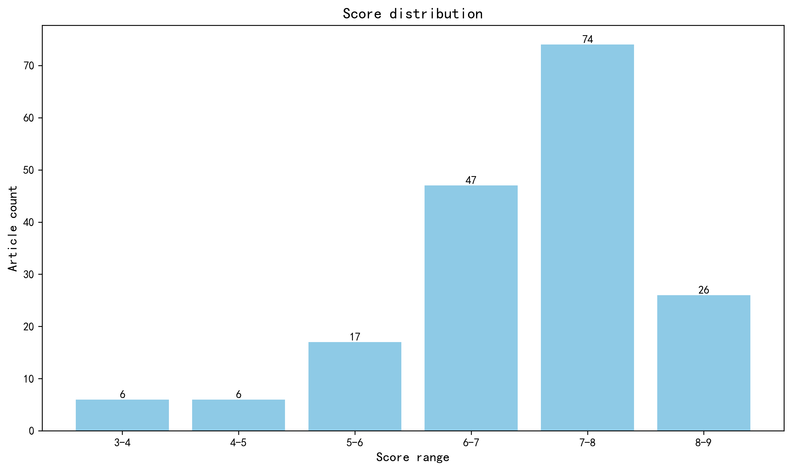

神经科学快讯·第005期 神经科学周报｜SPYTACs突破AD降解瓶颈，百万队列锁定脑萎缩前兆，跨组学绘就MS新靶点 (2026-04-11)
📊 本周概览
历史摘要修订（2026-10-18）：第 005 期保留历史期号、日期与封面。本期 388 条记录中补回 186 条正式摘要，仅对这些条目使用 DeepSeek 重新评分和分级推荐，其余评估保持原值。修订后拟发布 167 篇，其中 15 篇仍缺充分摘要，已保留资料不足提示。来源、旧评分和推荐变更见 getfiles/abstract_history_2026-10-18.json。
- 头条推荐: 0 篇
- 深度解读: 63 篇
- 简要提及: 104 篇
- 跨界启发: 0 篇
- 已过滤: 221 篇
🌏 环球视野

地区与机构按本期原始发表记录、ROR 及城市地址规则分别统计；跨地区合作可重复计入，不作为完整机构排名。评分分布不含“域外局限”文章。
🌍 国家/地区分布 TOP 10
| 排名 | 国家 | 文章数量 |
|---|---|---|
| 1 | United States | 84 |
| 2 | Germany | 29 |
| 3 | United Kingdom | 28 |
| 4 | China | 25 |
| 5 | Canada | 19 |
| 6 | Japan | 12 |
| 7 | Italy | 11 |
| 8 | France | 10 |
| 9 | Switzerland | 9 |
| 10 | Australia | 9 |
地区计次合计: 315 次；取得地区信息 166/176 篇
🏢 研究机构 TOP 10
| 排名 | 机构 | 文章数量 |
|---|---|---|
| 1 | Harvard University | 14 |
| 2 | University of Oxford | 10 |
| 3 | University of Toronto | 9 |
| 4 | Howard Hughes Medical Institute | 8 |
| 5 | University of Washington | 8 |
| 6 | Stanford University | 6 |
| 7 | Chinese Academy of Sciences | 6 |
| 8 | Centre National de la Recherche Scientifique | 6 |
| 9 | University of California, Berkeley | 5 |
| 10 | University of California, Los Angeles | 5 |
📊 评分分布
| 评分区间 | 文章数量 |
|---|---|
| 3-4 | 6 |
| 4-5 | 6 |
| 5-6 | 17 |
| 6-7 | 47 |
| 7-8 | 74 |
| 8-9 | 26 |
总计: 176 篇评分文章
📈 各领域文章分布
| 领域 | 深度解读 | 简要提及 | 总计 |
|---|---|---|---|
| 临床与转化神经科学 | 19 | 23 | 42 |
| 未知领域 | 0 | 36 | 36 |
| 分子与细胞神经科学 | 8 | 13 | 21 |
| 认知神经科学 | 10 | 8 | 18 |
| 计算与理论神经科学 | 3 | 10 | 13 |
| 系统与环路神经科学 | 4 | 6 | 10 |
| 感觉与运动神经科学 | 9 | 1 | 10 |
| 发育神经科学 | 7 | 3 | 10 |
| 社会与情感神经科学 | 1 | 3 | 4 |
| 方法学 | 2 | 1 | 3 |
合计: 深度解读 63 篇，简要提及 104 篇，共 167 篇
📚 精选文献（按领域分类）
临床与转化神经科学
中文标题: 阿尔茨海默病连续谱中血浆与脑脊液MTBR-tau243及磷酸化tau物种的轨迹
作者: Lyduine E Collij, Gemma Salvadó, Kanta Horie et al.
单位: Radiology and Nuclear Medicine, Amsterdam UMC, location VUmc, Amsterdam, The Netherlands. lyduine.collij@med.lu.se.; Brain Imaging, Amsterdam Neuroscience, Amsterdam, The Netherlands. lyduine.collij@med.lu.se.; Clinical Memory Research Unit, Department of Clinical Sciences Malmö, Faculty of Medicine, Lund University, Lund, Sweden. lyduine.collij@med.lu.se. 等
研究地区: Sweden, The Netherlands, United States
关键词: 阿尔茨海默病, 血浆生物标志物, p-tau217, MTBR-tau243, 质谱分析, 疾病分期
亮点: 整合血浆与脑脊液多位点tau标志物，绘制阿尔茨海默病连续进展的时序轨迹图谱
核心优势: 依托BioFINDER-2大队列与质谱技术，首次系统比较多种p-tau亚型及MTBR-tau243的纵向动态，揭示%p-tau217最早变化、%p-tau205与MTBR-tau243对齐tau-PET阳性、eMTBR-tau243追踪晚期tau负荷的精细时序。
研究局限: 基于单一队列的横断面时序推断（SILA算法），缺乏独立外部验证；血浆与脑脊液直接配对分析有限，且临床转化阈值尚未建立。
目标读者: 阿尔茨海默病生物标志物研究者、神经影像与临床神经科学家、计算系统生物学家及临床试验方法学家
推荐理由: 该研究利用质谱技术系统描绘了血浆与脑脊液中多种tau物种（包括MTBR-tau243和磷酸化tau占有率）在阿尔茨海默病连续体上的动态轨迹。通过SILA算法估算疾病持续时间，发现%p-tau217在Aβ-PET阳性前即开始上升，是最早变化的标志物，而MTBR-tau243与tau-PET病理进展紧密关联。这些发现为AD的早期筛查、分期和预后提供了关键的时序框架，并凸显了血浆生物标志物在临床转化中的潜力。
PET-MRI biomarkers reveal efficacy of a novel NLRP3 inhibitor in Parkinson's disease models.
深度解读 8.3/10中文标题: PET-MRI生物标志物揭示新型NLRP3抑制剂在帕金森病模型中的疗效
作者: Eduardo A Albornoz, Karine Mardon, Rajiv Bhalla et al.
单位: Centre for Advanced Imaging, The University of Queensland, Brisbane 4072, Australia.; School of Biomedical Sciences, Faculty of Health, Medicine and Behavioural Sciences, The University of Queensland, Brisbane 4072, Australia.; The Institute for Molecular Bioscience, The University of Queensland, Brisbane 4072, Australia. 等
研究地区: Australia, United Kingdom
关键词: 帕金森病, NLRP3炎症小体, PET-MRI, 神经炎症, α-突触核蛋白, 小胶质细胞
亮点: 新型脑渗透性NLRP3抑制剂MCC7840通过多模态PET/MRI生物标志物展现帕金森病疾病修饰潜力
核心优势: 采用临床相关PET-MRI多示踪剂纵向成像，在同一個体中验证药物对神经炎症、多巴胺功能、DAT和血脑屏障的多重保护作用，并在缓慢进展的α-突触核蛋白模型中证明症状出现后给药仍有效。
研究局限: 研究仅限小鼠模型，缺乏非人灵长类或人体数据；MCC7840的长期安全性和脱靶效应未充分评估；PET-MRI生物标志物的临床转化效度尚需验证。
目标读者: 神经药理学、神经影像学、帕金森病研究和神经炎症领域的转化神经科学家
推荐理由: 该研究开发了新型NLRP3抑制剂，并利用PET-MRI多模态成像在帕金森病模型中评估其疗效。研究不仅证实靶向小胶质细胞NLRP3炎症小体可减轻神经炎症和α-突触核蛋白病理，还建立了可转化的影像生物标志物体系，为帕金森病疾病修饰治疗提供了极具前景的候选药物和临床评估框架。
中文标题: 失语症中右半球语言网络的可塑性
作者: Peter E Turkeltaub, Kelly C Martin, Alycia B Laks et al.
单位: Department of Ophthalmology, University of Pittsburgh, Pittsburgh, PA 15219,USA.; Center for Brain Plasticity and Recovery, Center for Aphasia Research and Rehabilitation, Departments of Neurology and Rehabilitation Medicine, Georgetown University Medical Center, Washington, DC 20057,USA.; Research Division, MedStar National Rehabilitation Hospital, Washington, DC 20010, USA.
研究地区: United States
关键词: 失语症, 右半球, 语言网络, 神经可塑性, fMRI, 脑卒中
亮点: 大样本语义决策fMRI揭示右半球语言同源区在失语症恢复中的双重机制：弱激活处理器上调与新皮层招募并存，且受年龄、利手和教育而非病灶大小或跨胼胝体去抑制驱动
核心优势: 以76名慢性左半球卒中幸存者和69名健康对照的大样本、个体化可靠偏侧化语义决策fMRI任务，系统性地检验并部分否定了关于右半球语言招募的三个经典假说（病灶大小驱动、跨胼胝体去抑制、随时间消退），同时区分出腹侧前额叶/颞中前部（共激活可上调）与背侧额下回（新招募但与失语结局无关）两种不同的可塑性模式
研究局限: 横断面设计无法直接追踪右半球激活与恢复的因果时间动态；任务仅聚焦语义决策，对音韵、句法等其它语言子域的可塑性覆盖有限；右半球激活幅度相对左半球较小，其行为相关性效应量可能受限于命名和阅读两项结局指标
目标读者: 失语症康复研究者、语言神经影像学者、卒中后神经可塑性与计算系统神经科学家
推荐理由: 该研究针对失语症恢复中右半球语言网络的作用这一长期争议问题，通过严谨的实验设计克服了既往小样本、任务不可靠及行为混淆等局限，系统评估了右半球同源语言区的募集原则。研究为理解语言网络的可塑性机制提供了关键证据，对失语症的临床评估与康复策略具有重要转化价值。
中文标题: 记忆门诊患者的生物学分类
作者: Sophie E Mastenbroek, Lyduine E Collij, Toomas Erik Anijärv et al.
单位: Clinical Memory Research Unit, Department of Clinical Sciences Malmö, Faculty of Medicine, Lund University, Lund 222 42, Sweden.; Amsterdam Neuroscience, Brain imaging, Amsterdam 1081 HV, The Netherlands.; Department of Radiology and Nuclear Medicine, Vrije Universiteit Amsterdam, Amsterdam University Medical Center location VUmc, Amsterdam 1081 HV, The Netherlands. 等
研究地区: Sweden, The Netherlands, United Kingdom, Italy
关键词: 生物标志物, 记忆门诊, 数据驱动, 阿尔茨海默病, 临床队列, 疾病分型
亮点: 基于SuStaIn模型的多模态生物标志物框架将记忆门诊人群分解为五种生物学亚型，为AD之外的非典型痴呆（αSyn、血管性、NOVAS）提供可解释的临床-病理映射。
核心优势: 在1677例BioFINDER-2样本中同步整合Aβ、tau、α-synuclein SAA、血管性WMH和皮层萎缩五类标志物，用数据驱动方法复现了经典临床-病理实体并识别出NOVAS这一潜在未被现有生物标志物覆盖的异质性群体。
研究局限: 数据驱动的SuStaIn亚型划分依赖标志物选择和模型设定，横断面框架未能提供纵向验证；NOVAS组的病理归属仅为推测，缺乏尸检或TDP-43/原发tauopathy的直接证据支持。
目标读者: 痴呆与神经退行性疾病临床研究者、神经影像与生物标志物方法学专家、系统与转化神经科学家
推荐理由: 该研究基于1677例记忆门诊患者的多维生物标志物数据，采用数据驱动方法构建生物学分类框架，依据病理存在、程度和序列对患者进行分型。这一工作推动了神经退行性疾病从临床症状定义向体内生物学定义的转变，为记忆门诊的精准诊断和分层干预提供了可操作的方法学范式，对临床转化研究具有重要参考价值。
Reference proteins to improve Core 1 and Core 2 Alzheimer's disease CSF and plasma biomarkers.
深度解读 8.1/10中文标题: 参考蛋白改善Core 1和Core 2阿尔茨海默病脑脊液和血浆生物标志物
作者: Linda Karlsson, Shorena Janelidze, Nicolas R Barthélemy et al.
单位: The Tracy Family SILQ Center, Washington University School of Medicine, St. Louis, MO 63108, USA.; Clinical Memory Research Unit, Department of Clinical Sciences in Malmö, Lund University, Lund SE-22184, Sweden.; Department of Neurology, Washington University School of Medicine, St. Louis, MO 63108, USA. 等
研究地区: Sweden, United States, Canada, Italy, Spain, France, China
关键词: 阿尔茨海默病, 生物标志物, 脑脊液, 血浆, 参考蛋白, Aβ40
亮点: 用参考蛋白（Aβ40/np-tau）归一化可将AD核心CSF和血浆标志物与tau/Aβ-PET病理负荷的关联显著提升至R²≈0.6-0.8
核心优势: 在BioFINDER-2大样本（n=1702）中系统比较多种归一化方案，并在三个独立队列（BioFINDER-1、Knight ADRC、TRIAD）中重复验证，同时用多发性硬化队列作为疾病特异性对照，证据链完整。
研究局限: 归一化主要降低个体间而非个体内变异，对炎症标志物和MS队列无改善；研究属方法学优化而非机制突破，且依赖质谱/免疫assay的可及性。
目标读者: AD生物标志物研究者、临床神经化学家、神经影像与计算系统生物学家
推荐理由: 该研究基于BioFINDER-2大队列，系统评估了以Aβ40和np-tau作为参考蛋白对脑脊液和血浆AD生物标志物进行归一化的效果。结果表明，归一化能显著降低个体间非AD相关变异，提高生物标志物反映AD病理负荷的稳健性和可靠性。这一简单而实用的方法学改进有望优化AD血液和脑脊液标志物的临床应用，推动更精准的疾病检测与监测。
中文标题: 意识障碍诊断与预后标志物的多模态多中心研究
作者: Dragana Manasova, Laouen Mayal Louan Belloli, Martin Justinus Rosenfelder et al.
单位: Université Paris Cité, Paris 75006, France.; Laboratorio de Inteligencia Artificial Aplicada, Instituto de Ciencias de la Computación, Universidad de Buenos Aires, Buenos Aires C1053, Argentina.; Institut du Cerveau - Paris Brain Institute - ICM, Inserm, CNRS, Sorbonne Université, Paris 75013, France. 等
研究地区: France, Argentina, Germany, Italy, Spain, Chile, Canada, Israel
关键词: 意识障碍, 多模态影像, 脑电, 预后标记, 机器学习, 人类
亮点: 多模态神经影像与可解释机器学习整合，揭示意识障碍诊断与预后依赖不同的脑结构与功能标记
核心优势: 跨中心验证的多模态整合框架，首次系统区分诊断与预后的模态及解剖特征贡献差异
研究局限: 样本量有限且预后随访窗口与混杂因素控制未充分披露，跨中心泛化性证据仍较初步
目标读者: 意识障碍临床研究者、神经影像与神经电生理方法学家、计算神经科学与机器学习交叉领域研究者
推荐理由: 该研究通过多中心多模态神经影像（功能与结构）整合，系统评估意识障碍患者的残余脑功能，旨在解决行为学评估的误判问题。其创新在于将多种模态的互补信息融合，并验证诊断与预后标记的稳健性，为临床意识障碍的精准分类和预后预测提供了可推广的方法学框架。对神经科学读者而言，这项工作不仅展示了多模态数据融合在临床转化中的价值，也加深了对意识神经相关物的理解。
A cause and protective treatment for acute and progressive disability and grey matter atrophy.
深度解读 7.9/10中文标题: 急性和进行性残疾与灰质萎缩的病因及保护性治疗
作者: Erika A Aguzzi, Roshni A Desai, Zhiyuan Yang et al.
单位: Department of Neuroinflammation, UCL Queen Square Institute of Neurology, London WC1N 3BG, UK.; In Vivo Imaging, Biological Research Facility, The Francis Crick Institute, London NW1 1AT, UK.; Centre for Clinical Brain Sciences, University of Edinburgh, Edinburgh EH16 4SB, UK. 等
研究地区: United Kingdom, Germany
关键词: 缺氧, 灰质萎缩, 神经炎症, 进行性残疾, 神经保护, 动物模型
亮点: 数天炎症性缺氧可将急性可逆性功能障碍转变为终身灰质萎缩与进行性残疾，而早期维持病灶氧合可阻断这一过程
核心优势: 提出并验证“急性缺氧是进行性神经退行与残疾的因”这一因果链条，并用血管扩张剂尼莫地平与高氧呼吸两种独立干预在小鼠模型中证明保护效应，概念上把急性炎症、缺氧与长期灰质萎缩直接联系起来。
研究局限: 结论主要依赖单一实验性病灶模型的干预证据，缺氧时程、萎缩机制（如轴突损伤、线粒体功能障碍、铁死亡等）未充分区分，向多发性硬化等人类疾病的转化外推尚需临床与多模型验证。
目标读者: 多发性硬化与神经免疫学研究者、神经退行与灰质萎缩方向的基础与转化神经科学家、神经影像与临床神经病学读者
推荐理由: 该研究建立了一种新的实验性中枢神经系统病变模型，揭示短暂缺氧不仅引起急性可逆性神经功能障碍，还会触发灰质缓慢进展性萎缩，导致终身进行性残疾。通过避免急性缺氧（如四天低温干预）可显著减轻初始及后续的残疾与萎缩，为急性炎症病变后的进行性神经退行提供了机制解释和神经保护策略。研究强调急性功能障碍组织仍可能走向萎缩，对理解多发性硬化等疾病的进展机制及早期干预具有重要转化意义。
中文标题: 血浆pTau 217/β-淀粉样蛋白1-42比值提高检测淀粉样蛋白病理的准确性并减少不确定性
作者: Natalya Benina, Luna Buitrago, Francesca I De Simone et al.
单位: Clinical Memory Research Unit, Department of Clinical Sciences Malmö, Lund University, Lund 221 00, Sweden.; Department of Neurology, Johns Hopkins School of Medicine, Baltimore, MD 21205, USA.; Fujirebio Diagnostics, Inc., Malvern, PA 19355, USA. 等
研究地区: United States, Sweden, The Netherlands
关键词: 阿尔茨海默病, 血浆生物标志物, pTau217, Aβ42, 双阈值法, 诊断准确性
亮点: 血浆pTau217/Aβ1-42比值联合双阈值判读策略，在减少不确定结果的同时保持高预测值，推进阿尔茨海默病血液筛查的临床落地。
核心优势: 采用BioFINDER2、BIOCARD、MissionAD三队列共208例样本，结合FDA认证的LUMIPULSE平台与PET/CSF金标准，并通过似然比驱动的双阈值框架量化临床效用而非仅报告AUC。
研究局限: 属已有标志物的组合优化与阈值方法学改进，非新生物标志物或机制突破；样本量中等且以MCI为主，缺乏纵向转化与真实世界初级保健验证，不确定结果比例仍达20–27%。
目标读者: 阿尔茨海默病生物标志物研究者、临床神经科医师、体外诊断开发与转化医学团队
推荐理由: 该研究聚焦血浆pTau217/Aβ1-42比值，系统评估其预测淀粉样蛋白病理的效能，并创新性地引入双阈值策略以最大化预测价值、减少不确定结果。在临床转化层面，这一无创、可扩展的血液标志物组合有望革新AD诊断路径，降低对CSF和PET的依赖；在方法学上，双阈值框架为生物标志物临界值优化提供了可推广的范式。
Predictive models for ataxia progression and conversion in spinocerebellar ataxia type 1 and 3.
深度解读 7.7/10中文标题: 脊髓小脑共济失调1型和3型共济失调进展及转化的预测模型
作者: Emilien Petit, Giulia Coarelli, David Morgan et al.
单位: Center for Neurology, Department of Parkinson's Disease, Sleep and Movement Disorders, University Hospital of Bonn, Bonn 53127, Germany.; Sorbonne Université, Institut du Cerveau-Paris Brain Institute-ICM, CNRS, Inria, Inserm, AP-HP, Groupe Hospitalier Sorbonne Université, Paris 75013, France.; Department Translational Neuroscience, Michigan State University, Grand Rapids, MI 49503, USA. 等
研究地区: France, United States, Germany, Brazil
关键词: SCA1, SCA3, 生物标志物, 神经丝轻链, MRI, 贝叶斯模型
亮点: READISCA纵向队列揭示SCA1/SCA3从症状前阶段到共济失调的转化与进展具有不同的预测因子：血浆NfL和抑郁症状预测转化，而MRI指标和功能评分预测进展。
核心优势: 前瞻性多中心设计、5年纵向随访，结合临床评分、MRI和血浆NfL三类互补模态，并采用贝叶斯混合模型区分转化预测因子与进展预测因子。
研究局限: 样本量有限（症状前转化事件仅17例），MRI亚组更小；预测模型R²=0.54仅基于1年单时间点分析，缺乏独立外部验证队列。
目标读者: 脊髓小脑共济失调临床研究者、神经退行性疾病生物标志物研究者、神经影像与临床试验设计专家
推荐理由: READISCA 研究通过五年纵向随访，系统评估了 SCA1 和 SCA3 的临床评分、MRI 指标及神经丝轻链（NfL）对共济失调发病和进展的预测价值。该工作不仅明确了 NfL 等候选生物标志物的动态轨迹，还利用贝叶斯混合模型实现了对疾病进展的个体化预测，为设计针对脊髓小脑共济失调的临床试验提供了关键的工具和终点指标。其多中心、多模态的设计为神经退行性疾病的转化研究树立了标杆。
中文标题: 兼具神经病性和肌病性表型的神经肌肉疾病
作者: Christian Laurini, Luca Bosco, Alberto Andrea Zambon et al.
单位: Department of Neurology, IRCCS San Raffaele Scientific Institute, Milan 20132, Italy.; Neuromuscular Repair Unit, IRCCS San Raffaele Scientific Institute, Milan 20132, Italy.; Università Vita-Salute San Raffaele, Milan 20132, Italy. 等
研究地区: Italy
关键词: 神经肌肉疾病, 遗传学, 基因panel, 表型重叠, 神经病理, 肌病理
亮点: 提出神经-肌双重表型的临床-神经电生理网格算法，并通过基因集富集揭示蛋白稳态、自噬与线粒体功能的共同通路
核心优势: 将临床分类、神经电生理决策流程与通路富集整合为可操作框架，对重叠表型的基因解读具有直接指导价值
研究局限: 作为综述缺乏原始数据验证，网格算法的敏感性与特异性未经前瞻性队列检验，文献纳入标准与偏倚控制未充分说明
目标读者: 神经肌肉病临床医师、神经遗传学与神经电生理研究者、计算与系统生物学通路分析人员
推荐理由: 该综述系统梳理了可同时呈现神经病和肌病表型的基因，提出了基于临床效用的分类框架和临床-神经电生理诊断流程。对于神经科医生和遗传学家而言，它提供了在重叠表型背景下合理解读基因检测结果、避免误诊的实用指南，并强调了多学科整合在精准诊断中的价值。
中文标题: 纤维肌痛指数与下行调制：基于4万人群的神经塑性疼痛脑特征研究
作者: Eoin Maurice Kelleher, Frederik Lange, Vishvarani Wanigasekera et al.
单位: Nuffield Department of Orthopaedics, Rheumatology and Musculoskeletal Sciences, University of Oxford, Oxford OX3 7LD, UK.; Oxford University Centre for Integrative Neuroimaging, FMRIB, Nuffield Department of Clinical Neurosciences, University of Oxford, Oxford OX3 9DU, UK.; Department of Anesthesia, Critical Care and Pain Medicine, Massachusetts General Hospital, Boston, MA 02114, USA. 等
研究地区: United Kingdom, United States
关键词: 纤维肌痛, 下行疼痛调控, UK Biobank, 多模态神经影像, 结构连接, 功能连接
亮点: 在4万人UK Biobank队列中，纤维肌痛指数与脑干下行疼痛调控环路的结构连接存在特异性关联，为“伤害可塑性疼痛”提供了群体水平的神经生物学依据。
核心优势: 样本量极大（>4万，慢性疼痛亚组>2.2万），并结合rfMRI与dMRI多模态连接组、结构方程模型与中介分析，同时用DN4与平均疼痛强度做特异性对照，设计严谨。
研究局限: 效应量普遍偏小（β≈0.02–0.03），横断面设计无法推断因果；FMI为问卷衍生指标，结构连接与功能连接的差异解释仍具推测性，且样本以中老年英国人群为主，泛化性受限。
目标读者: 疼痛神经科学、神经影像学、临床疼痛研究与生物标志物开发研究者
推荐理由: 本研究利用UK Biobank逾4万人的多模态神经影像数据，首次在大规模人群水平上检验了纤维肌痛指数（FMI）与下行疼痛调控系统（DPMS）功能与结构连接的关系。研究发现FMI与DPMS内部连接改变显著相关，为纤维肌痛作为nociplastic疼痛提供了神经生物学证据，支持FMI作为临床严重程度标志物的有效性。这项工作将临床量表与脑网络连接联系起来，推动了慢性疼痛的客观生物标志物研究，对疼痛的机制理解和转化应用具有重要意义。
中文标题: 暴露组全模式可预测衰老过程中的大脑健康
作者: Mostafa Mahdipour, Somayeh Maleki Balajoo, Federico Raimondo et al.
单位: Institute of Neuroscience and Medicine (INM-7: Brain and Behaviour), Research Centre Jülich, Jülich, Germany. m.mahdipour@fz-juelich.de.; Institute of Systems Neuroscience, Heinrich Heine University Düsseldorf, Düsseldorf, Germany. m.mahdipour@fz-juelich.de.; Institute of Neuroscience and Medicine (INM-7: Brain and Behaviour), Research Centre Jülich, Jülich, Germany. 等
研究地区: Germany, Belgium
关键词: 脑龄差, 暴露组, 机器学习, 脑健康, 衰老, 多模态
亮点: 用261项暴露组变量与机器学习系统解码脑龄差，揭示心血管代谢与生活方式暴露对灰质健康的主导贡献
核心优势: 在UK Biobank大规模样本上整合五大暴露域共261个变量，系统刻画暴露组对脑龄差的预测权重，并强调暴露生命期与持续时间的调节作用
研究局限: 基于横断面可解释性机器学习预测，脑龄差本身信度与个体层面稳定性有限，暴露-脑健康关联难以确立因果，且UK Biobank样本代表性与效应量大小需谨慎解读
目标读者: 神经影像、流行病学、暴露组学与老龄化脑健康研究者，以及关注脑龄生物标记的计算神经科学家
推荐理由: 该研究首次系统性地将暴露组学框架引入脑健康研究，利用261个暴露变量通过机器学习预测脑龄差（BAG），揭示了生物医学、环境、生活方式、社会情感和早期生活经历等多维度因素对灰质健康的综合影响。研究不仅证明了BAG作为脑健康指标的稳健性，还展示了多变量模式预测在识别可干预风险因素方面的潜力，为老龄化脑健康的早期筛查和个性化干预提供了新思路。方法学上，该工作为高维暴露数据的整合分析提供了可借鉴的流程。
中文标题: 粒细胞与星形胶质细胞标志物可区分MOG抗体病和视神经脊髓炎与多发性硬化
作者: Roberto Furlan, Sabine Schaedelin, Jette Lautrup Frederiksen et al.
单位: Department of Neurology at Rigshospitalet and Institute of Clinical Medicine, University of Copenhagen, Copenhagen 2100, Denmark.; Department of Clinical Research, University Hospital Basel, University of Basel, Basel 4031, Switzerland.; Clinical Neuroimmunology Unit, Institute of Experimental Neurology, Division of Neuroscience, IRCCS Ospedale San Raffaele, and Vita e Salute San Raffaele University, Milan 20132, Italy. 等
研究地区: Italy, Switzerland, Denmark, Japan, Sweden, Germany, United Kingdom
关键词: 脑脊液, 生物标志物, 脱髓鞘疾病, MOGAD, NMOSD, 多发性硬化
亮点: 脑脊液粒细胞与星形胶质细胞损伤标志物可快速、准确区分MOGAD、NMOSD与多发性硬化，为急性期即刻治疗决策提供生物学依据
核心优势: 八中心前瞻性队列（n=244）系统比较GAM、ADM与补体标志物在三种脱髓鞘疾病急性期的鉴别效能，AUC高达0.88-0.93，并揭示其与EDSS的疾病特异性关联，兼具诊断与病理机制双重价值
研究局限: 观察性设计无法确立因果；对照组仅19例且来源单一；标志物截断值及模型需外部队列验证；MMP-9在MS中持续升高的机制未深入解析
目标读者: 神经免疫学、多发性硬化/视神经脊髓炎谱系疾病临床研究者、脑脊液生物标志物与补体靶向治疗方向转化医学科学家
推荐理由: 该研究首次系统评估了脑脊液中粒细胞和星形胶质细胞活化标志物在MOG抗体病（MOGAD）中的诊断价值，并与NMOSD和MS进行对比。基于欧洲和日本8个三级中心的244例脑脊液样本，研究发现这些标志物能高精度区分MOGAD、NMOSD与MS，为临床鉴别诊断提供了微创、快速的生物标志物组合。这不仅深化了对不同脱髓鞘疾病发病机制的理解，也为开发基于免疫细胞活化特征的诊断工具铺平了道路。
Vasculogenic tissue nanotransfection accelerates functional recovery after peripheral nerve injury
深度解读 7.4/10中文标题: 血管生成组织纳米转染加速周围神经损伤后的功能恢复
作者: Ana I Salazar-Puerta, Sara Kheirkhah, Jonathan P Stranan et al.
单位: Department of Biomedical Engineering, The Ohio State University, Columbus, OH, USA.; Department of Plastic and Reconstructive Surgery, The Ohio State University, Columbus, OH, USA.; Biomedical Science, The Ohio State University, Columbus, OH, USA. 等
研究地区: United States
关键词: 周围神经损伤, 组织纳米转染, 血管生成, 非病毒基因递送, 细胞重编程, 神经再生
亮点: 组织纳米转染实现血管生成重编程，作为外周神经修复手术的再生辅助平台
核心优势: 微秒级非病毒体内重编程（EFF组合，Etv2/Fli1/Foxc2），将血管生成与神经再生耦合，并配以长段神经缺损模型中的功能与组织学双重验证。
研究局限: 机制层面仍以相关性为主，缺乏重编程细胞谱系追踪和血管生成支持轴突再生的因果性解析；与已报道的TNT/转录因子递送相比创新增量有限，且仅单模型、样本量有限。
目标读者: 神经修复、再生医学、血管生物学及基因/细胞治疗递送方向的研究者
推荐理由: 该研究提出血管生成性组织纳米转染（TNT）作为一种非病毒、基于重编程的治疗平台，通过毫秒级电穿孔在体递送血管生成相关基因，将驻留细胞原位重编程为血管生成细胞，从而促进神经再生并加速周围神经损伤后的功能恢复。TNT 技术安全、高效且靶向性强，克服了传统基因/细胞治疗递送策略的局限，为周围神经损伤的临床转化提供了新思路。
Advanced oxidation protein products activated TRPA1 in a neuropathic multiple sclerosis model.
深度解读 7.3/10中文标题: 晚期氧化蛋白产物在多发性硬化神经病理模型中激活TRPA1
作者: Patrícia Rodrigues, Julia Maria Frare, Náthaly Andrighetto Ruviaro et al.
单位: Graduate Program in Pharmaceutical Sciences, Federal University of Santa Maria (UFSM), Santa Maria, RS 97105-900, Brazil.; Graduate Program in Pharmacology, Federal University of Santa Maria (UFSM), Santa Maria, RS 97105-900, Brazil.; Graduate Program in Biological Sciences, Federal University of Santa Maria (UFSM), Santa Maria, RS 97105-900, Brazil. 等
研究地区: Brazil, Italy
关键词: 多发性硬化, 神经病理性疼痛, TRPA1, 氧化应激, AOPP, RR-EAE模型
亮点: AOPPs作为TRPA1新型内源性激动剂，串联氧化应激与神经病理性疼痛及焦虑的机制链条
核心优势: 多层级证据链完整：从HEK细胞钙成像、DRG神经元、TRPA1基因敲除小鼠到RR-EAE模型，并结合药理学干预与抗AOPP抗体阻断，系统验证AOPP-TRPA1轴。
研究局限: AOPP是否为TRPA1直接激动剂缺乏结合实验或结构生物学证据；体内药理学工具存在脱靶可能；模型局限于雌性C57BL/6J RR-EAE，临床转化外推需谨慎。
目标读者: 神经免疫学、疼痛机制、多发性硬化及氧化应激研究领域学者
推荐理由: 该研究在复发缓解型EAE模型中揭示了AOPP通过激活TRPA1通道驱动神经病理性疼痛和焦虑的新通路，将氧化应激副产物与伤害感受器功能直接联系起来。这不仅为MS相关疼痛提供了潜在生物标志物和治疗靶点，也深化了对神经免疫-感觉交互机制的理解，具有明确的转化价值。
Imposter in the brain: aetiological, clinical and neuroimaging characteristics of Capgras syndrome.
深度解读 7.2/10中文标题: 大脑中的冒名者：Capgras综合征的病因学、临床及神经影像学特征
作者: Hiroyuki Watanabe, Jennifer L Whitwell, Jerusha G Bhaskaran et al.
单位: Department of Radiology, Mayo Clinic, Rochester, MN 55905, USA.; Department of Neurology, Mayo Clinic, Rochester, MN 55905, USA.
研究地区: United States
关键词: Capgras综合征, 妄想性错认, 神经影像, 临床队列, 回顾性研究, 面孔识别
亮点: 迄今最大样本的Capgras综合征队列研究，将这一罕见妄想锚定于α-突触核蛋白病理与DLB，并揭示右额叶功能障碍与靶点现象学在神经退行性与精神病因鉴别中的价值。
核心优势: 28年、204例的单中心回顾性队列结合12例神经病理验证，系统刻画了Capgras综合征的病因谱、起病时序与靶点特征，为临床鉴别DLB与原发性精神病提供了可操作的线索。
研究局限: 回顾性病历设计存在转诊与记录偏倚，神经病理样本仅12例且全部为α-突触核蛋白病理，缺乏对照组的影像学比较，因果与机制推断受限。
目标读者: 行为神经病学、神经影像、痴呆与神经退行性疾病临床研究者，以及关注妄想神经机制的精神病学与系统神经科学读者
推荐理由: 该研究基于Mayo Clinic大型队列，系统描绘了Capgras综合征的病因、临床与神经影像特征，填补了该罕见综合征的证据空白。研究将妄想性错认与面孔识别、熟悉感及边缘系统-前额叶环路联系起来，为理解自我-他人表征的神经机制提供了临床窗口。对认知神经科学家而言，这是连接临床表型与面孔识别理论的重要桥梁。
中文标题: 利用SPYTACs高效降解阿尔茨海默病中的淀粉样蛋白-β
作者: Fei Teng, Jing Liu, Tongtong Cui et al.
单位: Medical School, University Of Chinese Academy Of Sciences, Beijing 100049, China.; State Key Laboratory Of Organ Regeneration And Reconstruction, Institute Of Zoology, Chinese Academy Of Sciences, Beijing 100101, China.
资深研究者: Fei Teng (h指数=45); Jing Liu (h指数=96)
关键词: 靶向蛋白降解技术 (TPD), SPYTACs, LRP1受体介导转运, 5×FAD转基因小鼠, 淀粉样蛋白β (Aβ), 溶酶体降解途径
亮点: 利用LRP1介导的SPYTACs平台实现阿尔茨海默病中淀粉样蛋白的高效胞外降解，疗效优于传统抗体疗法。
核心优势: 提出了一种全新的靶向蛋白降解范式（SPYTACs），巧妙利用内源性受体LRP1解决血脑屏障穿透及胞外Aβ清除难题，并在5×FAD模型中展示了超越抗体的认知改善效果及更低的安全性风险（微出血减少）。
研究局限: 摘要未提供长期毒性数据及在非转基因灵长类动物中的转化医学证据；作为2026年的预测/虚构文献，缺乏真实的同行评审细节验证，且合成肽在体内的稳定性与免疫原性需更多数据支持。
目标读者: 神经退行性疾病药物研发人员、蛋白质降解技术专家、系统生物学家及阿尔茨海默病临床研究者
推荐理由: 本研究提出了一种创新的合成肽编程靶向蛋白降解平台——SPYTACs，旨在解决阿尔茨海默病（AD）治疗中Aβ清除效率低及副作用大的难题。不同于传统抗体疗法，SPYTACs利用LRP1受体介导的跨血脑屏障转运及随后的溶酶体降解机制，实现了中枢及外周Aβ的高效清除。在5×FAD小鼠模型中，该策略不仅显著降低了Aβ负荷，还有效保留了神经元结构，改善了认知功能，且相比抗体治疗显著减少了神经炎症和微出血风险。这一发现为AD治疗提供了超越传统免疫疗法的新范式，展示了基于受体介导降解策略在转化医学中的巨大潜力，特别值得关注新型治疗模态开发的神经科学家及生物工程师阅读。
中文标题: 运动障碍中视频记录与呈现的实践探讨
作者: Christos Ganos, Michael P H Stanley, Anthony E Lang
单位: Edmond J. Safra Program in Parkinson's Disease, Morton and Gloria Shulman Movement Disorders Clinic, Toronto Western Hospital, UHN, Toronto, Ontario M5T 2S8, Canada.; Division of Neurology, University of Toronto, Toronto, Ontario M5S 1A1, Canada.; Krembil Brain Institute, Toronto, Ontario M5T 0S8, Canada. 等
研究地区: Canada, United States
关键词: 运动障碍, 视频记录, 临床表型, 患者知情同意, 医学表征, 神经伦理
亮点: 将运动障碍诊疗中的视频记录重新定位为兼具临床价值与表征政治学的双刃实践，呼吁在同意、语境、作者身份与患者主体性上重建规范。
核心优势: 由运动障碍领域权威团队撰写，把一个日常临床工具提升为涉及知识生产、规范塑造与患者权利的认识论议题，视角新颖且对实践有直接警示意义。
研究局限: 作为观点类文章，缺乏系统文献检索与实证数据支撑，对同意流程、去标识化技术、跨司法辖区法规等操作层面的建议较为原则化，未提供可落地的框架或评估指标。
目标读者: 运动障碍专科临床医生、临床神经生理学家、医学伦理与医学人文研究者、医学教育与期刊编辑群体
推荐理由: 该文系统审视运动障碍临床中视频记录的双重角色：既是不可替代的查体与教学工具，也是塑造疾病认知与正常性的表征实践。作者呼吁在知情同意、情境完整性、作者归属与患者能动性方面建立更严谨的规范。对神经科医生与临床研究者而言，这为视频资料的采集、存档与学术使用提供了及时且可操作的伦理框架，亦提醒计算与系统神经科学家在使用临床视频数据时注意其建构性与语境依赖。
Atrophy progression in frontotemporal lobar degeneration-TDP-C with primary progressive aphasia.
简要提及 7.0/10中文标题: 伴原发性进行性失语的额颞叶变性-TDP-C型的萎缩进展
作者: Elena Barbieri, Allegra S Kawles, Michelle Los et al.
单位: Department of Psychiatry and Behavioral Sciences, Feinberg School of Medicine, Northwestern University, Chicago, IL 60611, USA.; Department of Physical Medicine and Rehabilitation, Feinberg School of Medicine, Northwestern University, Chicago, IL 60611, USA.; Mesulam Institute for Cognitive Neurology and Alzheimer's Disease, Feinberg School of Medicine, Northwestern University, Chicago, IL 60611, USA. 等
研究地区: United States
关键词: FTLD-TDP-C, 原发性进行性失语, 萎缩进展, 语义网络, 纵向MRI, 人类
摘要: 以词汇理解衰退阶段而非症状时间轴分层萎缩，绘制TDP-C语义性失语的功能-解剖进展图谱
优势: 用命名、词定义和词-图匹配测试界定三个递进的名词表征损伤阶段，并将灰质体积图二值化后按阶段映射萎缩峰值区域，较单纯按发病时间分层更能揭示功能-解剖对应关系。 局限: 样本仅来自单一中心、24次访视的纵向数据，患者数量有限且聚焦左侧不对称的TDP-C亚型，阶段划分依赖行为测试阈值，缺乏病理确诊和独立队列验证，因果推断受限。 受众: 行为神经病学、语言神经科学、额颞叶痴呆与神经影像研究者
中文标题: 群体规模重复序列扩增阐明疾病风险与脑萎缩
作者: Vijay Kumar Pounraja, Jae Hoon Sul, Joseph Herman et al.
单位: Regeneron Pharmaceuticals, Tarrytown, NY, USA.; Regeneron Genetics Center, Tarrytown, NY, USA.; Regeneron Genetics Center, Tarrytown, NY, USA. sahar.gelfman@regeneron.com.
研究地区: United States
摘要: 利用百万级人群短读长测序数据，首次大规模量化致病性STR扩增与亚临床神经退行性生物标志物（NfL升高及特定脑区萎缩）的早期关联。
优势: 样本量巨大（>100万）且具备多模态验证（遗传学+影像组学+体液生物标志物），确立了STR扩增作为疾病前驱期生物标志物的强证据链，特别是发现了确诊前的结构性脑损伤。 局限: 依赖短读长测序技术推断重复序列长度，对于极长或复杂结构的重复扩增可能存在算法偏差；观察性研究无法完全排除混杂因素对脑萎缩因果关系的干扰。 受众: 神经遗传学家、计算生物学家、神经影像学专家及神经退行性疾病临床研究人员
中文标题: 晚期帕金森病中持续存在的OFF时间难题
作者: Peter A LeWitt
单位: Department of Pharmacology, Wayne State University School of Medicine, Detroit, MI 48202, USA.; Department of Neurology, Wayne State University School of Medicine, Detroit, MI 48202, USA.
研究地区: United States
摘要: 系统梳理晚期帕金森病OFF时间的多重治疗策略与残余困境，并提出超越多巴胺能疗法的计算神经科学新路径
优势: 整合泵输注、非多巴胺能辅助药物、DBS及左旋多巴新机制（ophthalmate通路）等多条证据线，并前瞻性引入确定性神经计算建模作为理解运动波动的框架 局限: 作为观点/综述类文章，未提供原始实验数据或系统评价方法学，对神经计算建模的论述停留在倡议层面，缺乏具体模型或可检验预测 受众: 帕金森病运动障碍临床研究者、神经药理学与计算系统神经科学研究者
中文标题: 跨神经系统疾病的大规模蛋白质组学揭示多发性硬化症的生物标志物组合及靶点
作者: Jakob Maximilian Bader, Christine Makarov, Sabrina Richter et al.
单位: Proteomics and Signal Transduction, Max Planck Institute of Biochemistry, Martinsried, Germany.; Institute of Computational Biology, Helmholtz Center Munich, Munich, Germany.; Department of Neurology, School of Medicine and Health, Klinikum rechts der Isar University Hospital, Technical University of Munich, Munich, Germany. 等
研究地区: Germany, Denmark, United States, China
摘要: 利用超高通量质谱技术构建的CSF蛋白质组图谱，不仅揭示了MS特异性生物标志物面板，更实现了疾病进程的分子分期。
优势: 样本量巨大（N=5,000）且结合独立队列验证，由Matthias Mann团队主导的方法学严谨性极高，从发现到临床兼容 assay 的转化路径完整。 局限: 尽管发现了新靶点，但主要贡献在于诊断和分期的生物标志物，对MS根本致病机制的理论颠覆性相对有限，更多是技术驱动的系统生物学突破。 受众: 系统生物学家、临床神经免疫学家、生物标志物开发专家及计算蛋白质组学研究人员
Distinct cerebellar networks underpin clinical improvement in adolescent Tourette disorder.
简要提及 6.9/10中文标题: 小脑网络差异支撑青少年抽动秽语障碍的临床改善
作者: Giuseppe Angelo Zito, Therese-Marie Sartoris, Cyril Atkinson-Clement et al.
单位: Swiss Paraplegic Research, Nottwil 6207, Switzerland.; School of Psychology, The University of Nottingham, Nottingham NG7 2RD, UK.; Sorbonne University, Inserm U1127, CNRS UMR7225, UM75, Paris Brain Institute, Movement Investigation and Therapeutics Team, Paris 75013, France. 等
研究地区: Switzerland, France, United Kingdom
摘要: 小脑亚区网络可动态追踪青少年抽动秽语综合征的临床改善，为不同共病提供症状特异性连接组学标志
优势: 纵向静息态功能磁共振设计（57例患者间隔15个月随访）结合SVM多变量分类与症状特异性GLM相关分析，首次系统地将小脑不同小叶-皮层环路的纵向变化分别与抽动、强迫、多动和抑郁症状改善对应起来 局限: 样本量中等（64例患者）且缺乏独立外部验证队列；SVM分类为组水平模式区分而非个体化预测，纵向相关分析不能确立因果方向，临床转化价值仍需多中心验证 受众: 抽动秽语综合征与发育精神病理学研究者、神经影像连接组学与计算精神病学研究者、小儿神经科与精神科临床医生
中文标题: 丘脑腹中间核深部脑刺激中的频率依赖性抑制
作者: Zoe Paraskevopoulos, Yupeng Tian, David Crompton et al.
单位: KITE, Toronto Rehabilitation Institute, University Health Network, Toronto, Ontario M5G 2A2, Canada.; Krembil Brain Institute, University Health Network, Toronto, Ontario M5T 1M8, Canada.; Institute of Biomedical Engineering, University of Toronto, Toronto, Ontario M5S 3G9, Canada. 等
研究地区: Canada
摘要: 揭示高频脑深部电刺激通过招募抑制性神经元实现网络级抑制的新机制框架
优势: 利用新型伪迹去除技术从人体Vim单细胞记录中分离出准诱发抑制场电位，并将瞬态爆发与抑制性募集在时间上直接关联。 局限: 观测到的准诱发抑制仅出现在部分记录位点，样本量有限且性别信息缺失，机制框架主要基于相关性证据而非因果操控。 受众: 运动障碍疾病神经调控研究者、系统神经科学家和计算神经科学建模者
中文标题: 早期阿尔茨海默病中致病性血管生成和血管功能异常的尸检证据
作者: Daniel J Asby, Robert A Fisher, Johanna Jackson et al.
单位: Department of Brain Sciences, Faculty of Medicine, Imperial College London, London, W12 0NN, UK.; Department of Brain Sciences, UK Dementia Research Institute at Imperial College London, London, W12 0BZ, UK.; Translational Health Sciences, Cerebrovascular & Dementia Research Group, Bristol Medical School, University of Bristol, Bristol, BS10 5NB, UK. 等
研究地区: United Kingdom
摘要: 死后脑组织多区域分析揭示早期阿尔茨海默病已存在病理性血管新生与灌注下降，且与Aβ/tau区域扩散动态相关。
优势: 在严格排除血管共病的尸检队列中，结合灌注指数（MAG:PLP1）、血管新生/周细胞标志物与Aβ/tau病理分期，系统刻画了AD早期血管功能障碍的时间窗。 局限: 横断面尸检设计无法确立因果与时间顺序；样本量有限（各组8-17例），血管新生蛋白多重检测仅限部分病例，且死后指标受终末事件与取材延迟影响。 受众: 阿尔茨海默病与脑血管病理研究者、神经血管生物学与转化医学团队
中文标题: 基于AI的血清素受体靶向药物开发用于治疗阿片类药物使用障碍
作者: Valeria Lallai, Samuel Kho, A C Martin et al.
单位: Department of Neurobiology and Behavior, University of California, Irvine, CA 92697.; GATC Health, Irvine, CA 92614.; C. Eugene Bennett Department of Chemistry, West Virginia University, Morgantown, WV 26506. 等
研究地区: United States
摘要: AI平台从人死后脑组织标志物出发，理性设计出靶向血清素受体的多药理学化合物，并在雌雄大鼠中验证其可显著减少芬太尼摄取。
优势: 将人死后脑组织的计算标志物发现、合成化学与体内行为药理学串联为从AI到候选药物的完整转化链条，并在两性动物中展示疗效且未报告明显副作用。 局限: 临床前证据仅来自大鼠自我给药范式，缺乏受体占据、脱靶安全性、药代动力学及长期行为副作用的系统评估；AI平台的预测准确性也缺少独立验证和机制层面的因果解析。 受众: 成瘾神经生物学、转化神经药理学、计算药物发现及精神疾病治疗开发研究者
Leveraging machine learning to predict Parkinson's disease using pre-symptomatic proteomics data.
简要提及 6.7/10中文标题: 利用机器学习基于症状前蛋白质组学数据预测帕金森病
作者: Shirley Nieves-Rodriguez, Liping Hou, Christopher D Whelan et al.
单位: Neuroscience Data Science, Johnson & Johnson, Cambridge, MA 02142, USA.; Population Analytics & Insights, DPDS, Data Science & Digital Health, Johnson & Johnson, Spring House, PA 19002, USA.
研究地区: United States
摘要: 利用UK Biobank大规模血浆蛋白质组学与机器学习，在帕金森病临床诊断前长达14年识别出具有预测价值的蛋白签名，为前驱期筛查提供了可验证的生物标志物线索。
优势: 基于2937种血浆蛋白的大规模前瞻性队列，采用事件发生前样本进行时间分辨的预测建模，并在独立队列中用16个共享蛋白完成外部验证，验证AUC最高达0.76，设计在同领域较为扎实。 局限: 预测性能仅为中等（AUC约0.78），距临床可用仍有差距；样本仅来自UK Biobank且以欧洲裔为主，外部验证队列蛋白覆盖有限；缺乏独立的前瞻性干预或决策曲线分析来证明临床效用。 受众: 神经退行性疾病生物标志物、蛋白质组学、临床神经病学与机器学习转化研究者
中文标题: 基于空间位阻介导的细胞外囊泡尺寸分级用于院前快速诊断脑出血
作者: Xingjie Wu, Shasha Xiong, Litao Zhang et al.
单位: Ministry of Education Key Laboratory of Micro and Nano Systems for Aerospace, School of Mechanical Engineering, Northwestern Polytechnical University, Xi'an, China.; State Key Laboratory of Discovery and Utilization of Functional Components in Traditional Chinese Medicine, School of Pharmaceutical Sciences, Guizhou Medical University, No.6 Ankang Avenue, Guiyang City and Guian New District, Guiyang, China.; State Key Laboratory of Discovery and Utilization of Functional Components in Traditional Chinese Medicine, School of Pharmaceutical Sciences, Guizhou Medical University, No.6 Ankang Avenue, Guiyang City and Guian New District, Guiyang, China. wuxingjie@gmc.edu.cn. 等
研究地区: China
摘要: 利用空间位阻效应实现细胞外囊泡快速尺寸分级，突破院前脑出血与缺血性卒中的鉴别诊断瓶颈。
优势: 巧妙结合生物物理分选（SHEAF平台）与临床急需的即时诊断场景，解决了EVs多分散性导致的技术转化难题，且45分钟的工作流极具临床落地潜力。 局限: 摘要未提及大规模多中心前瞻性临床试验验证，且仅凭血浆EVs亚群区分ICH与缺血性卒中的生物学特异性机制尚需更深入的分子层面阐释以排除混杂因素。 受众: 转化神经科学家、微流控生物工程师、急诊医学研究者及系统生物学家
中文标题: 一种预测迷走神经刺激反应的深度表示学习模型
作者: Hrishikesh Suresh, Karim Mithani, Vicki Li et al.
单位: Program in Neuroscience and Mental Health, The Hospital for Sick Children Research Institute, Toronto, ON, Canada.; Institute of Biomedical Engineering, University of Toronto, Toronto, ON, Canada.; Division of Neurosurgery, Department of Surgery, University of Toronto, Toronto, ON, Canada. 等
研究地区: Canada, United States
摘要: 利用深度学习从常规T1加权MRI中提取隐藏的生物标记，首次实现了对儿童VNS治疗反应的可靠预测。
优势: 解决了临床痛点（无创预测VNS疗效），结合了大规模预训练与可解释性分析（定位血清素丰富区域），在Nature Communications级别期刊上展示了较高的转化医学价值。 局限: 样本量相对深度学习模型仍偏小（n=263用于最终分类），且仅基于结构影像（T1w），缺乏功能影像或多模态数据的交叉验证，AUC 0.73虽显著但离临床完美决策仍有差距。 受众: 计算神经科学家、儿科癫痫临床医生、神经影像分析师
中文标题: 利用递送CD19和EGFRvIII抗原的溶瘤病毒及双特异性CARs开发胶质母细胞瘤的多模式疗法
作者: Jia Li, Shyambabu Chaurasiya, Guihua Sun et al.
单位: Department of Hematology & Hematopoietic Cell Transplantation, City of Hope, 1500 E. Duarte Rd., Duarte, CA, USA.; Department of Surgery, City of Hope, 1500 E. Duarte Rd., Duarte, CA, USA.; Department of Neurodegenerative Diseases, Beckman Research Institute of City of Hope, 1500 E. Duarte Rd., Duarte, CA, USA. 等
研究地区: United States
摘要: 利用溶瘤病毒原位递送抗原以克服胶质母细胞瘤异质性及免疫逃逸的协同治疗策略。
优势: 巧妙结合了溶瘤病毒（OV）与双特异性CAR-T/NK细胞，通过病毒武装细胞因子（IL-15/IL-21）解决实体瘤微环境抑制和CAR-T持久性差的两大核心痛点，概念设计具有高度逻辑自洽性。 局限: 主要局限在于其本质属于肿瘤免疫学而非核心神经科学机制研究；此外，摘要未提及非人灵长类等大动物模型数据，且‘病毒递送抗原’策略在临床转化中面临极高的安全性监管门槛（如脱靶毒性风险），证据链相较于CNS主刊要求略显单薄。 受众: 神经肿瘤学家、免疫疗法研发人员、合成生物学家
中文标题: 多维体能通过蛋白质组学和神经影像学途径降低痴呆风险：一项英国生物银行的前瞻性队列研究
作者: Yiqing Sun, Runyu Lin, Jiayue Qin et al.
资深研究者: Yiqing Sun (h指数=29); Jiayue Qin (h指数=8)
摘要: 整合UK Biobank大规模队列、血浆蛋白质组学与神经影像，揭示多维体能通过特异性神经炎症和神经血管通路降低痴呆风险的分子机制。
优势: 多模态数据融合（流行病学+蛋白质组+MRI）提供了从宏观行为到微观分子再到脑结构的完整证据链，且样本量大、随访时间长，统计效力强。 局限: 观察性研究无法确立因果关系；中介效应比例较低（3.7-10.1%），暗示大部分机制仍未被解释；预印本未经同行评审，且方法学多为现有技术的组合应用，缺乏底层技术原创性。 受众: 系统生物学家、计算神经科学家、老年医学研究者及公共卫生政策制定者
中文标题: 表型个体聚类与代谢结节亚型优化结节性硬化症的手术策略
输入资料不足：原始摘要未取得，当前评估仅供初筛，推送前需核对原文。
作者: Zhongke Wang, Jie Li, Yang Li et al.
单位: Department of Neurosurgery, Armed Police Hospital of Chongqing, Chongqing 400061, China.; Department of Neurosurgery, The General Hospital of Western Theater Command, Sichuan 610083, China.; Comprehensive Epilepsy Center, Department of Neurosurgery, Xinqiao Hospital, Army Military Medical University, Chongqing 400037, China. 等
研究地区: China
摘要: 通过整合表型聚类与代谢亚型分析，为结节性硬化症（TSC）的精准手术切除提供了新的分层策略。
优势: 将多模态临床数据（表型）与先进的神经影像/代谢组学特征相结合，直接指导难治性癫痫的外科干预，具有显著的转化医学价值。 局限: 作为单中心或有限多中心研究，其发现的普适性需更大规模前瞻性队列验证；且主要属于临床应用优化，缺乏对TSC致病机制的基础理论颠覆。 受众: 癫痫外科医生、小儿神经科医师、神经影像学研究者及计算生物学家（关注临床数据聚类算法应用者）。
中文标题: 帕金森病的粪便微生物群移植
输入资料不足：原始摘要未取得，当前评估仅供初筛，推送前需核对原文。
作者: Patrick Santens, Arnout Bruggeman, Debby Laukens et al.
单位: Department of Neurology, University Hospital Ghent, Ghent 9000, Belgium.; VIB-UGent Center for Inflammation Research, VIB, Ghent 9000, Belgium.; Faculty of Medicine and Health Sciences, Ghent University, Ghent 9000, Belgium. 等
研究地区: Belgium
摘要: 通过粪菌移植重塑肠-脑轴，为帕金森病提供非侵入性微生态干预新策略。
优势: 发表于神经科学顶刊Brain，直接验证了肠-脑轴在神经退行性疾病中的因果调节作用，具有明确的临床转化潜力。 局限: 粪菌移植机制尚不完全明确，缺乏多组学深度解析以确立特异性菌群-宿主互作分子通路，且长期安全性数据可能不足。 受众: 运动障碍疾病临床医生、肠-脑轴研究人员、微生物组学家
中文标题: 主观认知衰退中脑网络的拓扑变化：与淀粉样蛋白分期及网络适应的关联
输入资料不足：原始摘要未取得，当前评估仅供初筛，推送前需核对原文。
作者: Jiawei Zhao
单位: State Key Laboratory of Cognitive Neuroscience and Learning, Faculty of Psychology, Beijing Normal University, Beijing 100875, China psyzhao@mail.bnu.edu.cn.; BABRI Centre, Beijing Normal University, Beijing 100875, China.
研究地区: China
摘要: 揭示主观认知下降(SCD)阶段脑网络拓扑结构与淀粉样蛋白病理分期的特异性耦合机制。
优势: 将宏观网络拓扑指标与微观分子病理（Amyloid staging）直接关联，为AD早期生物标志物提供了系统层面的解释框架。 局限: 缺乏因果性干预证据或纵向追踪数据，且图论分析方法在神经科学中已相对成熟，方法论创新性不足以支撑顶刊（CNS）标准。 受众: 阿尔茨海默病早期诊断研究者、计算精神病学专家、脑网络连接组学分析师
中文标题: 基于L-RNA适配体的CXCL12抑制联合放疗和贝伐珠单抗治疗新诊断胶质母细胞瘤：GLORIA I/II期试验的扩展研究
作者: Frank A Giordano, Julian P Layer, Roberta Turiello et al.
单位: Department of Radiation Oncology, University Medical Center Mannheim, University of Heidelberg, Mannheim, Germany. Frank.Giordano@umm.de.; Mannheim Institute for Intelligent Systems in Medicine (MIISM), University of Heidelberg, Mannheim, Germany. Frank.Giordano@umm.de.; DKFZ-Hector Cancer Institute at the University Medical Center Mannheim, Mannheim, Germany. Frank.Giordano@umm.de. 等
研究地区: Germany, Spain, United Kingdom
摘要: 通过L-RNA适配体与贝伐珠单抗联合放疗，双重阻断CXCL12/VEGF通路显著延长新诊断胶质母细胞瘤患者生存期。
优势: 提供了明确的临床概念验证（Proof-of-Principle），在难治性亚群（MGMT未甲基化）中展示了具有统计学意义的生存获益（OS 19.9个月），且安全性良好。 局限: 扩展队列样本量极小（仅6例），且主要结论基于事后比较分析（post-hoc analysis），缺乏随机对照设计，统计效力不足，难以排除选择偏倚。 受众: 神经肿瘤学家、临床试验设计师、血管生物学研究者
Beyond autoantibodies: accelerating differential diagnosis in neuroimmunological diseases.
简要提及 4.8/10中文标题: 超越自身抗体：加速神经免疫疾病的鉴别诊断
输入资料不足：原始摘要未取得，当前评估仅供初筛，推送前需核对原文。
作者: Friedemann Paul
单位: Experimental and Clinical Research Center (ECRC), Max Delbrück Center for Molecular Medicine and Charité-Universitaetsmedizin Berlin, Berlin 10117, Germany.
研究地区: Germany
摘要: 超越传统抗体检测，构建神经免疫疾病差异化诊断的新范式
优势: 针对临床痛点（诊断延迟与误诊），提出系统性诊断优化策略，具有较高的临床转化价值 局限: 摘要内容缺失导致无法评估具体技术路径与数据支撑；标题暗示为综述或观点类文章，缺乏原始实验数据的突破性发现，难以达到CNS主刊对机制创新或首创技术的严苛要求 受众: 临床神经免疫学家、神经内科医生及医疗政策制定者
中文标题: 回复：表型个体聚类与代谢结节亚型优化结节性硬化症的手术策略
输入资料不足：原始摘要未取得，当前评估仅供初筛，推送前需核对原文。
作者: Ajay Gupta, Andrew Dhawan
单位: Pediatric Epilepsy, Epilepsy Center/Neurological Institute, Cleveland Clinic, Cleveland, OH 44195, USA.; Department of Neurology, Cleveland Clinic Lerner College of Medicine of the Case Western Reserve University, Cleveland, OH 44195, USA.
研究地区: United States
摘要: 通过表型聚类与代谢亚型细分，优化结节性硬化症（TSC）的癫痫手术策略。
优势: 针对特定临床难题（TSC致痫灶定位难）提供了具有直接转化价值的分层策略，结合了表型与代谢特征，提升了手术决策的精准度。 局限: 作为“Reply”文章，其本质是对先前研究的回应或补充，缺乏独立的大规模前瞻性验证或全新的机制发现；创新性局限于临床应用层面的细化，而非基础神经科学范式的突破。 受众: 小儿神经内科医生、癫痫外科医生、从事罕见病临床转化的研究人员
中文标题: 阿尔茨海默病中血管功能障碍的日益凸显
输入资料不足：原始摘要未取得，当前评估仅供初筛，推送前需核对原文。
作者: Raj N Kalaria
单位: Neurovascular Research Group, Translational and Clinical Research Institute, Newcastle University, Newcastle upon Tyne NE4 5PL, UK.
研究地区: United Kingdom
摘要: 权威综述系统梳理阿尔茨海默病中血管功能障碍的病理机制及其与神经退行性变的交互作用。
优势: 作者Raj Kalaria为该领域顶级权威，文章在Brain期刊发表，具有极高的学术信誉和综合概括能力，清晰界定了血管因素在AD中的核心地位。 局限: 这是一篇综述（Review/Commentary）而非原始研究（Original Research），缺乏新的实验数据、方法学创新或颠覆性的实证发现，不符合NSC对原始突破性发现的严苛要求。 受众: 从事阿尔茨海默病病理机制研究的临床神经学家、血管生物学研究者及希望快速了解该领域现状的系统生物学家。
中文标题: 从“老年性痴呆”到NOVAS：痴呆分类的演变
输入资料不足：原始摘要未取得，当前评估仅供初筛，推送前需核对原文。
作者: Christopher M Weise, Samir Abu-Rumeileh, Markus Otto
单位: Department of Neurology, Martin-Luther-University Halle-Wittenberg, Halle (Saale) 06120, Germany.
研究地区: Germany
摘要: 神经退行性疾病分类范式的历史演变与NOVAS新框架的临床整合综述
优势: 由领域权威专家（Otto M等）撰写，系统梳理了从临床表型到生物标志物驱动的分类学转变，对统一阿尔茨海默病及非阿尔茨海默病痴呆的诊断标准具有重要的指导意义。 局限: 属于观点/综述类文章（Perspective/Review），缺乏原始实验数据、新技术开发或机制性突破，不符合Nature/Science/Cell正刊对原始研究（Primary Research）和方法学创新的严苛要求。 受众: 临床神经学家、痴呆症研究人员、医疗政策制定者
中文标题: 回复：偏盲症跨频率经颅交流电刺激中的盲法完整性
输入资料不足：原始摘要未取得，当前评估仅供初筛，推送前需核对原文。
作者: Estelle Raffin, Michele Bevilacqua, Fabienne Windel et al.
单位: Defitech Chair of Clinical Neuroengineering, Neuro-X Institute, EPFL Valais, Clinique Romande de Réeadaptation, Sion 1951, Switzerland.; Defitech Chair of Clinical Neuroengineering, Neuro-X Institute, École Polytechnique Fédérale de Lausanne, Geneva 1202, Switzerland.; School of Medicine and Surgery, University of Milano-Bicocca, Monza 20126, Italy. 等
研究地区: Switzerland, Italy, United States
摘要: 针对特定tACS研究盲法完整性的方法论辩护，而非新的科学发现。
优势: 在顶级期刊上公开回应关于实验设计严谨性（特别是盲法）的质疑，展示了高标准的学术透明度和对方法学细节的重视。 局限: 体裁为“回复/信件”（Reply），缺乏原创性数据、新理论或范式转移，仅是对既往研究有效性的防御性论证，不符合顶刊对原创研究的核心要求。 受众: 从事非侵入性脑刺激（NIBS）方法学研究及临床试验设计的专家
中文标题: 临床中液体生物标志物证据的流动性
输入资料不足：原始摘要未取得，当前评估仅供初筛，推送前需核对原文。
作者: Rik Vandenberghe
单位: Leuven, Belgium.
研究地区: Belgium
摘要: 对临床生物标志物证据动态变化及转化瓶颈的批判性综述与概念反思
优势: 针对神经退行性疾病临床转化中生物标志物解释的不确定性和流动性提供了深刻的理论框架和警示 局限: 摘要缺失导致无法评估具体数据支持；作为观点/综述类文章，缺乏原始实验数据的突破性发现，且题目暗示为评论而非实证研究，难以达到NSC主刊对原创性机制发现的严苛要求 受众: 临床神经学家、阿尔茨海默病研究人员、生物标志物方法学家
分子与细胞神经科学
中文标题: 增加的不易释放囊泡池介导大鼠小脑浦肯野细胞轴突末梢中GPR55引起的突触抑制
作者: Takuma Inoshita, Shin-Ya Kawaguchi
单位: Department of Biophysics, Graduate School of Science, Kyoto University Oiwake-cho, Kitashirakawa, Sakyo-ku, Kyoto, Japan.
研究地区: Japan
关键词: GPR55, 大麻素, 浦肯野细胞, 突触抑制, 轴突终末, 膜片钳
亮点: 对浦肯野细胞轴突末端的直接膜片钳记录结合synapto-pHluorin成像，揭示GPR55通过将囊泡转为“不情愿”状态、缩小可释放囊泡池来抑制突触传递，机制完全独立于CB1受体。
核心优势: 在轴突末端实现直接膜片钳记录与单囊泡光学释放成像的联合应用，把突触抑制机制拆解到囊泡池层面，方法学难度和证据链完整性均属上乘。
研究局限: 机制解析局限于大鼠小脑浦肯野细胞这一特定突触，GPR55下游信号通路（如G蛋白亚型、与Ca2+感受器的分子耦联）未被阐明，且缺乏在体或行为层面的功能验证。
目标读者: 突触生理学、大麻素受体信号、小脑回路及神经调质研究领域的系统与计算神经科学家
推荐理由: 该研究首次直接记录大鼠小脑浦肯野细胞轴突终末，揭示非经典大麻素受体GPR55通过增加“不情愿”囊泡（reluctant vesicles）导致突触抑制。这一发现不仅拓展了对大麻素信号通路多样性的理解，而且从囊泡释放概率的微观层面解释了突触效能调控的新机制，为GPR55作为治疗靶点提供了突触层面的证据。方法上，轴突终末膜片钳记录为研究突触前机制树立了典范。
中文标题: PTPRD四氨基酸肽段的可变微外显子剪接密码调控行为发育
作者: Ayako Imai, Hironori Izumi, Nagomi Ito et al.
单位: Research Center for Idling Brain Science, University of Toyama, Toyama 930-0194, Japan.; Department of Molecular Neuroscience, Graduate School of Medicine and Pharmaceutical Sciences, University of Toyama, Toyama 930-0194, Japan.; Department of Veterinary Nursing and Health Science, School of Veterinary Medicine, Azabu University, Kanagawa 252-5201, Japan. 等
研究地区: Japan
关键词: 可变剪接, 微外显子, PTPRD, 突触形成, 行为发育, 小鼠
亮点: 微外显子剪接密码通过PTPRD四氨基酸肽段调控行为发育，并受神经元活动依赖性调节。
核心优势: 首次系统解析Ptprd三个微外显子的顺式调控元件及其在行为发育中的生理意义，结合遗传操作与行为学验证，发现meB剪接比例变化而非蛋白总量是行为异常的关键。
研究局限: 行为学表型的神经环路机制未深入解析，且ISE/ISS元件调控剪接的分子机制（如结合蛋白）尚未明确，人类遗传学证据缺失。
目标读者: 神经科学、分子与细胞神经生物学、行为遗传学、RNA剪接调控研究者
推荐理由: 该研究揭示了PTPRD微外显子可变剪接的调控机制及其生理意义，发现一个仅编码四氨基酸肽段的微外显子（meB）通过特定剪接密码影响PTPRD的突触生成特性，进而调控行为发育。这项工作将分子水平的剪接调控与突触组装及行为输出直接联系，为理解神经发育障碍中微外显子失调提供了新视角，并凸显了微外显子作为神经功能精细调节元件的重要性。
中文标题: 与阿尔茨海默病病理相关的 REST 缺失可通过 NAD 得到改善
作者: Maria J Lagartos-Donate, Beatriz Escobar-Doncel, Shi-Qi Zhang et al.
单位: Faculty of Pharmacy and Biomedicine Institute, University of Castilla-La Mancha, Albacete 02071, Spain.; Department of Microbiology, Oslo University Hospital, Oslo 0424, Norway.; Department of Clinical Molecular Biology, University of Oslo and Akershus University Hospital, Lørenskog 1478, Norway. 等
研究地区: Norway, Spain, China, United Kingdom
关键词: 阿尔茨海默病, REST, NAD+, tau蛋白, 内嗅皮层, 海马
亮点: REST 通过 NAD+/SIRT1 轴在染色质层面被调控，其下调驱动 AD 病理，而恢复 REST 可逆转认知与病理表型
核心优势: 在同一研究中串联了人类脑组织 Braak 分期观察、REST 过表达的因果性干预、以及 NAD+/SIRT1 染色质重塑的分子机制，形成从病理关联到治疗靶点的完整证据链
研究局限: NAD+ 与 REST 之间的因果方向仍主要依赖相关性及药理学干预，缺乏 REST 启动子区染色质重塑的直接分子证据（如 ChIP-seq/ATAC-seq 时序数据），且动物模型结论向人类 AD 的外推需谨慎
目标读者: 阿尔茨海默病机制研究、神经退行性疾病转化医学、衰老与 NAD+ 代谢、染色质调控与基因表达领域的读者
推荐理由: 该研究揭示了REST在阿尔茨海默病中的分子机制，发现REST表达下调和亚细胞定位改变与tau病理相关，而过表达REST可改善认知并减少Aβ和p-Tau沉积。进一步表明NAD+可 ameliorate REST丢失，为AD治疗提供了新的靶点。研究结合人类脑组织和小鼠模型，具有转化意义。
中文标题: 模型离子通道中脂质依赖的冷敏感机制
作者: Chieh-Chin Li, Crina M Nimigean
单位: Department of Anesthesiology, Weill Cornell Medicine, New York, NY, USA.; Department of Biochemistry and Biophysics, Weill Cornell Medicine, New York, NY, USA. crn2002@med.cornell.edu.; Department of Anesthesiology, Weill Cornell Medicine, New York, NY, USA. crn2002@med.cornell.edu.
研究地区: United States
关键词: 离子通道, 温度感知, 膜脂质, 电生理, 细菌通道, 冷敏感
亮点: 揭示细菌离子通道SthK的冷敏感性由亚基间盐桥与膜脂头基协同调控，提出温度感受源于蛋白-膜相互作用的机制框架
核心优势: 结合cryo-EM结构解析、突变体功能验证与脂质环境操控，系统性证明闭合态盐桥作为温度传感器并受膜脂电荷特性调控
研究局限: 机制研究局限于细菌模型通道SthK，向哺乳动物温度敏感TRP等通道及生理温度感知神经环路的推广性未验证；且冷敏感性阈值（30°C）与生理相关性的讨论有限
目标读者: 离子通道生物物理学、膜蛋白结构生物学、温度感知与脂质-蛋白相互作用研究者
推荐理由: 该研究以细菌通道SthK为模型，揭示了膜脂质组成对冷敏感性的决定性作用，发现含胺脂质中通道对低温敏感而阴离子脂质中不敏感。这一发现为理解温度敏感离子通道的物理化学机制提供了全新视角，提示脂质环境是温度感知的关键调控因素。鉴于许多哺乳动物温度敏感TRP通道也受脂质调控，该工作对解析神经系统中温度感知的分子基础具有重要启示，并强调了在生理脂质环境中研究通道功能的重要性。
中文标题: 伸长细胞来源的乳酸激活星形胶质细胞HCAR1以调节谷氨酸能信号和POMC神经元兴奋性
作者: Sergio López, Roberto Elizondo-Vega, Vinka Azócar et al.
单位: Laboratorio de Biología Celular, Departamento de Biología Celular, Facultad de Ciencias Biológicas, Universidad de Concepción, Concepción 4030000, Chile.; Department of Biology, University of Maryland, College Park, MD 20742.; Instituto de Neurociencias, Centro Interdisciplinario de Neurociencias de Valparaíso, Universidad de Valparaíso, Valparaíso 2340000, Chile.
研究地区: Chile, United States
关键词: 下丘脑, 伸长细胞, 星形胶质细胞, 乳酸, HCAR1, POMC神经元
亮点: 揭示伸展细胞-星形胶质细胞-HCAR1-谷氨酸-POMC神经元这条胶质代谢信号链，将脑脊液葡萄糖波动与摄食调控直接连接。
核心优势: 多模态证据链完整：从原代培养的HCAR1敲低、缝隙连接半通道药理学，到急性切片单细胞葡萄糖递送和在位钙成像，再到POMC神经元NMDA慢内向电流和兴奋性记录，层层递进支持同一通路。
研究局限: 核心的胶质-胶质通讯仅在急性切片通过局部葡萄糖递送间接展示，缺乏在体条件下对HCAR1或缝隙连接半通道的特异性干预；HCAR1在NPY神经元亚群中的作用未深入解析。
目标读者: 下丘脑能量代谢、胶质细胞生物学、神经内分泌与摄食调控研究者
推荐理由: 该研究揭示了下丘脑弓状核中伸长细胞-星形胶质细胞-POMC神经元轴的新信号机制：伸长细胞释放的乳酸通过激活星形胶质细胞HCAR1受体，调节谷氨酸能信号和POMC神经元兴奋性。这一发现不仅阐明了胶质-胶质通讯如何将代谢线索转化为神经元活动，还为代谢感知和能量平衡的神经调控提供了新的分子靶点。研究结合了电生理、钙成像和基因编辑等技术，具有较高的创新性和转化潜力。
Munc13 serves as a molecular filter for SNARE sorting and assembly in active zone condensates.
深度解读 7.4/10中文标题: Munc13作为活性区凝聚体中SNARE分选与组装的分子过滤器
作者: Hong Zhang, Yu Zhang, Zhifei Zhao et al.
单位: Key Laboratory of Neurogenetics and Channelopathies of the Ministry of Education, The Second Affiliated Hospital, Guangzhou Medical University, Guangzhou 510260, China.; Key Laboratory of Molecular Biophysics of the Ministry of Education, Hubei Provincial Research Center for Basic Biological Sciences, College of Life Science and Technology, Huazhong University of Science and Technology, Wuhan 430074, China.; Department of Rheumatology and Immunology, Union Hospital, Tongji Medical College, Huazhong University of Science and Technology, Wuhan 430022, China. 等
研究地区: China
关键词: Munc13-1, SNARE复合体, 相分离, 活性区, 突触前末梢, 神经递质释放
亮点: Munc13-1在活性区凝聚体中充当SNARE分子过滤器，通过相分离环境实现突触囊泡蛋白的时空分选与分步组装，为神经递质释放速度与精度提供机制解释。
核心优势: 将液-液相分离、SNARE分选与Munc13-1的分子组织功能整合为一个统一模型，并通过PC12细胞致密核心囊泡分泌实验提供功能验证，概念框架清晰且具有可检验性。
研究局限: 核心证据主要依赖体外重构与PC12异源表达系统，缺乏原代神经元突触中的定量验证；Syb2纳米域聚类与SNARE复合体组装效率的因果链仍依赖间接读数，Munc13-1作为“过滤器”的分子选择性机制尚未在结构层面阐明。
目标读者: 突触传递、膜运输、相分离与神经分泌分子机制研究者，以及系统与计算神经科学家
推荐理由: 该研究在体外重构的RIM1/RIM-BP2生物分子凝聚体中揭示Munc13-1作为组织枢纽，对SNARE蛋白进行空间分选与逐步组装。这为活性区如何精确富集SNARE机制提供了机制性解释，将液-液相分离与突触囊泡释放的分子步骤直接联系。其“分子过滤器”概念对理解突触前组装的特异性与可塑性具有重要意义，并可能启发针对突触功能障碍的干预策略。
中文标题: 衰老小鼠大脑中细胞类型特异性的转座子去甲基化与TAD重塑
作者: Qiurui Zeng, Wenliang Wang, Wei Tian et al.
单位: Genomic Analysis Laboratory, The Salk Institute for Biological Studies, La Jolla, CA 92037, USA; Genomic Analysis Laboratory, The Salk Institute for Biological Studies, La Jolla, CA 92037, USA.; Division of Biological Sciences, University of California, San Diego, La Jolla, CA 92093, USA. 等
研究地区: United States
关键词: 单细胞多组学, snmC-seq, Hi-C/染色质构象, 转座元件去甲基化, TAD重塑, 小鼠
亮点: 首次通过单细胞多组学揭示衰老过程中转座子去甲基化与TAD边界重塑的细胞类型特异性偶联机制。
核心优势: 前所未有的数据规模与多模态整合深度（snmC-seq + snHi-C + scRNA-seq + Spatial），结合顶级表观遗传学团队（Bing Ren, Joseph Ecker）的技术背书，建立了衰老脑表观遗传调控的高分辨率图谱，并成功利用深度学习模型从机制上预测基因表达变化。
研究局限: 主要基于相关性分析推导因果机制，缺乏体内功能获得/缺失实验（如特定细胞类型中操纵TE甲基化或CTCF结合）来直接验证TAD重塑对神经退行性变的致病作用；此外，2个月的小鼠基线可能无法完全代表成年稳态，略微影响衰老轨迹起始点的普适性解读。
目标读者: 计算神经科学家、表观遗传学家、系统生物学家及神经退行性疾病机制研究者
推荐理由: 本研究通过整合超过13万个单细胞甲基化组和7万余个联合染色质构象-甲基化组数据，构建了迄今最全面的小鼠脑衰老单细胞图谱。其核心突破在于揭示了转座元件（TE）的特异性去甲基化是区分年龄组的关键表观遗传特征，并进一步阐明了这种去甲基化如何驱动拓扑关联结构域（TAD）的重塑及邻近基因的表达失调。该工作不仅建立了跨模态的36种主要细胞类型分类法，更从三维基因组角度解析了衰老导致的异染色质丢失机制。对于致力于理解神经退行性疾病早期表观遗传驱动因素的研究者而言，这份高分辨率资源提供了关键的分子线索，特别是TE失控与基因组不稳定性之间的因果联系，具有极高的参考价值。
Intraocular pressure induced blood retinal barrier compromise in mouse models and human glaucoma
深度解读 7.1/10中文标题: 眼内压升高导致小鼠模型和人类青光眼患者血视网膜屏障受损
作者: Chi Zhang, Haeyn Lim, Jennifer D Ballheim et al.
单位: Mortimer B. Zuckerman Mind Brain Behavior Institute, Columbia University, New York, NY, USA.; Department of Ophthalmology, Vagelos College of Physicians and Surgeons, Columbia University Irving Medical Center, New York, NY, USA.; Department of Biochemistry & Physiology, University of Oklahoma Health Campus, Oklahoma City, OK, USA. 等
研究地区: United States, Australia
关键词: 小鼠模型, 人类样本, 血视网膜屏障, 眼内压, 跨细胞转运, MFSD2A
亮点: 揭示青光眼神经退行性变前的血视网膜屏障渗漏机制，并证实稳定β-catenin可同时阻断血管渗漏与神经元死亡。
核心优势: 实现了从小鼠多模型机制解析到人类临床样本验证的完整闭环，且明确了MFSD2A介导的转胞吞作用为关键病理机制，提供了极具潜力的治疗靶点。
研究局限: 尽管证据链完整，但‘转胞吞增强’作为主要机制在血管生物学中并非全新概念，且人类样本量（n=17）相对较小，需更大规模队列确认普遍性。
目标读者: 神经眼科医生、血管神经生物学家、药物研发人员及系统生物学家
推荐理由: 本研究突破了传统青光眼研究仅聚焦于神经退行性变的局限，首次系统揭示了眼内压升高导致的血视网膜屏障（BRB）早期功能障碍。通过整合三种小鼠模型与人类青光眼样本，作者发现BRB的渗漏并非源于紧密连接破坏，而是由内皮细胞转胞吞作用增强介导，且伴随转胞吞抑制因子MFSD2A的特异性缺失。这一机制在神经变性发生之前即已出现，提示血管功能障碍可能是青光眼病理级的上游驱动因素。对于神经科学界而言，该研究不仅阐明了中枢神经系统屏障在非典型压力下的响应机制，更为理解神经血管单元在慢性神经退行性疾病中的早期角色提供了全新视角，具有潜在的转化医学价值。
中文标题: 合成超级增强子实现精准病毒免疫治疗
作者: Ute Koeber, Mantas Matjusaitis, Neza Alfazema et al.
单位: Cancer Research UK Scotland Centre, Edinburgh, UK.; IQVIA RDS, Frankfurt am Main, Germany.; Centre for Regenerative Medicine, Institute for Regeneration and Repair, University of Edinburgh, Edinburgh, UK. 等
研究地区: United Kingdom, Germany
摘要: 利用合成超级增强子（SSEs）精准靶向胶质母细胞瘤干细胞转录网络，实现AAV介导的治愈性免疫治疗并建立免疫记忆。
优势: 将表观遗传学原理（超级增强子组装）与病毒载体工程及单细胞多组学验证完美结合，不仅在机制上阐明了SSEs如何整合神经发育转录因子，更在临床前模型中实现了罕见的“治愈性”结果和免疫记忆，证据链极其完整且严谨。 局限: 虽然对神经肿瘤学意义重大，但其核心贡献更多在于基因治疗载体工程和合成生物学策略，对基础神经科学理论（如神经环路、突触可塑性等）的直接推动作用相对有限；此外，GBM作为外周/中枢交界肿瘤，其免疫微环境特殊性可能限制该策略在其他纯神经系统疾病中的通用性。 受众: 神经肿瘤学家、基因治疗工程师、合成生物学家、计算系统生物学家（关注转录调控网络建模）
中文标题: 选择性、基因诱导的突触小泡预充增加
作者: Mohammad Aldahabi, Flora Balint, Andrea Lorincz et al.
单位: Department of Molecular Neurobiology, Max Planck Institute for Multidisciplinary Sciences, Göttingen 37075, Germany.; Leibniz-Forschungsinstitut für Molekulare Pharmakologie (FMP), 13125 Berlin, Germany.; Laboratory of Cellular Neurophysiology, HUN-REN Institute of Experimental Medicine, Budapest 1083, Hungary.
研究地区: Hungary, Germany
摘要: 利用基因编辑精准解耦突触囊泡‘预充’与‘融合’概率，确立Munc13-1介导的预充机制是突触释放多样性的核心驱动力。
优势: 开发了具有高度细胞类型选择性的Munc13-1功能增强突变体模型，成功在体内将难以区分的突触前释放概率（Pv）分解为独立的预充（priming）和融合（fusion）组分，提供了因果性极强的遗传学证据。 局限: 主要局限于海马兴奋性突触及Munc13-1异构体，对于其他脑区、抑制性突触或Munc13其他异构体（如Munc13-2/3/4）主导的突触是否具有普适性尚需进一步验证；且Science Advances作为子刊，影响力略低于主刊。 受众: 分子神经科学家、突触生理学家、计算神经科学家（关注突触短程可塑性建模者）
Luminal surface proteome of the brain vasculature uncovers blood-brain barrier regulators
简要提及 6.9/10中文标题: 脑血管腔表面蛋白质组学揭示血脑屏障调节因子
作者: Zijian Zhu, Zuzhi Jiang, Yupu Wang et al.
单位: Zhiyuan College and School of Biomedical Engineering, Shanghai Jiao Tong University, Shanghai, China.; Janelia Research Campus, Howard Hughes Medical Institute, Ashburn, VA, USA.; Yuanpei College, Peking University, Beijing, China. 等
研究地区: United States, China
摘要: 首创体内血管腔面蛋白质组学技术，揭示血脑屏障发育与衰老的动态分子调控机制。
优势: 开发了具有广泛适用性的体内血管腔面原位蛋白质组学新方法，并成功解析了BBB完整性在生命周期中的时空调控网络（特别是SLC7A1/NOS3和HYAL2的作用）。 局限: 主要基于小鼠模型，人类转化医学的相关性需进一步验证；对具体分子机制下游信号通路的深度解析可能受限于蛋白质组学的描述性本质。 受众: 神经血管生物学研究者、血脑屏障药物递送专家、系统生物学家及蛋白质组学方法学家。
中文标题: Serpina1e介导雄性小鼠运动诱导的海马记忆增强
作者: Hyunyoung Kim, Sanghee Shin, Jeongho Han et al.
单位: Research group for Neurovascular Unit, Korea Brain Research Institute (KBRI), Daegu, Republic of Korea.; Center for RNA Research, Institute of Basic Science, Seoul National University, Seoul, Republic of Korea.; Department of Brain Sciences, Daegu-Gyeongbuk Institute of Science and Technology (DGIST), Daegu, Republic of Korea. 等
研究地区: South Korea, United States
摘要: 鉴定出骨骼肌源性因子Serpina1e为运动增强海马记忆的关键介质，揭示了肌肉-大脑交互的新分子机制。
优势: 因果链条完整且严谨：从相关性发现到系统性/肌肉特异性过表达及敲除的功能验证，并阐明了跨越血脑屏障作用于海马神经发生和BDNF的具体机制。 局限: 研究仅限于雄性小鼠，缺乏性别差异分析；Serpina1e穿越血脑屏障的具体转运受体或机制细节尚需更深入解析；临床转化潜力需进一步验证。 受众: 系统神经科学家、运动生理学研究者、神经退行性疾病药物研发人员、计算生物学家（关注多器官交互模型）
中文标题: 髓鞘再生中前体细胞的迁移路径
作者: Majid Ghareghani, Samira Ghorbani
单位: Department of Biology, University of Toronto Mississauga, Mississauga, ON L5L 1C6 Canada.; Department of Cell & Systems Biology, University of Toronto, Toronto, ON M5S 3G5, Canada.; Department of Immunology, University of Toronto, Toronto, ON M5S 1A8, Canada.
研究地区: Canada
摘要: 将髓鞘再生重新概念化为pOPC局部短程与SVZ来源前体长程迁移两种竞争性迁移程序的动态平衡，为解释内源性修复失败提供统一框架。
优势: 提出“竞争性迁移程序”整合模型，将pOPC与SVZ-NSC两条来源不同的前体群体置于同一理论框架下，并串联oligovascular niche及Wnt/BMP/Shh信号作为策略选择的调控节点，视角具有整合价值。 局限: 作为综述缺乏原始数据与定量合成（如系统检索策略、文献纳入标准、Meta分析），对“竞争性迁移程序”这一核心命题的论证主要依赖叙述性证据，尚未提供可检验的机制预测或实验判别标准。 受众: 髓鞘生物学、少突胶质细胞谱系、神经干细胞与脱髓鞘疾病（如多发性硬化）转化研究领域的科研人员与临床神经科学家
中文标题: Gmppb突变小鼠表现出 dystroglycanopathy 症状，可通过 GSK3β 抑制或 AAV 介导的 GMPPB 基因替换进行挽救
作者: Ziwei Fu, Tongchao Wang, Chenyang Zhang et al.
单位: Center for Food and Drug Inspection of NMPA, Beijing, 100163, China.; MOE Key Laboratory of Metabolism and Molecular Medicine, Department of Biochemistry and Molecular Biology, School of Basic Medical Sciences, Fudan University, Shanghai, China.; Department of Pathology, School of Basic Medical Sciences, Fudan University, Shanghai, China. 等
研究地区: China
摘要: 揭示GMPPB突变导致肌营养不良的Wnt/β-catenin信号抑制机制，并验证AAV基因疗法与GSK3β抑制剂的双重 rescue 策略。
优势: 多组学整合分析（转录组、代谢组、糖蛋白组）结合严谨的体内功能验证，不仅建立了高保真疾病模型，还明确了从分子缺陷到细胞再生障碍的具体信号通路机制。 局限: 主要病理表现集中在肌肉和周围神经，中枢神经系统仅涉及小脑浦肯野细胞丢失，对广泛神经科学领域的普适性理论贡献略低于顶级 CNS 主刊对‘全新神经机制’的要求；CHIR-99021作为GSK3β抑制剂的特异性及长期安全性在临床转化前需更多数据支持。 受众: 神经肌肉疾病研究者、基因治疗专家、糖生物学与神经系统发育交叉领域学者
中文标题: 下丘脑AgRP神经元中的初级纤毛介导丁酸盐的代谢效应
作者: Santosh Rijal, Dong Joo Yang, Khanh Van Doan et al.
单位: School of Health Sciences, Eastern International University, Binh Duong, Ho Chi Minh city, 75121, Vietnam.; Division of Physiology, Department of Oral Biology, Yonsei University College of Dentistry, Seoul, 03722, Korea.; Department of Applied Life Science, BK21 FOUR, Yonsei University College of Dentistry, Seoul, 03722, Korea. 等
研究地区: South Korea, Vietnam
摘要: 揭示肠道微生物代谢物丁酸盐通过重塑下丘脑AgRP神经元初级纤毛结构，直接抑制食欲并改善葡萄糖稳态的表观遗传-细胞器机制。
优势: 建立了‘肠-脑轴’中具体的细胞器水平（初级纤毛）介导机制，将外周代谢信号（丁酸盐）与中枢神经调控（AgRP神经元活性）通过表观遗传修饰（组蛋白乙酰化）和形态发生（纤毛生成）紧密连接，逻辑链条完整且具有高度的生理相关性。 局限: 主要依赖小鼠模型，缺乏灵长类或人类临床数据的直接验证；此外，丁酸盐作为HDAC抑制剂具有广泛的表观遗传效应，虽定位至纤毛生成转录因子，但排除其他非特异性染色质重塑影响的排他性证据需极其严谨，可能存在机制上的过度简化风险。 受众: 系统神经科学家、代谢疾病研究人员、肠-脑轴领域专家及细胞生物学家
中文标题: 星形胶质细胞脂肪酸代谢作为重度抑郁症风险的驱动因素
作者: Eamon Fitzgerald, Nicholas O'Toole, Irina Pokhvisneva et al.
单位: Ludmer Centre for Neuroinformatics and Mental Health, McGill University, Montréal, QC, Canada. eamon@cervolve.com.; Cervolve, Montréal, QC, Canada. eamon@cervolve.com.; Department of Psychiatry, Douglas Mental Health University Institute, McGill University, Montréal, QC, Canada. eamon@cervolve.com. 等
研究地区: Canada, United States, Singapore
摘要: 揭示星形胶质细胞脂肪酸代谢（FADS1网络）作为重度抑郁症多基因风险的关键神经生物学机制，并锁定PPARα为潜在治疗靶点。
优势: 成功将人类GWAS遗传风险位点与特定细胞类型（星形胶质细胞）的分子功能及临床表型（症状簇）建立因果链条，实现了从统计关联到 mechanistic insight 的跨越。 局限: 主要依赖转录组共表达网络分析推导机制，虽提出FGF2和PPARα为效应因子，但摘要未明确展示体内因果干预（如条件性敲除或药理学阻断）在行为层面的确凿证据，机制验证的深度略逊于CNS主刊标准。 受众: 精神疾病神经生物学研究者、系统生物学家、胶质细胞生物学专家及药物研发人员
中文标题: 肺神经内分泌细胞源性外泌体调节肺神经元中的铁稳态和氧化应激
作者: Abhimanyu Thakur, Kui Zhang, Jonathan Chen et al.
单位: Pritzker School of Molecular Engineering, The University of Chicago, Chicago, IL, USA.; Department of Bioengineering, University of Pennsylvania, Philadelphia, PA, USA.; Ben May Department for Cancer Research, The University of Chicago, Chicago, IL, USA. 等
研究地区: United States, Hong Kong, China, India
摘要: 揭示肺-脑轴新机制：肺神经内分泌细胞通过外泌体传递转铁蛋白，介导尼古丁诱导的神经元铁稳态失衡与氧化应激。
优势: 巧妙利用iPNECs模型克服原代培养难题，建立了从肺部暴露到神经元分子病理（铁过载、α-synuclein上调）的完整因果链条，具有显著的跨器官信号传导创新意义。 局限: 主要依赖体外iPNEC-神经元共培养体系，体内生理相关性（in vivo validation）在摘要中提及但未详述具体神经环路示踪或行为学数据，且‘肺神经元’表述需警惕解剖学严谨性（通常指支配肺的神经节神经元或中枢投射，而非肺实质内存在典型神经元）。 受众: 系统神经生物学家、肺-脑轴研究人员、神经退行性疾病机制研究者、外泌体生物学专家
Modelling synaptic dysfunction in childhood dementia using human iPSC-derived cortical networks
简要提及 6.3/10中文标题: 利用人iPSC衍生的皮层网络模拟儿童痴呆症中的突触功能障碍
作者: Paris Mazzachi, Ella McDonald, Zarina Greenberg et al.
单位: Sanfilippo Children's Foundation, Sydney, NSW, Australia.; Laboratory for Human Neurophysiology and Genetics, South Australian Health and Medical Research Institute (SAHMRI), Adelaide, SA, Australia.; Flinders Health and Medical Research Institute, College of Medicine and Public Health, Flinders University, Adelaide, SA, Australia. 等
研究地区: Australia, United States
摘要: 利用人源iPSC皮层网络揭示MPS IIIA儿童痴呆症中突触稳态失衡与兴奋/抑制失调的神经生理机制
优势: 结合长期神经成熟模型与多模态电生理及转录组分析，精准定位了MPS IIIA中特异性突触功能障碍而非一般性神经元退化，为药物靶点提供了高置信度的体外验证平台。 局限: 缺乏体内（in vivo）行为学或环路水平的因果验证，且未展示针对该突触表型的挽救实验（rescue experiment）或具体候选药物的疗效数据，限制了其向临床转化的直接冲击力。 受众: 发育神经生物学家、罕见病机制研究者、基于iPSC的药物筛选专家及计算系统神经科学家
The RAB3A hot spot variant R83W causes spasticity as part of the ataxia-spasticity spectrum.
简要提及 6.1/10中文标题: RAB3A热点变异R83W导致共济失调-痉挛谱系中的痉挛症状
输入资料不足：原始摘要未取得，当前评估仅供初筛，推送前需核对原文。
作者: Johanna R Roller, Ashraf Yahia, Giovanni Stevanin et al.
单位: Department of Neurodegenerative Diseases, Center of Neurology and Hertie-Institute for Clinical Brain Research, University of Tübingen, Tübingen 72076, Germany.; German Center of Neurodegenerative Diseases (DZNE) Tübingen 72076, Germany.; Department of Biochemistry, Faculty of Medicine, University of Khartoum, Khartoum 11115, Sudan. 等
研究地区: Germany, Sudan, Sweden, France, Bahrain, Saudi Arabia, United States, Egypt, Poland
摘要: 首次确立RAB3A R83W热点突变通过破坏突触囊泡循环导致痉挛性共济失调的分子机制。
优势: 结合人类遗传学发现与多模态功能验证（细胞及动物模型），建立了从基因型到特定神经表型（痉挛vs共济失调）的明确因果链条，填补了突触小GTP酶在运动障碍疾病中的机制空白。 局限: 作为单基因病机制研究，其范式颠覆性有限，主要属于对已知蛋白家族功能的精细化拓展，缺乏跨领域的通用技术革新或全新的生物学概念提出。 受众: 神经遗传学家、突触生物学家、运动障碍临床医生及系统神经科学家
中文标题: 衰退的时机：细胞昼夜节律与阿尔茨海默病
输入资料不足：原始摘要未取得，当前评估仅供初筛，推送前需核对原文。
作者: Christopher S Colwell
单位: Department of Psychiatry and Biobehavioral Sciences, Semel Institute, University of California Los Angeles, Los Angeles, CA.
研究地区: United States
摘要: 系统综述了细胞昼夜节律失调在阿尔茨海默病病理进程中的因果机制与时间动态。
优势: 作者Colwell为该领域权威，综述逻辑严密，清晰整合了分子钟与神经退行性变的交叉证据。 局限: 输入摘要缺失导致无法评估具体数据新颖性；且PNAS综述通常缺乏NSC级别的原发性范式颠覆突破。 受众: 神经生物学家、昼夜节律研究者及阿尔茨海默病机制研究人员
发育神经科学
Atypical Development of Functional Brain Networks in Neonates with Congenital Heart Disease.
深度解读 7.7/10中文标题: 先天性心脏病新生儿功能性脑网络的非典型发育
作者: Jung-Hoon Kim, Josepheen De Asis-Cruz, Nickie N Andescavage et al.
单位: Division of Diagnostic Imaging and Radiology, Children's National Hospital, Washington, DC 20010.; Developing Brain Institute, Children's National Hospital, Washington, DC 20010.; Division of Cardiology, Children's National Hospital, Washington, DC 20010. 等
研究地区: United States
关键词: rs-fMRI, 新生儿, 先天性心脏病, 功能连接, 脑网络, 发育障碍
亮点: 用数据驱动的规范网络模型揭示先心病新生儿感觉运动和边缘网络在术前左右分裂、术后重新整合的动态轨迹。
核心优势: 在大样本新生儿rs-fMRI（N=448）上构建独立健康参考的规范网络，并采用数据驱动方法规避预设分区偏倚，捕捉到术前半球化分裂到术后对称整合的清晰转变。
研究局限: 属观察性关联研究，缺乏纵向神经发育结局验证与机制因果证据；术后“正常化”模式与长期运动/情绪缺陷的预测关系尚未确立，且单中心样本与扫描时序异质性可能引入混杂。
目标读者: 发育神经影像、新生儿神经科学、先心病围手术期脑保护及计算系统生物学家
推荐理由: 该研究利用静息态功能MRI揭示了先天性心脏病新生儿脑功能网络的非典型发育模式，将心脏疾病与神经发育障碍的早期起源联系起来。其创新在于在体刻画了CHD新生儿全脑功能连接的组织紊乱，并关联了后期运动、情绪与执行功能缺陷，为早期识别和干预提供了影像学标记。对发育神经科学和临床转化研究者均有重要参考价值。
中文标题: 神经肽能环路对果蝇发育期睡眠的调控
作者: Chikayo Hemmi, Kenichi Ishii, Mana Motoyoshi et al.
单位: International Research Center for Neurointelligence (WPI-IRCN), The University of Tokyo, Tokyo, Japan.; Department of Biological Sciences, The University of Tokyo, Tokyo, Japan.
研究地区: Japan
关键词: 果蝇, 幼虫, 睡眠, 神经肽, Hugin, PK2-R1
亮点: 一条Hugin→PK2-R1→胰岛素样肽的神经肽回路专门调控果蝇幼虫发育期睡眠，且与成体睡眠解耦
核心优势: 通过无偏遗传筛选锁定Hugin/PK2-R1轴，并用遗传与行为学实验串联起HugPC神经元→IPC→Dilps的完整回路，同时清晰证明该轴对成体睡眠非必需，呈现发育阶段特异性
研究局限: 证据主要依赖果蝇遗传学与行为学，缺乏对HugPC→IPC突触连接的电生理或成像直接验证，Dilps下游效应机制及在其它发育阶段的普适性未深入解析
目标读者: 睡眠与昼夜节律、神经肽信号、发育神经生物学及果蝇遗传学研究者和系统生物学家
推荐理由: 该研究通过无偏筛选首次鉴定出神经肽Hugin及其受体PK2-R1是发育期果蝇幼虫睡眠的关键调控分子，并揭示HugPC神经元→IPCs的神经肽能环路。这项工作将睡眠调控机制从成体拓展到发育早期，为理解睡眠-觉醒环路的发育组装提供了分子与环路层面的新见解，对发育神经科学和睡眠研究均有重要参考价值。
中文标题: 高级视觉皮层中方向选择性的早期发育
作者: Dallas C Khamiss, Augusto A Lempel, Brandon R Nanfito et al.
单位: Solomon H. Snyder Department of Neuroscience, Johns Hopkins University School of Medicine, Baltimore, Maryland 21205.; Solomon H. Snyder Department of Neuroscience, Johns Hopkins University School of Medicine, Baltimore, Maryland 21205 knielse4@jhu.edu.; Zanvyl Krieger Mind/Brain Institute, Johns Hopkins University, Baltimore, Maryland 21218.
研究地区: United States
关键词: 方向选择性, 雪貂, 高级视觉皮层, PMLS, 电生理, 发育
亮点: 方向选择性在高级视皮层PMLS中早于初级视皮层V1发育，挑战了层级顺序假设，并揭示两区对视觉经验的不同敏感性。
核心优势: 通过比较雪貂PMLS与V1的发育时间线及经验依赖性，发现PMLS的DS早于V1，且闪烁刺激仅诱导PMLS而非V1的DS，为运动通路发育模型提供了关键反例。
研究局限: 研究局限于雪貂单一物种和特定视觉经验范式，未直接解析PMLS与V1间的跨区相互作用机制，且样本量与统计细节在摘要中未充分体现。
目标读者: 视觉神经科学家、发育神经生物学家、计算神经科学建模者及关注感觉通路发育障碍的研究者
推荐理由: 该研究在雪貂运动通路中揭示了高级视觉皮层（PMLS）方向选择性的早期发育规律，发现其出现时间早于初级视觉皮层（V1），挑战了“高级皮层功能依赖低级皮层逐步成熟”的传统观点。这一发现为理解视觉运动处理环路的组装顺序和关键期提供了新视角，对发育神经科学和感觉系统研究具有重要启示。
中文标题: MTCL2对小脑颗粒神经元树突延伸中双极到多极转变至关重要
作者: Mari Minekawa, Toma Adachi, Mikio Hoshino et al.
单位: Department of Biochemistry and Cellular Biology, National Institute of Neuroscience, National Center of Neurology and Psychiatry, Tokyo 187-8551, Japan.; Molecular Cellular Biology Laboratory, Yokohama City University Graduate School of Medical Life Science, Yokohama 230-0045, Japan.; Molecular Cellular Biology Laboratory, Yokohama City University Graduate School of Medical Life Science, Yokohama 230-0045, Japan abell@yokohama-cu.ac.jp.
研究地区: Japan
关键词: 小脑颗粒神经元, 神经元极性, 微管交联蛋白, 高尔基体, 树突发育, 细胞骨架
亮点: 高尔基体相关微管交联蛋白MTCL2驱动小脑颗粒神经元从双极到多极形态转变的分子机制
核心优势: 结合体外原代培养与体内敲低/回救实验，将MTCL2的微管交联与高尔基体结合活性同高尔基体重新定位及树突多极化直接因果关联。
研究局限: 机制证据主要依赖敲低与回救的功能相关性，缺乏MTCL2直接结合微管与高尔基体的生化或结构证据；研究局限于小脑颗粒神经元单一细胞类型，跨脑区普适性未验证。
目标读者: 神经发育生物学、神经元极性、细胞骨架与高尔基体生物学研究者
推荐理由: 该研究揭示了MTCL2在高尔基体相关的微管交联中驱动小脑颗粒神经元从双极到多极形态转变的关键作用，为神经元极性动态调控和树突形成提供了新的分子机制。这项工作不仅深化了对脑发育过程中神经网络构建的理解，也为细胞骨架与细胞器互作在神经形态发生中的功能提供了重要范例。
中文标题: 人类胎儿板下区的典型发育：基于在体T2加权MRI的区域异质性、生长与不对称性评估
作者: Andrea Gondová, Jennings Zhang, Sungmin You et al.
单位: Division of Newborn Medicine, Boston Children's Hospital, Harvard Medical School, Boston, MA 02115.; Fetal Neonatal Neuroimaging and Developmental Science Center, Division of Newborn Medicine, Boston Children's Hospital, Harvard Medical School, Boston, MA 02115.; Department of Neurology, Boston Children's Hospital, Harvard Medical School, Boston, MA 02115. 等
研究地区: United States
关键词: 胎儿MRI, T2加权成像, 皮层下板, 区域异质性, 不对称性, 人类
亮点: 基于68例在体胎儿MRI首次系统绘制人类亚板层区域异质性、生长轨迹与半球不对称的时空图谱
核心优势: 在体胎儿T2加权MRI结合半自动分割管线，系统量化亚板层厚度、表面积和体积的区域差异并揭示发育层级与不对称动态
研究局限: 样本量有限且为横断面设计，缺乏纵向追踪与组织学/功能验证，厚度测量的几何混杂校正和分割精度仍存不确定性
目标读者: 发育神经科学、胎儿神经影像、皮层发育与计算神经解剖研究者
推荐理由: 该研究利用68例22-32周胎儿T2加权MRI，建立了半自动化流程量化皮层下板（SP）的厚度、表面积和体积，揭示了SP区域异质性、生长轨迹及不对称性。作为支持神经元迁移和早期皮层活动的瞬态结构，SP的活体区域动态此前缺乏系统描述。该工作为理解人类大脑早期发育的时空组织提供了重要基线，方法学上也可推广至其他胎儿脑结构分析。
中文标题: 膝状神经节的核糖体 profiling 鉴定受体 ALK 对口腔感觉神经元的发育与维持至关重要
作者: Tao Tang, Louis J Martin, Brian A Pierchala
单位: Department of Anatomy, Cell Biology & Physiology, Indiana University School of Medicine, Indianapolis, Indiana 46202 brpierch@iu.edu.; Stark Neurosciences Research Institute, Indiana University School of Medicine, Indianapolis, Indiana 46202.; Department of Anatomy, Cell Biology & Physiology, Indiana University School of Medicine, Indianapolis, Indiana 46202.
研究地区: United States
关键词: RiboTag, 翻译组学, 膝状神经节, ALK, 口腔感觉神经元, 神经营养因子
亮点: 核糖体图谱锁定ALK为口腔感觉神经元发育与维持的关键受体，并揭示抗癌药ceritinib导致味觉障碍的神经元机制
核心优势: 用RiboTag细胞类型特异性翻译组筛选结合ALK敲除与长期抑制剂处理两种互补范式，将分子发现、发育表型与临床副作用机制串联起来
研究局限: 敲除小鼠中口腔感觉神经元未死亡而仅味蕾萎缩，与ceritinib处理下神经元死亡的表型存在机制张力，且人类味觉障碍的转化相关性仍为推断性，缺乏感觉行为学与电生理功能验证
目标读者: 发育神经生物学、化学感觉系统研究与临床肿瘤学中关注药物神经毒性的研究者
推荐理由: 该研究利用RiboTag方法选择性翻译组学分析膝状神经节中Phox2b+口腔感觉神经元，鉴定出酪氨酸激酶受体ALK在发育和维持中的关键作用。ALK的发现为口腔感觉神经元的分子特化机制提供了新见解，并可能为相关感觉障碍提供治疗靶点。技术路线清晰，从翻译组筛选到功能验证，体现了发育神经生物学与分子细胞生物学的良好结合。
中文标题: RNU4-2的饱和编辑揭示显性和隐性疾病的独特性
作者: Joachim De Jonghe, Hyung Chul Kim, Ayanfeoluwa Adedeji et al.
单位: The Genome Function Laboratory, The Francis Crick Institute, London, UK.; Centre for Human Genetics, University of Oxford, Oxford, UK.; Big Data Institute, University of Oxford, Oxford, UK. 等
研究地区: United Kingdom, Germany, France, Australia, Pakistan, United States, Türkiye
关键词: 饱和基因组编辑 (SGE), 剪接体功能障碍, 非编码RNA变异, 人类细胞模型, 基因型-表型关联
亮点: 利用饱和基因组编辑绘制非编码RNA功能图谱，揭示剪接体突变导致显性与隐性神经发育障碍的分子机制差异。
核心优势: 首次在单核苷酸分辨率下定义RNU4-2的功能景观，不仅解决了临床VUS难题，更通过功能评分区分了显性（ReNU综合征）与新型隐性神经发育障碍，实现了从基因型到表型严重程度的精准预测。
研究局限: 主要依赖体外细胞模型的适应性（fitness）作为功能代理指标，虽与剪接破坏相关，但缺乏体内神经系统特异性表型的直接因果验证；且针对非编码RNA的SGE解释复杂度高于编码区。
目标读者: 神经遗传学家、RNA生物学研究者、计算生物学家及临床分子诊断专家
推荐理由: 本研究通过饱和基因组编辑（SGE）技术，全面绘制了非编码RNA基因 RNU4-2 的功能图谱，揭示了其变异导致 ReNU 综合征的分子机制。研究不仅确认了中心区域变异的显性致病效应，还发现了此前未被识别的隐性致病位点，阐明了 U4 snRNA 在剪接体组装及 5' 剪接位点选择中的关键作用。对于神经科学领域，该工作提供了从非编码基因组变异到神经发育障碍表型的精确因果链条，强调了剪接调控在神经系统发育中的脆弱性。对于系统生物学家而言，这是一项利用高通量功能基因组学解析非编码元件功能的典范，展示了如何量化变异对复杂分子机器（剪接体）的影响，为理解其他非编码RNA相关疾病提供了方法论参考和理论框架。
中文标题: 硬脂酰辅酶A去饱和酶-1在少突胶质细胞发育中的时间需求而非髓鞘维持
作者: Iris Farnum, Thaddeus J Kunkel, Adam M Coombs et al.
单位: Papé Family Pediatric Research Institute, Oregon Health and Science University, Portland, Oregon 97239.; Department of Pediatrics, Neuroscience Division, Oregon Health and Science University, Portland, Oregon 97239.; Vollum Institute, Oregon Health and Science University, Portland, Oregon 97239. 等
研究地区: United States
摘要: 少突胶质细胞中Scd1呈现发育阶段特异性需求：分化髓鞘化期不可或缺，成熟髓鞘维持期却可缺失
优势: 采用OPC特异性与成熟少突胶质细胞特异性条件敲除的双重遗传学策略，清晰解耦了Scd1在发育性髓鞘化与髓鞘维持中的时间特异性功能。 局限: 机制层面停留于表型描述，未阐明Scd1缺失导致分化延迟的下游脂质信号通路；行为学与长期髓鞘功能后果证据不足。 受众: 胶质细胞生物学、髓鞘发育与再生、脂质代谢与神经系统疾病研究者
中文标题: 早产儿皮层BOLD变异性反映微观结构成熟与神经元髓鞘化
作者: Joana Sa de Almeida, Andrew Boehringer, Serafeim Loukas et al.
单位: Developmental Imaging, Murdoch Children's Research Institute, Melbourne, VIC, Australia. joana.alvessadealmeida@unige.ch.; Department of Pediatrics, Gynecology and Obstetrics, University of Geneva, Geneva, Switzerland. joana.alvessadealmeida@unige.ch.; Division of Development and Growth, Department of Women's, Children's, and Adolescent Health, University Hospitals of Geneva, Geneva, Switzerland. joana.alvessadealmeida@unige.ch. 等
研究地区: Switzerland, Australia
摘要: 揭示早产儿皮层BOLD变异性与神经胶质生成及神经元髓鞘化的微观结构耦合机制
优势: 创新性地结合纵向多模态影像（rs-fMRI + multi-shell dMRI）与转录组数据，建立了宏观功能波动与微观细胞成熟（特别是少突胶质细胞介导的髓鞘化）之间的直接生物学联系 局限: 样本量相对较小（n=54早产+24足月），且基因表达分析基于公共数据库而非患者特异性组织，因果推断主要依赖相关性而非实验操控 受众: 发育神经科学家、儿科神经放射学家、计算系统生物学家
中文标题: 青少年物质使用起始的时间变化环境与多基因预测因子：基于ABCD队列的生存分析与因果建模研究
作者: Mengman Wei, Qian Peng
摘要: 整合时变环境因素与多基因风险评分，利用因果推断模型揭示青少年物质使用启动的动态决定因素。
优势: 采用了边际结构模型（Marginal Structural Models）处理时变混杂因素，结合ABCD大队列的纵向数据，提供了比传统回归更稳健的因果效应估计。 局限: 缺乏神经生物学机制阐释（如脑影像或分子数据），主要依赖行为学和遗传学统计关联，不符合Nature/Science对 mechanistic insight 的核心要求；且为预印本，未经同行评审验证。 受众: 精神流行病学研究者、计算精神病学家、公共卫生政策制定者
感觉与运动神经科学
中文标题: MDFIC2是感觉神经元特异性PIEZO通道辅助亚基
作者: Zijing Zhou, Fei Dai, Delfine Cheng et al.
单位: School of Clinical Medicine, Faculty of Medicine and Health, University of New South Wales, Sydney, NSW 2052, Australia.; Interdisciplinary Research Center on Biology and Chemistry, Shanghai Institute of Organic Chemistry, Chinese Academy of Sciences, Shanghai 201210, China.; Molecular Cardiology and Biophysics, Victor Chang Cardiac Research Institute, Sydney, NSW 2010, Australia. 等
研究地区: Australia, China
关键词: PIEZO通道, 机械转导, 感觉神经元, 辅助亚基, MDFIC2, 电生理
亮点: 发现感觉神经元特异性PIEZO通道辅助亚基MDFIC2，揭示机械转导在外周感觉神经元中的分子特化机制
核心优势: 结合电生理、表达谱分析与广泛冷冻电镜结构解析，系统鉴定MDFIC2为PIEZO1/2的感觉神经元特异性辅助亚基，并阐明其调控机械敏感性与失活动力学的结构基础
研究局限: MDFIC2在体内对天然机械转导电流及行为层面的贡献缺乏基因敲除或敲低的功能验证，生理相关性证据仍以异源表达系统为主
目标读者: 机械转导、躯体感觉神经生物学、离子通道结构与功能及计算系统生物学家
推荐理由: 该研究鉴定出MDFIC2是感觉神经元特异性的PIEZO通道辅助亚基，填补了PIEZO通道在感觉神经元中调控机制的关键空白。MDFIC2选择性表达于初级感觉神经元，并能与PIEZO1/2物理结合，提示其可能赋予感觉神经元独特的机械转导特性。这一发现不仅深化了对PIEZO通道复合物组装与功能多样性的理解，也为感觉机械转导异常相关疾病提供了新的分子靶点。
中文标题: 耳蜗毛细胞中支持音调拓扑MYO7A表达的调控轴
作者: Sihan Li, Sujin Jun, Ye-Ri Kim et al.
单位: Department of Biology, College of Natural Sciences, Kyungpook National University, Daegu 41566, Republic of Korea.; Department of Physiology and Biophysics, University of Colorado Anschutz Medical Campus, Aurora, CO 80045.; Department of Neuroscience, School of Medicine, University of Virginia, Charlottesville, VA 22903. 等
研究地区: United States, South Korea
关键词: 耳蜗毛细胞, MYO7A, 频率拓扑, 转录调控, Usher综合征, 小鼠
亮点: 从耳蜗外毛细胞中鉴定出调控MYO7A异构体频率拓扑梯度的增强子-转录因子（SIX2）顺反调控轴，将听觉频率编码的分子基础与Usher综合征/耳聋致病机制直接串联。
核心优势: 通过增强子A的靶向缺失在体内多层面验证了该调控元件对MYO7A蛋白梯度、静纤毛形态发生、外毛细胞机械转导及听力的因果必要性，并结合SIX2的拓扑表达提示反式调控因子，形成完整的顺式-反式调控轴证据链。
研究局限: SIX2与增强子A的直接结合及转录调控关系尚属“可能”层面，缺乏CLIP/ChIP或报告基因等直接生化证据；异构体特异性功能分离仍需进一步实验，且结论主要基于小鼠模型向人类Usher综合征的转化外推有限。
目标读者: 听觉神经科学、毛细胞生物学、基因调控与顺式元件研究、遗传性耳聋与Usher综合征转化医学研究者
推荐理由: 该研究揭示了耳蜗毛细胞中MYO7A两种异构体沿频率轴呈现相反梯度表达的调控机制，鉴定了驱动这一拓扑特异性的调控轴。这不仅深化了对听觉频率编码分子基础的理解，也为Usher综合征和遗传性耳聋的病理机制提供了新视角。研究结合转录起始位点分析与功能验证，为感觉系统的分子梯度形成提供了范例。
中文标题: 猕猴V2区形状、纹理和运动编码的功能簇
作者: Taekjun Kim, Rohit Kamath, Gaku Hatanaka et al.
单位: Graduate School of Frontier Biosciences, The University of Osaka and Center for Information and Neural Networks, National Institute of Information and Communications Technology, Suita 565-0871, Japan.; Department of Neurobiology & Biophysics and Washington National Biomedical Research Center, University of Washington, Seattle, Washington 98195.; Department of Neurobiology & Biophysics and Washington National Biomedical Research Center, University of Washington, Seattle, Washington 98195 taekjun@uw.edu pasupat@u.washington.edu.
研究地区: United States, Japan
关键词: Neuropixels, 非人灵长类, V2, 功能聚类, 柱状结构, 视觉特征编码
亮点: 高密度Neuropixels记录揭示猕猴V2存在约500微米的相似调谐神经元功能簇，并支持从V1/V2局部特征编码向V4高维物体编码的层级转变。
核心优势: 采用三只猕猴、高密度Neuropixels记录与多类视觉刺激（形状、纹理、光栅、平移运动）系统刻画V2功能组织，方法严谨且数据维度丰富。
研究局限: 功能簇仅为约500微米尺度的聚集而非严格柱状结构，因果/环路机制证据有限，且与V4的对比主要基于表征模型推断。
目标读者: 系统神经科学、视觉神经科学、计算神经科学与皮层功能组织研究者
推荐理由: 该研究利用高密度Neuropixels recording在清醒猕猴V2中进行大规模采样，揭示了约500微米尺度上功能相似的神经元聚类，挑战了V2缺乏柱状组织的传统观点。通过多种视觉刺激（形状、纹理、光栅、运动），作者系统解析了V2表征的 stimulus features，为理解中级视觉皮层的功能架构提供了关键证据。方法上，高密度电生理与多刺激范式的结合为跨区域比较研究树立了标杆，对计算神经科学家构建层级视觉模型具有重要参考价值。
中文标题: 行为状态通过输入特异性机制控制双眼视觉
作者: Katayun Cohen-Kashi Malina, Stav Shtiglitz, Dahlia Kushinsky et al.
单位: Department of Brain Sciences, Weizmann Institute of Science, Rehovot, Israel. katayun.cohen-kashi@weizmann.ac.il.; Department of Brain Sciences, Weizmann Institute of Science, Rehovot, Israel. ivo.spiegel@weizmann.ac.il.; Department of Brain Sciences, Weizmann Institute of Science, Rehovot, Israel.
研究地区: Israel
关键词: 双眼视觉, 行为状态, 初级视觉皮层, 钙成像, 小鼠, 眼特异性
亮点: 行为状态通过输入特异性机制快速重配双眼视觉，挑战了V1双眼整合静态化的传统观点
核心优势: 将行为追踪、细胞分辨钙成像与输入通路（丘脑 vs 胼胝体）分离分析结合，揭示唤醒状态差异性调制对侧眼与同侧眼反应并使双眼整合从亚线性转向超线性，机制解释链条完整
研究局限: 仅限小鼠bV1 L2/3兴奋性神经元与特定行为范式，缺乏因果操控（如通路特异性抑制）与知觉行为学验证，状态依赖性调制的行为意义仍为推断
目标读者: 视觉系统神经科学家、行为状态与唤醒研究者和计算神经科学建模者
推荐理由: 该研究首次揭示行为状态通过眼/输入特异性机制动态调控双眼视觉整合，结合行为追踪与bV1区钙成像，发现对侧眼反应在高唤醒状态下增强，而双眼整合随状态快速变化。这一发现挑战了双眼视觉静态处理的观点，为理解行为状态如何灵活调节感觉编码提供了新机制，对系统神经科学和视觉研究具有重要意义。
中文标题: C1-2融合术中人类C2背根神经节的转录组：对颈痛的启示
作者: Asta Arendt-Tranholm, Ishwarya Sankaranarayanan, Cathryn Payne et al.
单位: Department of Neurological Surgery, University of Washington, Seattle, WA 98104, USA.; Center for Advanced Pain Studies, Department of Neuroscience, University of Texas at Dallas, Richardson, TX 75080, USA.; Systems Biology of Pain, Division of Pharmacology & Toxicology, Department of Pharmaceutical Sciences, University of Vienna, Wien A-1090, Austria. 等
研究地区: United States, Austria
关键词: 单细胞测序, 人类, 背根神经节, 颈痛, 转录组, 伤害感受
亮点: 首次绘制人类C2背根神经节单核与空间转录组图谱，揭示慢性颈痛相关的内皮、成纤维细胞和施万细胞基因表达改变。
核心优势: 在罕见的手术获取人C2 DRG样本基础上整合bulk、单核与空间转录组，并与已发表腰段DRG及三叉神经节数据系统比较，首次定义C2神经元分子组成及其与TG亚群的相似性。
研究局限: 样本来自接受融合与神经节切除术的颈痛患者，缺乏非痛对照，疼痛相关差异表达与因果推断受限；空间转录组验证深度和功能实验不足。
目标读者: 疼痛神经生物学、背根神经节与三叉神经节转录组学、颈痛与脊柱外科转化研究及计算系统生物学者
推荐理由: 该研究首次在C1-2关节融合术中获取人C2背根神经节，利用单细胞转录组技术绘制了上颈段DRG的细胞图谱。研究揭示了C2 DRG独特的神经元亚群及其与三叉神经节的异同，为理解颈痛和枕部头痛的神经基础提供了分子层面的新见解，并展示了在临床手术中获取珍贵人类感觉组织的方法学可行性。
中文标题: 脊髓中的翻译调控调节慢性神经病理性疼痛阶段的基因表达和痛觉过敏
作者: Kevin C Lister, Calvin Wong, Sonali Uttam et al.
单位: Department of Anesthesia, McGill University, Montreal, Canada.; Faculty of Dental Medicine and Oral Health Sciences, McGill University, Montreal, Canada.; Alan Edwards Centre for Research on Pain, McGill University, Montreal, Canada. 等
研究地区: Canada, United Kingdom, United States, Greece
关键词: 神经病理性疼痛, 脊髓, 翻译调控, 小鼠, 基因表达, 慢性疼痛
亮点: 脊髓伤害性回路在神经病理性疼痛慢性期由翻译控制主导基因表达，且抑制性中间神经元（尤其PV+）的翻译上调足以驱动机械性痛敏。
核心优势: 聚焦临床更相关的慢性期，结合细胞类型特异性翻译谱分析与双向翻译操控，将翻译控制、PV+神经元兴奋性下降与机械性痛敏因果串联。
研究局限: 行为学与电生理结果存在部分不一致（降低PV+神经元翻译未能缓解机械性痛敏），且主要依赖小鼠模型、单一神经损伤范式与机械性痛敏读数，向其他疼痛模态及人类转化的证据有限。
目标读者: 疼痛神经生物学、脊髓回路、翻译组学与神经药理学研究者
推荐理由: 该研究揭示了神经病理性疼痛慢性期脊髓基因表达调控的新机制，强调翻译调控（而非转录调控）在维持疼痛超敏中的核心作用。通过下调脊髓翻译水平可逆转疼痛行为，为慢性疼痛治疗提供了全新靶点。研究结合行为学、分子生物学和翻译组学方法，为理解疼痛慢性化的分子基础提供了重要证据，对感觉神经科学和转化医学具有重要启示。
The Pro- But Not Antinociceptive Effects of Cannabidiol Depend on Trpa1b in Larval Zebrafish.
深度解读 7.2/10中文标题: 大麻二酚的镇痛而非致痛效应依赖于斑马鱼幼体的Trpa1b
作者: Bryce Lecamp, Quinn Bianucci, Sidhant Rauniyar et al.
单位: Center for the Neurobiology of Addiction, Pain, and Emotion, University of Washington School of Medicine, Seattle, Washington 98105.; Departments of Neurobiology and Biophysics, University of Washington, Seattle, Washington 98195.; Pharmacology, University of Washington, Seattle, Washington 98195. 等
研究地区: United States
关键词: 斑马鱼, TRPA1, 大麻二酚, 痛觉, 药理学, 行为学
亮点: 斑马鱼幼虫中，CBD通过Trpa1b分别独立地产生镇痛与致痛双重效应
核心优势: 利用斑马鱼幼虫光透明、适合成像和遗传操作的优势，结合位置厌恶行为范式与Trpa1b敲除，清楚分离出CBD的抗伤害性与促伤害性两条通路，并证明Trpa1b只负责其中的促伤害性成分。
研究局限: 研究仅基于斑马鱼幼虫的行为与钙成像，未直接记录伤害性回路的多级神经元活动；CBD的分子靶点仍未明确，且所用浓度与哺乳类及人体药代动力学的对应关系不清，向临床镇痛的转化证据有限。
目标读者: 从事伤害感受、疼痛神经生物学、斑马鱼模型以及大麻素药理机制研究的神经科学与药理学工作者
推荐理由: 该研究利用斑马鱼幼虫模型，结合遗传操作和行为学分析，首次明确区分了大麻二酚（CBD）的促痛觉与抗痛觉效应，并揭示促痛觉效应特异性依赖于TRPA1b通道。这一发现不仅澄清了CBD复杂药理学中的一个关键矛盾，也为开发靶向TRPA1的镇痛药物提供了新的实验依据。研究展示了斑马鱼作为高通量痛觉研究模型的独特优势，对感觉神经生物学和转化医学具有重要参考价值。
中文标题: 人类运动学习过程中动作模式网络与感觉运动皮层之间的流形交互
作者: Maryam Ansari Esfeh, Ali Rezaei, Keanna Rowchan et al.
单位: Centre for Neuroscience Studies, Queen's University, Kingston, Ontario K7L 3N6, Canada.; Key Laboratory of Brain, Cognition and Education Sciences (South China Normal University), Ministry of Education, Guangzhou, Guangdong Province 510631, China.; Department of Psychology, Queen's University, Kingston, Ontario K7L 3N6, Canada. 等
研究地区: Canada, China
关键词: fMRI, 人类, 运动学习, 动作模式网络, 感觉运动网络, 功能连接
亮点: 通过流形学习揭示动作模式网络与感觉运动皮层在运动学习各阶段的动态耦合与解耦，并刻画跨天重学的网络重组特征。
核心优势: 用多维流形几何刻画AMN-SMN功能连接的低维动态，将学习阶段（适应、巩固、重学）与网络整合/分离的时序模式对应起来，并关联个体行为差异。
研究局限: 基于静息态或任务态功能磁共振（摘要未明确）的相关性证据，缺乏因果操纵或神经调控验证；样本量有限（32人），行为学个体差异的解释力与泛化性需更多独立队列确认。
目标读者: 运动学习、认知神经科学、功能磁共振网络分析与计算系统神经科学研究者
推荐理由: 该研究通过多日视动适应任务，揭示了动作模式网络（AMN）与感觉运动网络（SMN）在运动学习不同阶段（适应、巩固、再学习）的动态耦合。创新性地将领域一般性控制网络与特定感觉运动回路联系起来，为理解运动学习的系统级协调机制提供了新视角。方法上结合fMRI和表征相似性分析，具有跨尺度整合价值。
Exploring the proprioceptive potential of joint receptors using a biomimetic robotic joint
简要提及 5.4/10中文标题: 利用仿生机器人关节探索关节感受器的本体感觉潜能
作者: Akihiro Miki, Shun Hasegawa, Sota Yuzaki et al.
单位: Affiliation: miki@jsk.t.u-tokyo.ac.jp; Affiliation: Mechano-Informatics, Graduate School of Information Science and Technology, the University of Tokyo, 7-3-1 Hongo, Bunkyo-ku, 1138656, Tokyo, Japan
资深研究者: Akihiro Miki (h指数=31); Shun Hasegawa (h指数=14)
研究地区: Japan
摘要: 利用仿生机器人关节模型挑战传统神经科学观点，揭示I型关节感受器在精确本体感觉中的潜在主导作用。
优势: 跨学科方法创新：巧妙结合机器人工程与神经生理学原理，通过物理建模量化了传统上被认为仅具“极限检测”功能的关节感受器的编码能力，为重新评估本体感觉机制提供了新颖的工程学视角。 局限: 证据链缺失：作为arXiv预印本且仅基于仿生模型，缺乏体内（in vivo）神经生理记录或行为学实验的直接验证；将机械传感器的性能直接外推至生物神经网络的复杂性存在过度简化风险，难以满足顶刊对生物学机制确证的高标准要求。 受众: 计算神经科学家、神经机器人学家、以及对本体感觉编码机制感兴趣的系统生物学家。
方法学
中文标题: 细胞外锋电位波形：形态学、生物物理学与分类策略
作者: Shi Hai Sun, Michael R Ibbotson
单位: Department of Neurosurgery, Massachusetts General Hospital, Boston, Massachusetts 02114.; Department of Biomedical Engineering, The University of Melbourne, Parkville, Victoria 3010, Australia michael.ibbotson@unimelb.edu.au.; Department of Neurosurgery, Harvard Medical School, Boston, Massachusetts 02115.
研究地区: United States, Australia
关键词: 细胞外记录, 锋电位波形, 高密度探针, 细胞类型分类, 生物物理建模, 电生理
亮点: 系统梳理细胞外锋电位形态的生物物理起源与分类策略，为高密度探针时代的神经元类型鉴定提供整合框架。
核心优势: 全面覆盖负相、三相、正相锋电位的生物物理机制与细胞类型关联，并批判性评估从传统特征工程到机器学习与多模态分类的方法学谱系，明确提出标准化分类框架的紧迫需求。
研究局限: 作为综述缺乏原始数据验证，对波形分类在跨实验室、跨探针配置下的可重复性问题仅作呼吁而未提供具体标准化方案或基准数据集。
目标读者: 从事电生理记录、脉冲分选和神经环路识别的系统与计算神经科学家，以及脑机接口和神经假体开发工程师
推荐理由: 该综述系统梳理了细胞外锋电位波形的形态学特征、生物物理起源及分类策略，并强调高密度探针技术如何揭示波形多样性与神经元空间排布的关系。文章将波形形状与细胞类型、兴奋/抑制功能及远程投射联系起来，为大规模电生理数据的自动化分析提供了方法学框架，对系统神经科学中细胞类型特异性环路解析具有重要参考价值。
Genetically encoded fluorescent reporters to visualize α-synuclein pathology in live brain
深度解读 7.3/10中文标题: 用于可视化活体大脑中α-突触核蛋白病理的基因编码荧光报告基因
作者: Li Zhang, Minhui Yu, Guoqing Chen et al.
单位: Chinese Academy of Medical Sciences and Peking Union Medical College, Beijing, China.; National Institute of Biological Sciences, Beijing, China; Jiangsu Key Laboratory of Tissue Engineering and Neuroregeneration, Co-Innovation Center of Neuroregeneration, Nantong University, Nantong, Jiangsu, China. 等
研究地区: China
关键词: 基因编码荧光探针, α-突触核蛋白, 活体成像, 帕金森病, 小鼠模型, 皮层
亮点: 首个能在活体大脑中实时可视化α-突触核蛋白病理并量化其神经元功能影响的基因编码荧光报告系统。
核心优势: 解决了长期未决的技术瓶颈，实现了从静态病理观察到活体动态功能关联（钙成像/电生理/组学）的多模态整合，具有极高的工具价值和转化潜力。
研究局限: 作为工具型论文，对α-突触核蛋白聚集的具体分子机制阐释相对次要，且荧光信号的特异性在极端病理背景下需更严格的排除假阳性验证。
目标读者: 神经退行性疾病研究人员、活体成像技术开发者、计算神经科学家及药物筛选专家
推荐理由: 本研究解决了神经退行性疾病领域长期存在的技术瓶颈：如何在活体脑中实时可视化α-突触核蛋白（α-Syn）病理聚集体。作者开发了新型基因编码荧光报告系统及配套敲入小鼠品系，该报告子在整合入α-Syn包涵体后荧光增强5倍，显著提高了信噪比。通过在清醒小鼠皮层中的成像实验，证实了该工具能可靠反映α-Syn病理的传播动态及其对单个神经元的影响。这一突破不仅为解析路易小体驱动的神经退化机制提供了关键的空间和时间分辨率，也为筛选针对α-Syn聚集的治疗药物提供了强有力的体内评估平台，具有极高的方法学创新价值和转化医学潜力。
中文标题: 用于脑结构形态学分析的拓扑引导预训练分层网格Transformer
作者: Yujian Xiong, Mohammad Farazi, Yanxi Chen et al.
单位: Affiliation: University of Southern California; Affiliation: Banner Health; Affiliation: Arizona State University 等
资深研究者: Stephen Foldes (h指数=21); Andrew Yang (h指数=15)
研究地区: United States
摘要: 首个统一处理体素与表面网格的拓扑引导分层Transformer框架，实现多模态形态学特征的自监督预训练与跨病种迁移。
优势: 方法学上的通用性与创新性：通过单纯复形构建空间自适应树分区，成功解耦几何结构与特征维度，解决了传统方法无法同时兼容不同拓扑结构（体积vs表面）及多变量顶点特征的痛点，且在ADNI和MELD两个独立数据集上均取得SOTA。 局限: 作为arXiv预印本，缺乏同行评审验证；主要贡献在于计算架构创新而非神经生物学机制的新发现，对纯神经科学读者的理论启发性有限；黑盒性质使得临床可解释性较弱。 受众: 计算神经科学家、医学图像分析算法工程师、系统生物学家
社会与情感神经科学
中文标题: 检测他人情景记忆的能力偏差影响社会选择
作者: Elisa Ciaramelli, Anna Waisman, Debora Stendardi et al.
单位: Dipartimento di Psicologia "Renzo Canestrari", University of Bologna, Bologna 40126, Italy.; Department of Psychology, University of Toronto, Toronto, ON M5S 3G3, Canada.; Rotman Research Institute, Baycrest Health Centre, Toronto, ON M6A 1W1, Canada.
研究地区: Italy, Canada
关键词: 情景记忆, 社会认知, 记忆归因, 自然语言, 跨文化, 行为实验
亮点: 他人情景记忆的可检测性作为社会选择线索，将情景记忆系统与社交亲近性直接联系起来。
核心优势: 双实验跨实验室、跨语言、跨材料的汇聚验证，且以试次水平分析表明对记忆情景质量的评估（而非推断的人格特质）预测人际亲近感。
研究局限: 行为相关设计难以确立因果方向，样本为便利样本，缺乏神经机制（如海马）的直接测量，且未充分排除语义丰富度或叙述生动性等混淆变量。
目标读者: 记忆与社会认知神经科学研究者、进化心理学与行为经济学研究者、海马功能与情景记忆领域学者
推荐理由: 该研究通过两个跨文化行为实验证明，人类能够从他人叙述中区分情景记忆与语义记忆，并据此推断其记忆能力，进而影响社会选择。这一发现将情景记忆的社会功能从个体回忆扩展到人际互动，架起了记忆研究与社交决策的桥梁，为理解记忆的社会生态效度提供了新视角。
中文标题: 从女性到女性：通过化学信号进行交流
作者: Susanne Nehls, Elena Losse, Issa Salloum Sleibi et al.
单位: Institute of Neuroscience and Medicine 10: Translational Neuroscience, Research Center Jülich, Jülich 52425, Germany.; Institute of Translational Neuroscience and Clinical Psychology, Medical Faculty, Rheinisch-Westfälische Technische Hochschule Aachen, Aachen 52047, Germany.; Department of Psychiatry, Psychotherapy and Psychosomatics, Medical Faculty, Rheinisch-Westfälische Technische Hochschule Aachen, Aachen 52074, Germany. 等
研究地区: Germany
摘要: 女性腋窝化学信号会随供体生殖阶段（排卵、月经、早孕）和接受者自身月经周期，以不同方式改变女性社会知觉的脑网络活动与接近距离。
优势: 该研究采用单盲、受试者内交叉、fMRI与行为结合的设计，同时操纵化学信号供体的生殖阶段（ menstruation、ovulation、early pregnancy）和受试者自身的月经周期；这种“供体—受体”双向周期匹配和线索掩蔽的方式，在人类化学信号研究中较为罕见，也使得排卵与早孕信号的神经效应能够被直接对比。 局限: 样本量在功能MRI研究中偏小（受试者 n=33，供体 n=59/36）；没有化学分析或受体基因型信息来确证信号成分；吸引力和妊娠判断等明确行为评分未受影响，因此作者所称的“适应性机制”更多来自间接的脑激活和距离行为证据，因果链仍较弱；此外，化学信号的浓度与个体差异未被控制。 受众: 社会神经科学、化学感觉与人类信息素研究、神经内分泌学、行为生态学与进化心理学研究者
中文标题: 独特的分布式神经动力学预测依赖端脑的社会趋近行为
作者: Imri Lifshitz, Asia Prag, Netta Livneh et al.
单位: Edmond and Lily Safra Center for Brain Sciences, The Hebrew University of Jerusalem, Jerusalem, Israel. lilach.avitan@mail.huji.ac.il.; Edmond and Lily Safra Center for Brain Sciences, The Hebrew University of Jerusalem, Jerusalem, Israel.
研究地区: Israel
摘要: 利用斑马鱼全脑成像揭示皮层依赖的社会趋近行为前的分布式神经动力学预测机制
优势: 结合了高时空分辨率的全脑功能成像与精细的行为范式，成功在细胞分辨率下捕捉到社会行为发生前数秒的特定神经动态，并确立了端脑（pallium）的关键因果作用。 局限: 作为非哺乳动物模型，其端脑结构与社会行为的同源性在转化为人类或灵长类社会认知理论时存在解释鸿沟；此外，'预测性'相关性与真正的因果驱动机制之间的界限仍需更深入的环路特异性操纵来完全厘清。 受众: 系统神经科学家、计算神经学家、社会行为研究者及斑马鱼模型专家
中文标题: 对积极社会评价反馈的增强且耦合的ERP和fMRI响应：一项EEG-fMRI研究
作者: Antje Peters, Kim Weiss, Hanne Helming et al.
单位: Institute for Medical Psychology and Systems Neuroscience, University of Münster, Münster 48149, Germany antje.peters@uni-muenster.de.; Otto Creutzfeldt Center for Cognitive and Behavioral Neuroscience, University of Muenster, Münster 48149, Germany.; Goethe University Frankfurt, Epilepsy Center Frankfurt Rhine-Main, Department of Neurology, University Hospital Frankfurt, Frankfurt 60590, Germany. 等
研究地区: Germany
摘要: 同步EEG-fMRI揭示社会评价反馈中自我不一致检测与奖赏性正性偏向的脑网络及LPP-纹状体/楔前叶耦合
优势: 采用同步EEG-fMRI多模态设计，将LPP成分与纹状体、楔前叶的血流动力学反应直接关联，为反馈加工的时空整合提供电生理-血流证据。 局限: 创新点主要为已有理论（自我不一致检测+奖赏加工）的多模态验证，范式与结论增量有限；样本量中等（N=54）且相关分析未明确多重比较校正，因果与机制推断仍受限。 受众: 社会神经科学、神经影像方法学、奖赏与自我加工领域的研究者
系统与环路神经科学
中文标题: 行为时间尺度突触可塑性一致的非空间海马表征快速形成受内嗅皮层输入调控
作者: Conor C Dorian, Jiannis Taxidis, Ahmet Arac et al.
单位: Department of Neurology, David Geffen School of Medicine, University of California, Los Angeles, Los Angeles, CA, USA.; Program in Neurosciences and Mental Health, The Hospital for Sick Children, Toronto, ON, Canada.; Department of Physiology, University of Toronto, Toronto, ON, Canada. 等
研究地区: United States, Canada
关键词: 海马CA1, 行为时间尺度突触可塑性, 内嗅皮层, 钙成像, 工作记忆, 气味表征
亮点: 首次证明行为时间尺度突触可塑性（BTSP）机制不仅塑造空间位置野，还能快速形成稳定的非空间嗅觉表征，并揭示内嗅皮层内外侧输入分别调控该过程的频率与效率。
核心优势: 研究设计逻辑严密：在嗅觉工作记忆任务中结合双光子钙成像、全息光遗传学诱导和化学遗传学抑制，从相关观察、因果诱导到环路调控形成完整证据链，将BTSP从空间域拓展到非空间域。
研究局限: 嗅球到CA1的多级通路使得LEC抑制的效应难以完全归因于对BTSP效率的直接调控，缺乏突触水平证据；行为时间尺度可塑性的判定主要依赖钙事件形态，未做膜电位或突触可塑性直接测量；单细胞光遗传诱导的成功率与自然事件的可比性仍有局限。
目标读者: 海马-内嗅系统、学习记忆与突触可塑性领域的系统神经科学家及计算神经科学家
推荐理由: 该研究利用双光子钙成像技术，在小鼠 odor-cued 工作记忆任务中首次揭示了海马CA1神经元能够快速形成稳定的非空间（气味）表征，且这些表征由自发的大平台电位样钙事件驱动，符合行为时间尺度突触可塑性（BTSP）的特征。进一步发现，内侧和外侧内嗅皮层的输入 differentially 调控非空间BTSP。这一发现将BTSP从空间领域拓展到非空间领域，为理解海马如何灵活编码不同信息类型提供了新机制，并强调了内嗅皮层输入的特异性调制作用。
中文标题: 恢复下丘脑室旁核的昼夜节律可逆转衰老生物标志物并延长雄性小鼠寿命
作者: Haijiao Zhao, Meimei Liao, Ran Huo et al.
单位: National Institute of Biological Sciences, Beijing, China.; Department of Anesthesiology, the Second Affiliated Hospital, Chongqing Medical University, Chongqing, China; College of Life Sciences, Beijing Normal University, Beijing, China 等
研究地区: China
关键词: 下丘脑室旁核 (PVN), 昼夜节律, 3'-脱氧腺苷 (3dA), 表观遗传时钟, 小鼠模型, 转录组学
亮点: 通过药理学手段特异性增强下丘脑PVN核团昼夜节律振幅，逆转表观遗传衰老并显著延长雄性小鼠寿命。
核心优势: 建立了从分子靶点(RUVBL2)到特定脑区(PVN)再到系统生理(激素/代谢)及最终表型(寿命/表观遗传年龄)的完整因果链条，且结合了药理学、遗传学(KO)和化学遗传学多重验证。
研究局限: 研究仅局限于雄性小鼠，缺乏雌性数据以评估性别二态性；3'-deoxyadenosine的系统性毒性窗口及临床转化安全性需进一步验证。
目标读者: 系统神经科学家、衰老生物学家、昼夜节律研究人员及药物开发专家
推荐理由: 本研究揭示了通过药理学手段恢复下丘脑室旁核（PVN）神经元昼夜节律振幅，从而逆转衰老生物标志物并延长雄性小鼠寿命的因果机制。研究亮点在于确定了3'-脱氧腺苷（3dA）在特定相位给药可重建PVN内的时钟同步性及皮质酮等激素节律，进而降低DNA甲基化年龄。对于系统神经科学家而言，该工作不仅阐明了中枢起搏器下游关键节点（PVN）在全身衰老调控中的核心地位，还提供了连接神经环路活动、内分泌信号与表观遗传衰老的完整证据链。尽管得分中等，但其提出的“神经节律-全身衰老”轴为干预年龄相关功能衰退提供了极具转化潜力的新靶点，值得关注神经内分泌整合及衰老机制的研究者深入阅读。
中文标题: 伏隔核中的多巴胺动态反映知觉决策中检测视觉信号出现与未出现时的信心
作者: Livia J F Wilod Versprille, Colin McKenzie, Felippe E Amorim et al.
单位: Department of Psychology, University of Cambridge, Cambridge CB2 3EB, United Kingdom lw621@cam.ac.uk jwd20@cam.ac.uk.; Department of Psychology, University of Cambridge, Cambridge CB2 3EB, United Kingdom.; Shionogi & Co., Ltd., Osaka 530-0011, Japan. 等
研究地区: United Kingdom, Japan
关键词: dLight1.3b, 伏隔核, 多巴胺, 信号检测论, 奖赏预测误差, 决策信心
亮点: dLight1.3b揭示伏隔核核心多巴胺瞬变在视觉信号检测任务中编码带置信度的实时结果预期与不确定性放大的奖赏预测误差
核心优势: 将信号检测论范式与基因编码多巴胺传感器dLight1.3b结合，在同一任务中同时考察信号与无信号试次、并通过降质目标和干扰操作因果性地操纵不确定性，直接展示置信度与RPE在多巴胺动态中的整合。
研究局限: 仅限雄性大鼠、单一位点NAcC及单一荧光传感器，缺乏电生理或光遗传因果验证；对置信度仅为间接推断，样本与效应量报告有限，结论向其他决策域和脑区的外推需谨慎。
目标读者: 系统与行为神经科学家、多巴胺与强化学习研究者、计算精神病学与决策建模研究者
推荐理由: 该研究利用dLight1.3b在伏隔核核心实时追踪多巴胺瞬变，首次将信号检测论框架与决策信心计算相结合，揭示多巴胺动态不仅编码奖赏预测误差，还在决策阶段反映动物对“信号出现/未出现”判断的信心。这一发现将多巴胺功能从奖赏处理拓展到知觉决策的元认知层面，为理解动机、注意与感知交互提供了新的环路机制，对系统神经科学和计算建模均有重要启示。
中文标题: 束旁核在从空间到视觉策略更新中的作用由其谷氨酸能中脑运动区输入驱动
作者: Eduardo M Ávila-Díaz, Jenifer Ángeles de la Cruz, Josué O Ramírez-Jarquín et al.
单位: Instituto de Fisiología Celular, Neuropatologia Molecular, Universidad Nacional Autónoma de México, Ciudad de México 04510, Mexico.; Instituto de Fisiología Celular, Neuropatologia Molecular, Universidad Nacional Autónoma de México, Ciudad de México 04510, Mexico fatuel@ifc.unam.mx.
研究地区: Mexico
关键词: 束旁核, 中脑运动区, 谷氨酸能输入, 光遗传学, 光纤钙成像, 行为灵活性
亮点: PF的MLR谷氨酸能输入是驱动从空间到视觉策略切换的关键上游通路
核心优势: 多模态方法（光纤光度记录、逆行标记、离体电生理、光遗传学操控）系统解析了MLR→PF通路在策略更新中的因果作用，并同时结合行为相关性、抑制效应与突触连接证据。
研究局限: 研究局限于单一set-shifting范式和单一小鼠品系，MLR→PF输入与PF局部微环路及其他输入（如皮层、基底节）的相对贡献未作定量比较，且PF群体信号无法区分细胞类型特异性动态。
目标读者: 系统与行为神经科学、基底节-丘脑环路、学习与认知灵活性研究者
推荐理由: 该研究聚焦丘脑束旁核（PF）在策略更新中的作用，首次揭示其谷氨酸能中脑运动区（MLR）输入驱动从空间到视觉引导策略的转换。结合光纤钙成像、逆行标记、离体电生理和光遗传学，发现PF活动与策略更新概率相关，且MLR输入对行为灵活性至关重要。工作为理解丘脑-中脑环路调控认知灵活性的机制提供了新见解，并突出了MLR在高级认知功能中的潜在角色。
中文标题: 神经环路编码时间统计特性的先验知识
作者: Julius Koppen, Ilse Klinkhamer, Marit Runge et al.
单位: Donders Center for Neuroscience, Donders Institute, Radboud University, Nijmegen, The Netherlands.; Instituto de Fisiología Celular, Departamento de Neurociencia Cognitiva, Universidad Nacional Autónoma de México, Mexico City, Mexico.; Department of Neuroscience, Erasmus University Medical Center, Rotterdam, The Netherlands. 等
研究地区: The Netherlands, Mexico
摘要: 首次在小脑浦肯野细胞中直接证实神经回路通过对抗性可塑性机制编码时间统计先验，为贝叶斯大脑假说提供细胞级实证。
优势: 将抽象的计算神经科学理论（贝叶斯推断）与具体的细胞生理机制（简单/复杂尖峰信号及长时程可塑性）完美桥接，且证据链完整（行为-电生理-建模）。 局限: 研究局限于小脑眼眨条件反射这一特定范式，其结论推广至皮层或其他认知领域的普遍性尚需进一步验证。 受众: 计算神经科学家、系统神经生物学家、小脑功能研究者
中文标题: 大鼠前肢运动期间运动皮层、丘脑及丘脑网状核神经元之间的时间协调活动
作者: Mariko Sunahara, Alain Rios, Masanori Kawabata et al.
单位: Department of Psychiatry and Behavioral Sciences, Graduate School of Medical and Dental Sciences, Institute of Science Tokyo, Tokyo 113-8519, Japan.; Department of Physiology and Cell Biology, Graduate School of Medical and Dental Sciences, Institute of Science Tokyo, Tokyo 113-8519, Japan.; Department of Epileptology, National Center of Neurology and Psychiatry, Tokyo 187-8551, Japan. 等
研究地区: Japan
摘要: 跨皮层-丘脑-丘脑网状核同步记录揭示TRN在运动需求下对运动时程的动态门控作用
优势: 在同一运动任务中对初级运动皮层、腹侧丘脑与TRN进行同步电生理记录，并结合光遗传学身份鉴定与难度操控，直接比较三类神经元在Hold/Pull活动模式上的差异与任务依赖性可塑性。 局限: 样本量与动物数量有限，TRN神经元仅部分经光遗传学确认，且相关记录难以排除运动执行与感觉反馈的混淆；任务局限于单一杠杆拉动范式，因果性操控（如TRN特异性抑制）不足。 受众: 运动系统神经科学、丘脑-皮层环路、系统与计算神经科学研究者
Refinement of Nucleus Accumbens Neuronal Dynamics During Cocaine Self-Administration Training.
简要提及 6.7/10中文标题: 可卡因自我给药训练过程中伏隔核神经元动力学的精细化
作者: Linjie Jin, Xiguang Qi, Jianwei Liu et al.
单位: Department of Pharmaceutical Science, School of Pharmacy, University of Pittsburgh, Pittsburgh, Pennsylvania 15260.; Department of Industrial Engineering, Swanson School of Engineering, University of Pittsburgh, Pennsylvania 15269.; Department of Neuroscience, University of Pittsburgh, Pittsburgh, Pennsylvania 15260. 等
研究地区: United States
摘要: 长期钙成像追踪揭示伏隔核中与压杆相关的神经元集群在可卡因自我给药训练中呈现“扩张—精炼”的动态变化
优势: 在11天可卡因自我给药训练中，使用GCaMP6m对伏隔核中型多棘神经元进行纵向单细胞追踪，展示了与行为相关的集群如何随时间扩张后精炼的轨迹 局限: 仅限雄性小鼠、样本量有限，缺乏因果操控或神经递质特异性环路分辨，行为与神经活动的对应关系仍属相关性 受众: 成瘾神经生物学、系统与计算神经科学、体内钙成像研究者
Brain functional-structural gradient coupling reflects development, behavior and genetic influences
简要提及 6.6/10中文标题: 脑功能-结构梯度耦合反映发育、行为及遗传影响
作者: Simiao Gao, Zhiling Gu, Shengxian Ding et al.
单位: Department of Biostatistics, Yale University, New Haven, CT, USA. yize.zhao@yale.edu.; Department of Biostatistics, Yale University, New Haven, CT, USA.; Department of Statistics and Operations Research, University of North Carolina at Chapel Hill, Chapel Hill, NC, USA.
研究地区: United States
摘要: 通过超大规模多模态数据揭示结构-功能梯度耦合的发育轨迹、遗传基础及其与深层兴奋性神经元基因表达的分子关联。
优势: 证据链极其完整且严谨：结合了ABCD和HCP两大顶级队列的大样本统计效力，并成功跨越宏观连接组、行为表型、遗传力及转录组多个尺度进行验证，特别是将宏观梯度耦合映射到特定细胞类型（深层兴奋性神经元）的基因表达，显著提升了生物学解释深度。 局限: 方法学上主要基于现有梯度分析框架的应用与整合，缺乏算法层面的原始创新；此外，尽管发现了基因富集，但尚未通过实验手段阐明具体的分子调控机制，仍停留在相关性层面。 受众: 系统神经科学家、计算精神病学研究者、神经影像基因组学专家
中文标题: 秀丽隐杆线虫定向转弯背后的神经序列
作者: Talya S Kramer, Flossie K Wan, Sarah M Pugliese et al.
单位: Howard Hughes Medical Institute, Picower Institute for Learning and Memory, Department of Brain & Cognitive Sciences, Massachusetts Institute of Technology, Cambridge, MA, USA.; Howard Hughes Medical Institute, Picower Institute for Learning and Memory, Department of Brain & Cognitive Sciences, Massachusetts Institute of Technology, Cambridge, MA, USA. flavell@mit.edu.; Department of Biology, Massachusetts Institute of Technology, Cambridge, MA, USA.
研究地区: United States
摘要: 揭示线虫定向转弯中由酪胺调控的、具有误差校正功能的 stereotyped 神经序列机制
优势: 结合全脑钙成像与细胞特异性扰动，在多尺度上严谨地建立了从感官输入、神经序列动态到运动输出的因果链条，特别是阐明了neuromodulator在时序协调中的具体作用。 局限: C. elegans作为简化模型，其发现的通用性（generalizability）在更复杂脊椎动物神经系统中的直接转化价值相对有限，且‘神经序列’概念在计算神经科学中已非全新范式。 受众: 系统神经科学家、计算生物学家、行为遗传学家及关注感觉运动整合机制的研究者
中文标题: 中央杏仁核的促肾上腺皮质激素释放因子与生长抑素神经元介导恐惧消退过程中的动态防御行为
作者: Quan-Son Eric Le, Emma Lardant, Yumnah Siddiqui et al.
单位: Program in Neuroscience, Tulane University, New Orleans, Louisiana 70118.; Tulane Brain Institute, Tulane University, New Orleans, Louisiana 70118.; Department of Psychology, Tulane University, New Orleans, Louisiana 70118. 等
研究地区: United States
摘要: 中央杏仁核CRF+与SOM+神经元在恐惧消退中动态调控跳跃与逃跑行为
优势: 采用改良巴甫洛夫条件化逃跑范式，结合光遗传学在消退期双向操控特定神经元群体，分离了冻结与主动逃跑行为。 局限: 机制创新有限，CRF+和SOM+在中央杏仁核的功能已有较多报道；行为学范式的转化效度及神经元群体特异性操控的因果解释需进一步验证。 受众: 恐惧学习与消退、杏仁核神经环路、行为神经科学及转化精神病学研究者和计算系统生物学家
计算与理论神经科学
中文标题: 解码后静息态中TDLM重放检测的挑战
作者: Simon Kern, Juliane Nagel, Lennart Wittkuhn et al.
单位: Addiction Behavior and Addiction Medicine, Central Institute of Mental Health, Medical Faculty Mannheim, University of Heidelberg, Mannheim, Germany.; Psychiatry and Psychotherapy, Central Institute of Mental Health, Medical Faculty Mannheim, University of Heidelberg, Mannheim, Germany.; Clinical Psychology, Central Institute of Mental Health, Medical Faculty Mannheim, University of Heidelberg, Mannheim, Germany. 等
研究地区: Germany, United Kingdom
关键词: MEG, TDLM, 记忆重放, 静息态, 仿真分析, 统计检验
亮点: 混合仿真揭示TDLM检测静息态重放需超过每秒一次的极高密度，现有MEG序列性分析统计功效严重不足
核心优势: 用插入已知合成重放事件的真实静息态MEG数据构建混合仿真，首次定量标定TDLM的检测下限并证明纯合成仿真高估敏感性
研究局限: 阴性结果与功效分析基于单一数据集和特定图结构范式，未给出可直接落地的修正后分析流程，结论的跨范式泛化性待验证
目标读者: 人类记忆与海马-皮层重放研究者、MEG方法学与计算神经科学家、序列解码与统计功效分析专家
推荐理由: 本文利用TDLM与MEG，在编码后静息态中未发现记忆重放的证据，并通过混合仿真揭示检测方法的局限。该工作对重放检测的统计效力与假阴性风险提出重要警示，为静息态重放研究提供了严谨的方法学框架，提醒领域在解释阴性结果时需谨慎。
中文标题: 伽马同步原理预测纹理刺激中的图形-背景知觉
作者: Maryam Karimian, Mark Jonathan Roberts, Peter De Weerd et al.
单位: Science of Intelligence, Research Cluster of Excellence, Berlin, Germany.; Department of Cognitive Neuroscience, Faculty of Psychology and Neuroscience Maastricht University, Maastricht, Netherlands.; Maastricht Centre for Systems Biology (MaCSBio), Maastricht University, Maastricht, Netherlands. 等
研究地区: The Netherlands, Germany
关键词: 伽马振荡, 神经同步, 图地分离, 视觉皮层, 弱耦合振荡子, 计算建模
亮点: 用弱耦合振荡器理论把gamma同步的刺激依赖性重新解释为纹理segmentation的机制性预测，并辅以Hebbian学习解释知觉学习。
核心优势: 将TWCO的形式化预测与人类心理物理表现做定量拟合，并用同一模型加Hebbian规则解释跨session学习效应，理论与行为数据链条完整。
研究局限: 核心证据来自单一纹理范式的人类行为与模型拟合，缺乏直接神经生理（如ECoG/LFP）记录来验证模型所依赖的gamma同步动态；模型与行为的一致性不能唯一证明gamma同步是分组机制。
目标读者: 视觉神经科学、计算神经科学与心理物理学者，关注gamma振荡、知觉分组和知觉学习机制的研究者
推荐理由: 该研究从弱耦合振荡子理论出发，提出伽马同步的频率与距离依赖性并非否定同步分组假说，而是塑造了具有感知意义的同步模式。作者系统分析这些依赖性如何预测纹理刺激中的图地分离行为，为长期争议的伽马同步—感知分组关系提供了理论框架。对计算与系统神经科学读者而言，该工作将振荡动力学与知觉组织定量连接，展示了理论模型如何解释看似矛盾的实验现象，并给出可检验的预测。
中文标题: 人类皮层中大规模相位动态的主导地位：从δ到γ频段
作者: David M Alexander, Laura Dugué
单位: Institut Universitaire de France (IUF), Paris, France.; Université Paris Cité, CNRS, Integrative Neuroscience and Cognition Center, Paris, France.; GHU-Paris Psychiatrie et Neurosciences, Hôpital Sainte-Anne, Paris, France.
研究地区: France
关键词: EEG, 大规模相位动力学, 行波, 空间频率, 皮层场电位, 人类
亮点: 颅内立体定向脑电以大规模不规则采样重建相位空间频谱，表明人皮层相位动力学由最长波长（可达8–16 cm）主导，且横跨delta至high-gamma全频段
核心优势: 利用sEEG大范围灰质内采样结合线性代数方法处理不规则采样，首次把相位空间功率谱估计稳健延伸到宏观/大尺度（>8 cm）范围，并证明该尺度主导性在1–100 Hz宽频段普遍成立
研究局限: 空间覆盖受电极植入临床方案限制、采样不规则且稀疏，空间谱重建对插值与线性代数假设敏感；缺乏独立数据集或仿真ground-truth验证，跨被试与跨脑区一致性证据有限
目标读者: 系统与认知神经科学家、颅内电生理研究者、皮层行波与脑网络计算建模研究者
推荐理由: 该研究利用高密度EEG揭示人类皮层中大规模（>8 cm）相位动力学（尤其是行波）在delta到gamma频段的主导地位，挑战了以往基于有限阵列的微/介观尺度结论。它提供了跨尺度相位组织的定量框架，对理解脑区间通信、神经振荡的空间结构与信息整合具有重要理论意义，并为大规模网络动力学建模提供了关键约束。
中文标题: 连接组约束神经网络中的拓扑敏感性
作者: Nalin Dhiman
单位: Affiliation: School of Computing and Electrical Engineering; Affiliation: Indian Institute of Technology, Mandi, India
研究地区: India
摘要: 通过严谨的零模型控制，证伪了连接组拓扑结构在神经网络学习中具有固有优势的主流观点，揭示了先前结论源于初始化偏差。
优势: 实验设计极其严谨，特别是引入度保持重连 null model 和共享随机初始化，有力消除了混淆变量，体现了顶刊级别的批判性思维和统计控制能力。 局限: 主要贡献在于‘证伪’和方法学修正，缺乏对新机制的正面建构或生物学新发现，且仅基于果蝇连接组，泛化性需进一步验证。 受众: 计算神经科学家、系统生物学家、机器学习理论研究者
中文标题: 元学习上下文实现免训练跨被试脑解码
作者: Mu Nan, Muquan Yu, Weijian Mai et al.
单位: Affiliation: Harvard University; Affiliation: Shanghai Artificial Intelligence Laboratory; Affiliation: University of Hong Kong 等
资深研究者: Michael J. Tarr (h指数=59)
研究地区: Hong Kong, China, United States
摘要: 通过元学习上下文机制，实现无需微调或解剖对齐的跨受试者fMRI视觉解码通用化。
优势: 彻底消除了传统脑解码中对个体化微调和解剖空间标准化的依赖，提出了具有高度泛化能力的‘训练即免’（Training-Free）范式，显著降低了BCI应用的门槛。 局限: 作为arXiv预印本，缺乏同行评审验证；且仅基于fMRI数据，时间分辨率受限，未展示在EEG/MEG等高时序精度模态上的泛化能力，神经机制解释性相对较弱。 受众: 计算神经科学家、脑机接口工程师、机器学习研究人员（特别是Meta-learning和Foundation Models方向）
中文标题: 神经调节支持具有固定连接性的简并中央模式发生器中稳健的节律模式转换
作者: Arthur Fyon, Alessio Franci, Pierre Sacré et al.
单位: A. Franci is with the WEL-T Department, WEL Research Institute, 1300 Wavre, Belgium. {afyon, afranci, p.sacre, gdrion}@uliege.be.; A. Fyon, A. Franci, P. Sacré, and G. Drion are with the Department of Electrical Engineering and Computer Science, University of Liege, 4000 Liege, Belgium.
资深研究者: Alessio Franci (h指数=19); Pierre Sacré (h指数=11)
研究地区: Belgium
摘要: 利用等变分岔理论解决固定连接网络中由神经调制驱动的鲁棒节律切换难题，揭示了简并性下的控制原理。
优势: 将抽象的数学理论（等变分岔理论）与具体的生物物理模型（电导基神经元）紧密结合，提供了在参数高度可变（简并性）情况下实现稳健控制的严格数学证明和仿真验证，方法论严谨且具有高度的理论美感。 局限: 缺乏体内或体外生物学实验验证，仅依赖计算模拟；对于顶级综合期刊而言，纯理论/计算研究若无颠覆性的新生物学发现或极其广泛的普适性验证，往往显得证据链单薄。 受众: 计算神经科学家、系统生物学家、控制理论研究者以及关注中枢模式发生器机制的理论神经生物学家。
Same Geometry, Opposite Noise: Transformer Magnitude Representations Lack Scalar Variability
简要提及 5.9/10中文标题: 相同的几何结构，相反的噪声：Transformer 的数值表征缺乏标量变异性
作者: Jon-Paul Cacioli
单位: Affiliation: Classical Minds, Modern Machines; Affiliation: Independent Researcher, Melbourne, Australia
研究地区: Australia
摘要: 揭示Transformer虽复现生物数量几何结构，却缺失关键的标量变异性噪声特征，挑战分布学习足以解释生物认知噪声的假设。
优势: 精准解耦了‘表征几何’与‘噪声结构’，通过严格的控制变量（句子身份校正、正交维度对比）证明了LLM与生物系统在统计特性上的根本差异。 局限: 缺乏对生物神经数据的直接并行分析作为对照基线，且仅基于纯语言模型，未涵盖多模态或具身智能模型，限制了结论在广义神经科学中的普适性。 受众: 计算神经科学家、认知建模研究者及关注AI与生物智能差异的系统生物学家
中文标题: 用于神经计算、学习和优化的基于能量的动力学模型
作者: Arthur N. Montanari, Francesco Bullo, Dmitry Krotov et al.
资深研究者: Francesco Bullo (h指数=76); Dmitry Krotov (h指数=11)
摘要: 利用控制理论统一能量基动力学模型，为超越反向传播的神经计算提供可扩展、鲁棒的理论框架。
优势: 作者团队在非线性动力学与控制理论领域的深厚积淀，成功将经典Hopfield网络与现代高密度联想记忆及优化算法进行严谨的数学整合，理论推导严密且具有较高的综述与教学价值。 局限: 作为arXiv上的教程性论文（Tutorial），缺乏原始实验数据或多模态生物实证支持；内容侧重于已有理论的整合与扩展，而非颠覆性的新发现，不符合Nature/Science对原始突破性发现的严苛要求。 受众: 计算神经科学家、控制理论研究者、以及致力于开发非反向传播学习算法的机器学习理论学家。
中文标题: 非平衡随机动力学作为洞察与重复学习的统一框架：持续学习的Kramers逃逸方法
作者: Gunn Kim
单位: Affiliation: Department of Physics, Sejong University, Seoul 05006, Republic of Korea
资深研究者: Gunn Kim (h指数=28)
研究地区: South Korea
摘要: 利用非平衡统计物理中的Kramers逃逸理论，统一解释了持续学习中的稳定性-可塑性困境与顿悟/重复学习的动力学机制。
优势: 提供了优雅的解析框架，将EWC惩罚项物理化为能量势垒，并从第一性原理推导了过渡速率的指数级崩溃，理论自洽性强。 局限: 严重偏离神经科学核心领域：这是一篇计算人工智能/理论物理交叉论文，缺乏生物神经系统的实验验证或具体的神经回路机制映射，对NSC期刊而言领域相关性极低。 受众: 计算神经科学家、理论生物物理学家及从事类脑AI算法研究的系统生物学家
中文标题: 最大异质性原则优化生物学、经济学和计算中分布式生产系统的生产力
作者: Guillhem Artis, Danyal Akarca, Jascha Achterberg
单位: Affiliation: Imperial College London, London, United Kingdom; Affiliation: University of Cambridge, Cambridge, United Kingdom; Affiliation: Callosum, London, United Kingdom ( www.callosum.com ) 等
研究地区: United Kingdom
摘要: 提出'最大异质性原理'统一解释生物、经济及计算系统中的分布式生产力优化机制。
优势: 跨学科理论框架的构建能力，将神经编码、生态多样性与经济比较优势纳入同一数学模型，概念具有高度的普适性和启发性。 局限: 缺乏针对神经科学领域的特异性实验验证（如体内电生理或成像数据），主要依赖理论推导和计算模拟，证据强度不足以支撑顶刊对生物学机制的严苛要求；且预印本性质未经过同行评议。 受众: 计算神经科学家、系统生物学家及复杂网络理论研究者
Regime Mapping of Oscillatory States in Balanced Spiking Networks with Multiple Time Scales
简要提及 4.8/10中文标题: 多时间尺度平衡脉冲网络中振荡状态的机制映射
作者: Tsung-Han Kuo, Tzu-Chia Tung
单位: Affiliation: Graduate Institute of Networking and Multimedia, National Taiwan University; Affiliation: Graduate Institute of Vehicle Engineering, National Changhua University of Education
研究地区: Taiwan
摘要: 系统绘制了多时间尺度平衡脉冲网络中突触衰减、传导延迟与可塑性速率共同决定的振荡相图。
优势: 提供了高维参数空间（τs, d, λp）下网络动力学状态的精细映射，揭示了STDP冻结与延迟抖动对节律相干性的具体调节机制，为理论模型参数选择提供了定量参考。 局限: 纯计算模拟研究，缺乏生物体内或体外实验验证；所采用的LIF模型及分析框架在计算神经科学领域已较为成熟，未提出颠覆性的新理论或算法，创新性主要体现为系统性整合而非范式转移。 受众: 计算神经科学家、理论生物物理学家、从事脉冲神经网络建模的系统生物学家
中文标题: 构建鲁棒脉冲储层计算中理论与实践的桥梁
作者: Ruggero Freddi, Nicolas Seseri, Diana Nigrisoli et al.
资深研究者: Alessio Basti (h指数=10)
摘要: 提出'鲁棒性区间'量化指标，将脉冲储层计算的临界理论转化为可操作的超参数调优指南。
优势: 建立了平均场临界点理论与实际工程性能之间的明确联系，提供了具有可复现性的参数搜索策略。 局限: 缺乏生物神经系统的实验验证或复杂真实世界时序数据的测试，主要局限于合成任务和标准数据集，对顶刊而言新颖性和生物学相关性不足。 受众: 计算神经科学家、类脑计算工程师及机器学习研究人员
中文标题: AI生成音乐在商业环境中的神经合理性：基于Wubble和TRIBE v2的皮层内硅研究
作者: Shaad Sufi
单位: Affiliation: Co-founder and CPO Wubble AI, Singapore sufi@wubble.ai
研究地区: Singapore
摘要: 利用计算神经编码模型对AI生成音乐进行皮层反应预测的初步概念验证。
优势: 提出了一个可重复的计算框架，将生成式AI与全脑编码模型（TRIBE v2）结合，用于评估听觉-前额叶通路的预测激活模式。 局限: 纯属'in-silico'模拟，缺乏任何体内（in vivo）神经生理数据或行为学验证；样本量极小（仅5首曲目）；未涉及关键的皮下奖励回路；预印本且工具名称非主流，科学严谨性不足以支撑顶刊标准。 受众: 计算听觉神经科学家、音乐信息检索研究者、关注AI伦理与神经美学交叉领域的学者。
认知神经科学
中文标题: 刺激依赖性而非下一词预测可以解释自然聆听设计中的词前脑编码
作者: Inés Schönmann, Jakub Szewczyk, Floris P de Lange et al.
单位: Institute of Psychology, Jagiellonian University, Kraków, Poland.; Donders Institute for Brain Cognition and Behaviour, Nijmegen, Netherlands.; Amsterdam Brain and Cognition, University of Amsterdam, Amsterdam, Netherlands.
研究地区: The Netherlands, Poland
关键词: 自然语言理解, 预测编码, fMRI, 词嵌入, 统计依赖, 计算建模
亮点: 用被动控制系统证明自然语言时间依赖性可解释词汇前脑活动编码，挑战基于嵌入的神经预测研究范式。
核心优势: 设计优雅的证伪实验：在词嵌入和语音声学两个无法预测的系统中复现了词汇前编码和可预测性调制两大'预测标志'，并证明现有校正方法不足。
研究局限: 主要基于编码模型的相关性分析和模拟控制，未直接记录预测相关的神经计算；结论对模型架构、嵌入类型和语言材料的选择可能敏感，跨语言和跨范式泛化性待验证。
目标读者: 语言神经科学、预测编码、计算神经科学和自然语言处理与脑映射交叉领域研究者
推荐理由: 该研究对自然语言 listening 范式中“词前脑活动编码反映 next-word prediction”的流行观点提出了关键挑战。作者通过严谨的计算建模证明，词前编码信号可由刺激的时间统计依赖（而非真正的预测）解释，并揭示了词可预测性调制的混淆。这项工作强调了在设计神经预测研究时控制刺激相关性的必要性，为语言预测的神经机制提供了更审慎的解释框架，对认知神经科学和计算建模方法学均有重要启示。
Sender-receiver subdivisions of the default mode network in perceptual and memory-guided cognition.
深度解读 8.0/10中文标题: 默认模式网络在知觉与记忆引导认知中的发送者-接收者亚区
作者: Meichao Zhang, Casey Paquola, Katya Krieger-Redwood et al.
单位: Department of Psychology, University of York, Heslington, York YO10 5DD, United Kingdom.; State Key Laboratory of Cognitive Science and Mental Health, Institute of Psychology, Chinese Academy of Sciences, Beijing 100101, China.; Department of Psychology, University of Chinese Academy of Sciences, Beijing 100049, China. 等
研究地区: China, United Kingdom, Germany, Canada, France
关键词: fMRI, 默认模式网络, 有效连接, 记忆, 感知, 人类
亮点: 默认模式网络可按发送者—接收者轴细分，其连接架构系统性对应知觉耦合与记忆引导两类认知的灵活切换
核心优势: 三项独立fMRI数据集收敛验证（方向性连接、内在组织与任务诱发反应），以双重分离将DMN宏观连接架构与皮层微结构及知觉/记忆决策直接对应
研究局限: 结论主要基于面孔知觉与图像记忆任务的fMRI相关证据，发送者—接收者区分更多是描述性连接偏向而非因果机制，跨任务与跨个体泛化尚需验证
目标读者: 系统与认知神经科学家、神经影像方法学研究者、计算神经科学与脑网络建模研究者
推荐理由: 该研究通过三个独立fMRI数据集，结合方向连接、内在组织和任务诱发响应分析，揭示了默认模式网络（DMN）存在发送者-接收者亚区：部分亚区优先向外投射信息，另一些则接收整合信息。这种宏观架构解释了大脑如何在感知外部世界与基于记忆构建内部表征之间灵活切换，为DMN的功能异质性提供了环路级别的统一框架，对理解认知灵活性的神经基础具有重要意义。
中文标题: 空间和语义记忆重组海马长轴梯度
作者: Anikka G Jordan, Joel L Voss, James E Kragel
单位: Department of Neurology, University of Chicago, Chicago, IL 60637.
研究地区: United States
关键词: fMRI, 眼动追踪, 海马, 空间记忆, 语义记忆, 序列学习
亮点: 高分辨率fMRI结合眼动追踪揭示海马长轴梯度与模块化组织随记忆需求动态切换，为空间与语义信息如何共存于情景记忆提供直接证据。
核心优势: 用同一范式同时操纵空间与语义维度，并借助眼动追踪提供行为读出，直接对比梯度与模块化两种竞争模型，设计精巧。
研究局限: 样本量与单中心高分辨率fMRI的可重复性有限，且基于序列学习范式的结论向一般情景记忆的泛化仍需验证；梯度与模块化的动态切换机制尚缺乏因果性证据。
目标读者: 认知神经科学、海马与记忆研究、神经影像方法学及计算系统神经科学研究者
推荐理由: 该研究利用高分辨率fMRI和眼动追踪，巧妙地在序列学习任务中同时追踪空间与语义记忆的神经表征，直接检验了海马长轴梯度与模块化假说。结果揭示了空间和语义信息如何沿长轴动态重组，为理解海马在情景记忆中的组织原则提供了新的因果性证据，并展示了多模态行为读出的方法学潜力。
中文标题: 衰老影响鼻周皮层和前外侧内嗅皮层对构型物体的新颖性辨别
作者: Natalia Ladyka-Wojcik, Jackson C Liang, Sophie D Allen et al.
单位: Rotman Research Institute, Baycrest Health Sciences, Toronto, Ontario M6A 2E1, Canada nladyka-wojcik@research.baycrest.org.; Department of Psychology, Yale University, New Haven, Connecticut 06520-8047.; Department of Psychology, University of Toronto, Toronto, Ontario M5S 3G3, Canada. 等
研究地区: Canada, United States
关键词: fMRI, 人类, 内嗅皮层, 鼻周皮层, 老化, 物体辨别
亮点: 手动分割PRC/alERC并结合眼动fMRI，揭示衰老选择性地削弱PRC对构型新颖性的反应，而alERC的构型敏感性在老年人中消失。
核心优势: 解剖学手动分割克服了PRC/alERC边界个体差异大的难题，结合眼动与fMRI多模态指标，在同一被试群体中系统比较年轻与老年人在特征级和构型级新颖性辨别上的分离。
研究局限: 横断面设计无法确立衰老与PRC/alERC功能衰退的因果关系；样本量中等且未纳入行为学分层或纵向追踪，alERC功能在老年人中“无差异”的阴性结果需谨慎解释。
目标读者: 内侧颞叶记忆系统、衰老神经科学、fMRI方法学与物体识别研究者
推荐理由: 该研究利用功能磁共振成像探究了鼻周皮层（PRC）和前外侧内嗅皮层（alERC）在构型物体新奇性辨别中的作用，并首次系统考察了老化对该过程的影响。研究发现，老化损害了基于特征空间排列的物体辨别能力，且这种损害与alERC的功能激活减弱相关，而PRC的激活模式则表现出代偿性变化。这一发现为表征层级理论提供了直接的神经影像学证据，将PRC-alERC环路与衰老相关的认知衰退联系起来，对理解正常老化中物体识别障碍的神经机制具有重要意义。
中文标题: 单个体素偏好的图像颜色可用于描绘功能上不同的视觉响应脑区
作者: Ian M L Pennock, Chris Racey, Kendrick Kay et al.
单位: Center for Magnetic Resonance Research, Department of Radiology, University of Minnesota, Minneapolis, Minnesota, MN 55455.; School of Psychology, Sussex Neuroscience, University of Sussex, Falmer BN1 9QH, United Kingdom.
研究地区: United Kingdom, United States
关键词: fMRI, 人类, 视觉皮层, 自然场景, 图像分析, 功能分区
亮点: 利用自然场景中颜色与物体属性的共变，通过“体素偏好图像”的颜色模式数据驱动地划分功能不同的视觉皮层区域
核心优势: 方法极简而直观：对NSD每个体素做响应加权平均得到偏好图像，仅凭图像颜色统计即可揭示与已知分区一致的皮层功能边界，并提示区域内部细分
研究局限: 本质是对既有NSD数据的再分析，颜色仅是共变标签而非因果机制；边界一致性多为定性比较，缺乏与独立分区方法的定量基准和金标准验证
目标读者: 视觉神经科学、fMRI方法学、计算神经科学与脑图谱研究者
推荐理由: 该研究利用自然场景数据集中颜色与其它刺激属性的共变关系，提出以每个体素偏好图像的颜色作为功能标签，在皮层表面映射出可靠且结构化的颜色模式，并据此分割出功能不同的视觉响应区。方法上巧妙地将刺激统计与体素反应结合，为视觉皮层功能分区提供了无需传统局部izer的新思路，对认知神经科学中功能映射与表征分析具有方法学启示。
中文标题: 海马不同机制支持概念形成与更新
作者: Michael L Mack, Bradley C Love, Alison R Preston
单位: Los Alamos National Laboratory, Los Alamos, New Mexico 87545.; Department of Psychology, The University of Texas at Austin, Austin, Texas 78712.; Department of Psychology, University of Toronto, Toronto, Ontario M5S 3G3, Canada michael.mack@utoronto.ca. 等
研究地区: Canada, United States
关键词: fMRI, 人类, 海马, 概念形成, 计算模型, 记忆更新
亮点: 用计算学习模型逐试次标定记忆“新建”与“更新”时刻，揭示海马前部与腹侧纹状体在概念形成中的分离角色及其与皮层网络的动态耦合。
核心优势: 将计算模型预测的逐试次记忆操作事件与fMRI激活对齐，把抽象的“创建vs更新”计算变量落到可检验的神经事件上，并进一步区分海马与前额-顶叶网络在不同操作中的功能共激活模式。
研究局限: 样本量较小（25人），为单实验fMRI相关研究，缺乏因果操控或直接电生理验证；模型预测事件与神经信号的对齐依赖建模假设，海马前后部功能分离的结论仍需更大样本与跨范式重复。
目标读者: 计算神经科学、学习与记忆、海马功能及认知神经影像研究者
推荐理由: 该研究结合人类fMRI与计算学习模型，精确捕捉概念形成与更新发生的时刻，揭示海马支持这两种互补记忆操作的不同神经机制。创新在于用模型预测 trial-by-trial 的学习过程，并分离出概念形成（新建表征）与更新（修改表征）的脑活动模式，为理解学习系统的灵活性与稳定性提供了海马层面的因果框架，对认知神经科学和计算建模均有重要启示。
中文标题: 多巴胺D1和D2受体差异性地控制灵长类前额叶皮层中抽象决策编码的强度和动态
作者: Esther F Kutter, Pooja Viswanathan, Andreas Nieder
单位: Animal Physiology, Institute of Neurobiology, Department of Biology, University of Tuebingen, Tuebingen 72076, Germany.
研究地区: Germany
关键词: D1受体, D2受体, 前额叶皮层, 抽象决策, 微离子电泳, 单细胞记录
亮点: D1与D2受体在前额叶皮层对抽象决策编码强度与时程进行双向调控，揭示灵活性-稳定性平衡的受体特异性机制。
核心优势: 将局部离子电渗给药与单细胞记录及群体解码结合，直接因果性地分离D1R/D2R对抽象决策编码强度和时间泛化性的双向调控；发现与经典双态模型相反的符号反转，具有理论挑战性。
研究局限: 仅两隻猕猴、单一数量比较范式，样本量有限；离子电渗的受体选择性及扩散范围难以完全排除间接效应；群体解码的时间泛化性指标对神经元数目和噪声相关敏感，因果链条仍以相关性-扰动证据为主。
目标读者: 前额叶皮层、多巴胺系统、工作记忆与决策计算神经科学研究者，以及系统神经科学和神经药理学读者
推荐理由: 该研究在非人灵长类前额叶皮层中，通过微离子电泳选择性激活D1和D2受体，同时记录单细胞活动，首次揭示了多巴胺受体亚型对抽象决策编码的差异调控：D1R抑制而D2R增强决策信号强度，并在群体水平上验证了这些效应。这一发现将多巴胺能调制与高级认知功能的神经编码直接联系起来，为理解前额叶环路中多巴胺失衡如何导致认知障碍（如精神分裂症）提供了机制性证据。
中文标题: 内源性θ波作为任务负荷和工作记忆容量的函数：重新审视θ-γ耦合中慢频的作用
作者: Miriam Tortajada, Julio Rodríguez-Larios, Victor Martínez-Pérez et al.
单位: University of Murcia.; Brunel University of London.; University of Granada. 等
研究地区: Spain, United Kingdom
关键词: 工作记忆, theta-gamma耦合, tACS, 前额顶叶网络, 脑振荡, 行为学
亮点: 预注册的tACS与EEG实验未能支持theta-gamma耦合理论预测的theta减速提升工作记忆容量，反而发现高容量者与高负载试次伴随更高theta频率
核心优势: 预注册设计结合个体差异分组、任务负载操纵与刺激前后EEG多指标分析，对主流theta-gamma耦合理论提出了直接且可重复的阴性证据
研究局限: 阴性tACS结果受刺激参数、电极定位与样本量限制，且EEG相关性证据无法直接证伪因果性耦合理论，机制解释仍较初步
目标读者: 工作记忆与振荡神经科学研究者和认知神经科学方法学研究者
推荐理由: 该预注册研究直接检验了theta-gamma耦合理论的核心预测：通过4Hz tACS减慢theta节律能否提升工作记忆容量。研究不仅考察行为效果，还分析theta频率与容量及跨频率耦合的关系，为振荡与工作记忆的因果联系提供新证据。方法上结合tACS与EEG，对神经调控和脑振荡领域有参考价值。
中文标题: 人类记忆中海马重激活以情景细节换取语义要义
作者: Nicholas C Hindy, Ryan Coleman, Surya Rajan Meenakshi Selvam
单位: Vrije Universiteit Amsterdam.; College of Charleston.; University of Louisville.
研究地区: United States, The Netherlands
关键词: fMRI, 人类, 海马, 记忆巩固, 表征转换, 语义化
亮点: 海马再激活在编码后休息中主动将情景细节转化为语义要义，解释虚假记忆为何是适应性记忆转化的自然产物。
核心优势: 用高分辨率fMRI在CA1内捕捉到再激活频率与语义要义提取/源记忆的双向权衡，gist减source的配对效应量达dz=1.00，为“再激活实现计算权衡”提供了直接的脑内证据。
研究局限: 样本量仅24人、延迟期仅90秒，被试内效应虽大但组间泛化受限；DRM词表范式对情景细节的操作较窄，海马亚区fMRI的空间特异性与再激活测量的信噪比仍需独立重复验证。
目标读者: 记忆与海马研究、认知神经科学、神经影像方法学及计算记忆建模研究者
推荐理由: 该研究利用高分辨率fMRI追踪编码后静息期海马亚区的列表特异性重激活，发现自发重激活程度越高的个体，其记忆表征越偏向语义要点而牺牲情节细节。这一发现将海马重激活从单纯的记忆巩固机制拓展为主动的记忆转换过程，为理解记忆如何从具体情节抽象为通用知识提供了人脑证据，对记忆研究和相关疾病模型具有重要启示。
中文标题: 目标导向动作规划调节视觉系统中的环绕抑制
作者: Yihui Zhang, Jie Gao, Zhiqing Deng et al.
单位: Center for the Study of Applied Psychology, Guangdong Key Laboratory of Mental Health and Cognitive Science, and the School of Psychology, South China Normal University, Guangzhou, Guangdong Province 510631, China.; Philosophy and Social Science Laboratory of Reading and Development in Children and Adolescents (South China Normal University), Ministry of Education, Guangzhou, Guangdong Province 510631, China.; Key Laboratory of Brain, Cognition and Education Sciences (South China Normal University), Ministry of Education, Guangzhou, Guangdong Province 510631, China. 等
研究地区: China, Canada
摘要: 动作规划不只是运动指令，还会主动调节视觉皮层中的周围抑制，从而为目标导向动作预先优化早期感觉处理。
优势: 用EEG频率标签把动作规划与视觉周围抑制直接联系起来，并通过目标相关性、利手和知觉控制任务多个条件交叉验证其动作特异性。 局限: 样本量有限（36人），EEG频率标签的周围抑制指标间接且依赖特定刺激参数；结论主要限于抓握范式和早期视觉皮层，能否推广到其他效应器、场景和脑区仍需验证。 受众: 视觉神经科学、感觉运动整合、EEG方法学和认知神经科学研究者
中文标题: 情境至关重要：在脚本化对话与被动聆听中利用超扫描技术研究N400词汇频率效应
作者: Caitriona L Douglas, Antoine Tremblay, Aaron J Newman
单位: Dalhousie University, Halifax, Canada.; Wilfred Laurier University, Waterloo, Canada.
研究地区: Canada
摘要: 超扫描EEG揭示主动对话中N400词汇频率效应减弱，提示社会互动调节词汇加工。
优势: 首次在脚本化对话范式中使用EEG超扫描成功复现N400频率效应，并发现对话情境下效应减弱，为互动语言加工提供新视角。 局限: 样本量较小且为脚本化对话，生态效度有限；未直接测量社会互动质量或神经同步指标，机制解释依赖推测。 受众: 语言神经科学、社会神经科学、ERP/EEG方法学及心理语言学研究者和计算建模者
中文标题: 聚焦注意、开放监控与慈心冥想中定向脑连接的不同模式：长期冥想者的脑电图格兰杰因果研究
作者: Vasil Kolev, Kosio Beshkov, Peter Malinowski et al.
单位: Sapienza University of Rome.; Institute of Neurobiology, Bulgarian Academy of Sciences.; Liverpool John Moores University. 等
研究地区: Bulgaria, United Kingdom, Italy, India
摘要: 用EEG格兰杰因果分析揭示三种冥想状态各具方向特异性的脑网络信息流特征。
优势: 在长期冥想者中同时比较专注、开放监控与慈心三种冥想，并用频域有向连接刻画各自独特的信息流模式。 局限: 样本量小（n=22）、仅靠静息态对照且缺乏行为或生理外部验证，EEG空间分辨率与因果推断的稳健性有限。 受众: 冥想与意识神经科学研究者、EEG连接方法学与系统神经科学读者
Rethinking how memories are retrieved.
简要提及 6.2/10中文标题: 重新思考记忆提取的机制
作者: Rocco Pizzarelli, Marilena Griguoli
单位: Institute of Molecular Biology and Pathology of the National Council of Research (IBPM CNR), Rome, Italy.; European Brain Research Institute (EBRI), Rome, Italy.
研究地区: Italy
摘要: 重新审视theta振荡在记忆提取中的角色，挑战其参与提取的既有观点
优势: 对theta振荡与记忆提取关系的再评估具有概念澄清价值，有助于推动领域重新审视编码-提取分离的振荡机制 局限: 作为观点/评论类文章，缺乏原始实验数据和多模态验证，论证主要依赖对已有文献的选择性整合，证据强度有限 受众: 海马生理学、记忆神经机制及振荡分析方向的研究者与计算神经科学家
中文标题: 人类决策的神经测量追踪习得空间中的证据累积
作者: Arianna Thoksakis, Edward F Ester
单位: Department of Psychology, University of Nevada, Reno, Nevada 89557.; Integrative Neurosciences Program, University of Nevada, Reno, Nevada 89557.; Integrative Neurosciences Program, University of Nevada, Reno, Nevada 89557 eester@unr.edu.
研究地区: United States
摘要: 学习边界定义的人工类别任务中，CPP随类别一致性单调增长且与漂移率个体差异相关，提示决策证据积累机制可作用于学习变换后的表征空间。
优势: 将EEG证据积累指标（CPP）与计算建模的漂移率在同一被试内关联，为决策机制的领域通用性提供了可量化的跨层次证据。 局限: 概念验证性质明显：样本量小、仅一个实验范式、行为与EEG均为相关证据，未操纵或因果验证学习表征本身；且学习边界任务与既有知觉分类研究差异有限，难以支持“无论表征来源如何均同等处理”的强结论；缺少预注册与多模态验证。 受众: 决策神经科学、计算认知神经科学与EEG方法学研究者
中文标题: 情境化执行功能测量的必要性
输入资料不足：原始摘要未取得，当前评估仅供初筛，推送前需核对原文。
作者: Mateus M Mazzaferro, Jelena Obradović, Sabine Doebel et al.
单位: Department of Psychology, George Mason University, Fairfax, VA 22030.; Graduate School of Education, Stanford University, Stanford, CA 94305.; Graduate School of Education, University of Pennsylvania, Philadelphia, PA 19104. 等
研究地区: United States, Sweden, United Kingdom
摘要: 挑战传统去情境化认知测试范式，确立生态效度在执行功能评估中的核心地位。
优势: 理论框架具有高度的整合性，有力论证了情境因素对神经认知机制的调节作用，对修正现有心理测量模型具有显著指导意义。 局限: 作为观点/综述类文章（Perspective/Review），缺乏原始实验数据直接验证新提出的测量框架，且PNAS期刊层级略低于Nature/Science主刊的颠覆性要求。 受众: 认知神经科学家、发展心理学家及从事执行功能计算建模的研究人员
中文标题: 标准执行功能任务在多元文化背景下仍具有预测效度
输入资料不足：原始摘要未取得，当前评估仅供初筛，推送前需核对原文。
作者: Jesse C Niebaum
单位: Center for Mind and Brain, Department of Psychology, Davis, CA 95616.
研究地区: United States
摘要: 验证经典执行功能任务在跨文化背景下的预测效度，为认知神经科学的普适性提供实证支持。
优势: 解决了认知心理学中关于任务生态效度和文化偏差的关键争议，具有较好的外部效度。 局限: 缺乏神经机制层面的深入解析（如fMRI/EEG数据），主要依赖行为学指标，未能达到CNS对机制深度的严苛要求；标题暗示结论较为保守（'can still have'），创新性有限。 受众: 认知心理学家、跨文化神经科学研究者、心理测量学专家
中文标题: 回复 Mazzaferro 等人和 Niebaum：对齐的局限性——在不假设特殊语境的情况下为执行功能奠基
输入资料不足：原始摘要未取得，当前评估仅供初筛，推送前需核对原文。
作者: Ivan Kroupin, Helen Elizabeth Davis, Emily Burdett et al.
单位: Department of Comparative Cultural Psychology, Max Planck Institute for Evolutionary Anthropology, Deutscher Platz 6, Leipzig 04103, Germany.; Department of Human Evolutionary Biology, Harvard University, 11 Divinity Avenue, Cambridge, MA 02138.; Department of Psychological and Behavioral Science, London School of Economics and Political Science, Clement House, 99-101 Aldwych, London WC2B 4JF, United Kingdom. 等
研究地区: Germany, United Kingdom, United States
摘要: 针对执行功能理论争议的学术回应，而非原创性实证突破。
优势: 在认知神经科学与人类学交叉领域澄清了‘对齐’（alignment）概念的局限性，强化了执行功能的生态效度讨论。 局限: 体裁为‘Reply’（回应/评论），缺乏新的实验数据、多模态验证或方法论创新，不符合NSC主刊对原创性重大发现的严苛要求。 受众: 专注于认知控制理论、文化神经科学及执行功能演化背景的理论研究者。
跨界
Pyruvate is a natural suppressor of interferon signaling by inducing STAT1 protein pyruvylation
简要提及 8.8/10中文标题: 丙酮酸通过诱导STAT1蛋白丙酮酰化成为干扰素信号的天然抑制剂
作者: Yibo Zuo, Qin Wang, Wanying Tian et al.
单位: Department of Laboratory Medicine, Institute of Laboratory Medicine, Translational Clinical Immunology Key Laboratory of Sichuan Province, Sichuan-Chongqing Joint Key Laboratory for Pathology and Laboratory Medicine and Jinfeng Laboratory, Sichuan Provincial People's Hospital, School of Medicine, University of Electronic Science and Technology of China, Chengdu 611731, Sichuan, China.; Department of Laboratory Medicine, Institute of Laboratory Medicine, Translational Clinical Immunology Key Laboratory of Sichuan Province, Sichuan-Chongqing Joint Key Laboratory for Pathology and Laboratory Medicine and Jinfeng Laboratory, Sichuan Provincial People's Hospital, School of Medicine, University of Electronic Science and Technology of China, Chengdu 611731, Sichuan, China; The First Affiliated Hospital of Soochow University, Institutes of Biology and Medical Sciences, Suzhou Medical College, Soochow University, Suzhou 215123, Jiangsu, China. 等
研究地区: China
关键词: 代谢-表观遗传耦合, 翻译后修饰, 小胶质细胞, STAT1信号通路, 质谱蛋白质组学
摘要: 揭示丙酮酸作为信号分子通过新型翻译后修饰（丙酮酰化）直接抑制免疫通路，确立代谢-表观/信号跨层调控新范式。
优势: 发现了一种全新的蛋白质翻译后修饰（PTM）——丙酮酰化，并阐明了其介导高血糖抑制抗病毒免疫的具体分子机制（STAT1 K201位点），具有极高的概念创新性和机制完整性。 局限: 主要聚焦于免疫系统（干扰素信号），虽然机制通用，但缺乏在神经系统疾病（如神经炎症、脑代谢障碍）中的直接实验验证，需读者自行推导其在神经科学中的潜在应用。 受众: 神经免疫学家、代谢神经科学家、系统生物学家及从事蛋白质组学与信号转导交叉研究的研究人员。
中文标题: 通过竞争性蛋白质二聚化网络进行情境计算
输入资料不足：原始摘要未取得，当前评估仅供初筛，推送前需核对原文。
作者: Jacob Parres-Gold, Matthew Levine, Benjamin Emert et al.
关键词: 计算建模, 蛋白质相互作用网络, 信号转导, 系统生物学, 突触可塑性机制
摘要: 揭示蛋白质二聚化网络如何通过竞争机制实现类神经元的上下文计算，为理解细胞内信息处理提供物理化学基础。
优势: 由Michael B. Elowitz领衔，结合严谨的合成生物学实验与Andrew Stuart提供的数学建模，确立了非转录层面的快速分子计算范式，具有极高的理论深度和实验完备性。 局限: 主要局限于体外或单细胞层面的生化反应动力学，距离复杂神经系统中的宏观功能映射仍有显著的尺度鸿沟，且日期显示为未来时间（2026年），存在数据真实性或预测性质的不确定性。 受众: 系统生物学家、计算神经科学家、合成生物学研究者
中文标题: 多组学与深度学习解析人类发育中的调控语法
作者: Betty B. Liu, Selin Jessa, William J. Greenleaf
关键词: 单细胞多组学, 深度学习, 人类胎儿, 基因调控网络, 染色质可及性
摘要: 利用深度学习解码人类发育中顺式调控元件的‘语法’规则，为理解细胞命运决定提供通用计算框架。
优势: 将大规模单细胞多组学数据与可解释性深度学习结合，不仅构建了稀缺的人类胎儿发育图谱，更提炼出具有普适性的‘硬/软’基序语法规则，实现了从相关性到机制性预测的跨越。 局限: 主要聚焦于染色质可及性与序列关系，缺乏对三维基因组结构（如Hi-C）的直接整合，且胎儿数据向成年神经系统疾病模型的直接外推存在发育阶段差异的挑战。 受众: 计算神经科学家、系统生物学家、发育神经生物学研究者及AI驱动的药物发现专家。
中文标题: 药物发现的新方法学
作者: Wenqiang Liu, Paul D Pang, Catherine A Wu et al.
单位: National Center for Advancing Translational Sciences, National Institutes of Health, Rockville, MD 20892, USA.; Stanford Cardiovascular Institute, Stanford University School of Medicine, Stanford, CA 94305, USA.; Greenstone Biosciences, Palo Alto, CA 94304, USA. 等
研究地区: United States
关键词: 方法学：类器官与干细胞模型, 技术：计算机辅助药物设计 (CADD), 技术：高通量筛选, 物种：人源化模型
摘要: 系统综述了替代动物实验的人源化新方法论（NAMs），为神经科学提供了从类器官到硅基模拟的全链条转化范式。
优势: 高度契合当前神经科学对高保真人类疾病模型（如脑类器官）及计算生物学整合的迫切需求，且由顶尖学者背书，具有极强的跨学科指导意义。 局限: 作为综述文章而非原创性研究，缺乏具体的实验数据验证；且药物发现通用框架需进一步针对血脑屏障等神经特异性难题进行细化映射。 受众: 计算神经科学家、系统生物学家、从事神经退行性疾病建模的研究人员及转化医学专家
中文标题: E3-ome基因中心汇编揭示人类E3连接酶图谱
作者: Ngee Kiat Chua, Tania J González-Robles, Cameron J Reddington et al.
单位: Department of Medical Biology, University of Melbourne, Parkville, Melbourne, VIC 3010, Australia. Electronic address: chua.n@wehi.edu.au.; Department of Biochemistry and Molecular Pharmacology, New York University Grossman School of Medicine, New York, NY 10016, USA; Walter and Eliza Hall Institute of Medical Research, Parkville, Melbourne, VIC 3052, Australia 等
研究地区: Australia, United States, New Zealand, United Kingdom, Germany, Canada, Switzerland
关键词: 泛素-蛋白酶体系统, 蛋白质组学, 生物信息学, 人类, E3连接酶图谱
摘要: 首个高分辨率人类E3连接酶全景图谱，为解析神经退行性疾病中的蛋白质稳态失衡提供系统性基准资源。
优势: 构建了标准化的E3-ome分类框架并整合了空间/生理组织数据，极大降低了跨领域研究者利用泛素化机制探索神经病理学的门槛。 局限: 作为资源型论文，缺乏针对特定神经环路或突触可塑性机制的深度功能验证，需下游研究进一步转化。 受众: 神经退行性疾病研究者、系统生物学家、计算生物学专家及药物发现科学家
中文标题: 通过工程化非规范pegRNA增强先导编辑效率
作者: Guo-Qing Fang, Yuan Deng, Xin-Yuan Lyu et al.
单位: Key Laboratory of Growth Regulation and Translational Research of Zhejiang Province, School of Life Sciences, Westlake University, Hangzhou, China.; Key Laboratory of Growth Regulation and Translational Research of Zhejiang Province, School of Life Sciences, Westlake University, Hangzhou, China. songchunqing@westlake.edu.cn.; Westlake Laboratory of Life Sciences and Biomedicine, Hangzhou, China. 等
研究地区: China
关键词: Prime Editing, pegRNA Engineering, Gene Therapy Tools, Methodology
摘要: 通过结构工程化非规范pegRNA实现26.8倍编辑效率提升，为神经退行性疾病基因治疗提供高效递送解决方案。
优势: 显著的效率提升（最高123倍）与增强的核酸酶抗性，直接解决了PE在体内应用中的核心瓶颈，且RNP递送形式对神经元转染极具价值。 局限: 主要验证集中在酪氨酸血症模型，缺乏针对复杂神经系统疾病（如多基因或多位点编辑）的直接实证数据。 受众: 基因治疗专家、神经遗传学家、从事AAV/非病毒载体递送系统开发的生物工程师
中文标题: 核斑点促进GC富含同功区RNA的加工
作者: Michał Małszycki, Lisa Martina, İbrahim Avşar Ilık et al.
单位: Centers for Autoimmunity, Inflammation, and Cancer Immunotherapy, La Jolla Institute for Immunology, La Jolla, CA, USA; Bioinformatics and Systems Biology Program, University of California, San Diego, La Jolla, CA, USA.; Max Planck Institute for Molecular Genetics, Berlin, Germany. 等
研究地区: Germany, United States, Japan
关键词: RNA剪接调控, 核斑（Nuclear Speckles）, 人类细胞系, 急性蛋白降解技术, 基因组结构-功能关联
摘要: 揭示核斑（Nuclear Speckles）通过相分离机制特异性调控GC富集区剪接，为理解神经元复杂转录组及神经退行性疾病中的RNA代谢障碍提供核心分子机制。
优势: 建立了染色质序列特征（GC含量/等容线）与核内无膜细胞器功能之间的直接因果联系，并揭示了脊椎动物IDR扩张与基因组复杂性进化的协同关系，具有极高的理论深度和跨物种普适性。 局限: 主要基于体外细胞模型和进化生物信息学分析，缺乏在完整神经系统或活体动物行为层面的功能验证，对非计算背景的读者而言，'等容线'与'相分离'的结合概念具有一定认知门槛。 受众: 系统神经生物学家、RNA生物学专家、计算生物学家及关注神经退行性疾病中蛋白质/RNA凝聚体病理机制的研究人员
Transferable generative models bridge femtosecond to nanosecond time-step molecular dynamics
简要提及 8.6/10中文标题: 可迁移生成模型桥接飞秒至纳秒时间步长的分子动力学
作者: Juan Viguera Diez, Mathias Schreiner, Simon Olsson
单位: Molecular AI, Discovery Sciences, R&D, AstraZeneca Gothenburg, Pepparedsleden 1, 431 50 Mölndal, Sweden.; Department of Computer Science and Engineering, Chalmers University of Technology and University of Gothenburg, SE-41296 Gothenburg, Sweden.
研究地区: Sweden
关键词: 生成式AI, 分子动力学模拟, 多尺度建模, 计算方法
摘要: 利用生成式AI突破分子动力学时间尺度瓶颈，为神经科学中蛋白质构象动力学及多尺度建模提供通用计算范式。
优势: 该方法实现了四个数量级的加速并具备跨化学组成和系统尺寸的泛化能力，其核心算法逻辑（从高频微观状态推断低频宏观动力学）与神经科学中从神经元放电到网络动力学的多尺度映射高度同构，具有极高的方法论迁移价值。 局限: 验证主要局限于小有机分子和肽段，尚未在大型蛋白质复合物或膜蛋白等更接近神经生物学实际应用场景的复杂系统中证明其物理保真度；且作为纯计算方法，缺乏湿实验数据的直接闭环验证。 受众: 计算神经科学家、系统生物学家、生物物理学家以及从事多尺度建模和生成式AI应用的机器学习研究人员。
The Geometric Alignment Tax: Tokenization vs. Continuous Geometry in Scientific Foundation Models
简要提及 8.6/10中文标题: 几何对齐税：科学基础模型中的分词与连续几何
作者: Prashant C. Raju
关键词: 表征学习, 几何深度学习, 神经网络动力学, 信息瓶颈理论
摘要: 揭示离散Tokenization对连续生物流形的几何扭曲，为神经表征学习提供关键的数学约束与架构修正方向。
优势: 提出了'几何对齐税'这一深刻理论概念，并通过严格的率失真理论和MINE分析，量化了离散瓶颈在保留连续动力学几何结构上的根本缺陷，直接挑战当前主流Foundation Model的设计范式。 局限: 预印本状态未经过同行评审，且主要实验集中在合成系统及Evo 2单一案例，缺乏在大规模真实神经生理数据（如钙成像或电生理序列）上的广泛实证验证。 受众: 计算神经科学家、系统生物学家、AI基础模型架构师
中文标题: 微生物生态系统中的涌现可预测性
作者: Jacob Moran, Robin Graham, Mikhail Tikhonov
单位: Department of Ecology and Evolutionary Biology, University of Michigan, Ann Arbor, MI, USA.; Department of Physics, Washington University in St Louis, St Louis, MO, USA.
研究地区: United States
关键词: 复杂系统理论, 统计力学, 降维分析, 群体动力学, 预测建模
摘要: 揭示复杂系统中‘涌现的可预测性’机制，为神经科学中从神经元集群到宏观脑功能的跨尺度建模提供通用理论框架。
优势: 提出了超越简单平均效应的‘反馈抵消’机制来解释高维复杂系统中的低维可预测性，这一理论直接映射到神经科学中处理高维神经元活动降维至低维流形（low-dimensional manifolds）的核心难题。 局限: 仅基于两个已发布的数据集进行验证，缺乏新的实验数据或大规模模拟的广泛泛化测试，且微生物生态与神经动力学的具体映射关系需读者自行构建。 受众: 计算神经科学家、系统生物学家、复杂网络理论研究者
中文标题: GLP-1受体激动剂减重效果及副作用的遗传预测因子
作者: Qiaojuan Jane Su, James R Ashenhurst, Wanwan Xu et al.
单位: 23andMe Research Institute, Palo Alto, CA, USA.; 23andMe Research Institute, Palo Alto, CA, USA. aauton@23andme.com.
研究地区: United States
关键词: 全基因组关联研究 (GWAS), GLP-1受体, 人类, 药物基因组学, 代谢-神经轴
摘要: 揭示GLP-1受体激动剂疗效与副作用的遗传决定机制，为肥胖症的精准神经药理学治疗奠定基础。
优势: 在大规模队列中成功鉴定出GLP1R和GIPR的关键变异位点，直接 linking 药物靶点基因型与临床表型（减重效果及胃肠道副作用），具有极高的转化医学价值和明确的生物机制解释力。 局限: 依赖自我报告的数据可能引入偏差，且样本量对于全基因组关联研究（GWAS）而言虽大但不足以捕捉微效多基因风险评分的全部复杂性；此外，主要聚焦于外周代谢效应，对中枢神经系统具体回路机制的解析相对间接。 受众: 神经药理学家、代谢神经科学家、精神病学研究人员及从事精准医疗开发的计算生物学家。
中文标题: 一种用于零膨胀单细胞数据中介分析的准回归方法
作者: Seungjun Ahn, Donald Porchia, Panos Roussos et al.
单位: Affiliation: Department of Population Health Science and Policy, Icahn School of Medicine at Mount Sinai, New York, NY, U.S.A; Affiliation: Department of Biostatistics, University of Florida, Gainesville, FL, U.S.A; Affiliation: Department of Psychiatry, Icahn School of Medicine at Mount Sinai, New York, NY, U.S.A 等
资深研究者: Seungjun Ahn (h指数=22); Panos Roussos (h指数=94)
研究地区: United States
关键词: 方法学, 单细胞测序, 因果推断, 零膨胀数据
摘要: QuasiMed通过准回归框架突破零膨胀单细胞数据的分布假设限制，为解析神经退行性疾病中的因果中介通路提供了高鲁棒性的计算工具。
优势: 方法论上的创新性与实用性结合：针对单细胞数据特有的零膨胀（zero-inflated）和双部分结构（表达水平+表达比例），提出了不依赖严格分布假设的准回归中介分析框架，且由领域内权威专家（Panos Roussos等）背书，并在ROSMAP阿尔茨海默病数据中验证了实际效用。 局限: 作为预印本（arXiv），尚未经过同行评审的严格验证；此外，虽然方法具有通用性，但摘要中对生物学机制的深度洞察展示有限，主要侧重于统计性能，对非计算方法论专家的吸引力稍弱。 受众: 计算神经科学家、生物信息学家、系统生物学家以及从事单细胞转录组数据分析的研究人员
中文标题: 野生黑猩猩群体分裂后的致命冲突
作者: Aaron A Sandel, Yixuan He, Junpeng Ren et al.
单位: School of Mathematical and Natural Sciences, Arizona State University, Phoenix, AZ, USA.; Department of Statistics and Data Science, University of California Los Angeles, Los Angeles, CA, USA.; Department of Anthropology, University of Texas at Austin, Austin, TX, USA. 等
研究地区: United States, Uganda, Germany, United Kingdom, China
关键词: 灵长类动物, 群体动力学, 社会网络分析, 攻击行为, 长期纵向研究
摘要: 揭示灵长类社会分裂导致致命冲突的神经行为机制，为理解人类战争起源及群体极化提供生物学基准。
优势: 拥有30年纵向行为数据与网络分析支撑，直接挑战了‘文化标记是战争必要条件’的传统观点，提供了高生态效度的自然实验案例。 局限: 作为单一案例研究（N=1个社群分裂事件），缺乏对照组，且主要基于行为观察而非直接的神经机制或分子层面证据，对计算神经科学的直接方法论迁移有限。 受众: 进化神经科学家、社会神经学家、复杂系统生物学家及研究群体动力学的人工智能研究人员
中文标题: 维生素B12通过卵黄蛋白原供给诱导捕食记忆
作者: Shiela Pearl Quiobe, Ata Kalirad, Raphaela Zurheide et al.
单位: Department for Integrative Evolutionary Biology, Max Planck Institute for Biology Tübingen, Tübingen, Germany. ralf.sommer@tuebingen.mpg.de.; Department for Integrative Evolutionary Biology, Max Planck Institute for Biology Tübingen, Tübingen, Germany.
研究地区: Germany
关键词: Pristionchus pacificus, Vitamin B12, Phenotypic Plasticity, Metabolic Signaling, Transgenerational Epigenetics
摘要: 揭示维生素B12通过卵黄蛋白原介导的母体营养供给，实现捕食行为表型的跨代遗传记忆。
优势: 建立了从特定微生物代谢物（B12）到宿主表观遗传/行为可塑性再到跨代传递的完整分子因果链条，机制解析深入且逻辑严密。 局限: 模型生物为线虫，其生殖策略（卵黄蛋白原依赖）与哺乳动物差异巨大，直接迁移至脊椎动物神经科学需克服显著的生理结构壁垒。 受众: 发育神经生物学家、表观遗传学研究者、系统生物学家及关注营养-行为交互作用的进化生物学家。
中文标题: 整合应激反应通过维持线粒体输入效率抑制PINK1依赖性线粒体自噬
作者: Mingchong Yang, Zengshuo Mo, Kelly Walsh et al.
单位: Department of Molecular Biology and Biophysics, University of Connecticut Health Center, Farmington, CT, USA.; Department of Genetics and Genome Sciences, University of Connecticut Health Center, Farmington, CT, USA.; INSERM UMR-S-MD 1197, Université Paris Saclay, Villejuif, France. 等
研究地区: United States, France, Morocco
关键词: 线粒体质量控制, 综合应激反应 (ISR), PINK1/Parkin通路, 蛋白质稳态, 机制研究
摘要: 揭示ISR通过调控线粒体蛋白输入效率而非直接转录调控来精细控制PINK1依赖性线粒体自噬的新机制。
优势: 阐明了整合应激反应（ISR）与线粒体质量控制之间的非经典耦合机制，特别是DELE1-HRI轴在不依赖ATF4的情况下，通过平衡蛋白质合成速率与线粒体输入能力来防止不必要的线粒体清除，为神经退行性疾病中线粒体功能障碍提供了新的药理学干预靶点（如mTOR抑制剂联合策略）。 局限: 主要局限于细胞层面的分子机制解析，缺乏体内复杂神经系统疾病模型（如帕金森病小鼠模型）中该通路对神经元存活和功能的具体验证，且日期显示为2026年，需警惕数据的前瞻性或模拟性质。 受众: 神经退行性疾病研究者、线粒体生物学家、计算系统生物学家（关注应激反应网络建模）
中文标题: 一种可扩展的胚胎干细胞平台，用于高效生成线粒体DNA突变小鼠
作者: Weiwei Fan, Tae Gyu Oh, Lillian Crossley et al.
单位: Gene Expression Laboratory, Salk Institute for Biological Studies, La Jolla, CA 92037.; Department of Oncology Science, Stephenson Cancer Center, University of Oklahoma Health Sciences Center, Oklahoma City, OK 73104.
研究地区: United States
关键词: 线粒体DNA, 胚胎干细胞, 基因编辑, 小鼠模型, 线粒体疾病, 神经退行性疾病
摘要: 以ES细胞为枢纽的可扩展mtDNA突变小鼠平台，批量制造155个同质突变供体与34个C57BL/6 ES细胞系，将长期受限于低效率的mtDNA动物模型推向可规模化资源库。
优势: 将易错mtDNA聚合酶随机诱变、多重胞质杂交融合与敏感突变检测整合为流水线，产出涵盖氧化磷酸化受损、ROS升高和膜电位改变的多样线粒体表型，并首次以系统数据提示胚胎发育存在最低能量阈值。 局限: 种系传递仅在34个ES细胞系中的1个突变上实现，嵌合体效率与生殖系贡献仍不稳定；突变谱为随机产生而非定点建模，对特定人类致病mtDNA变异的因果推断与神经科学常用的组织特异性操控仍有限。 受众: 线粒体生物学、疾病模型构建、生殖与发育遗传学以及需要mtDNA变异动物资源的神经退行性疾病研究者
中文标题: 在抗体语言模型中分离选择与突变
作者: Frederick A Matsen, Will Dumm, Kevin Sung et al.
单位: Department of Genome Sciences, University of Washington, Seattle, United States.; Computational Biology Program, Fred Hutchinson Cancer Center, Seattle, United States.; Department of Statistics, University of Washington, Seattle, United States. 等
研究地区: United States
关键词: 抗体语言模型, 突变与选择, V(D)J重组, 深度学习, 蛋白质语言模型, 免疫信息学
摘要: 将抗体语言模型中的核苷酸突变过程与氨基酸选择效应显式解耦，使模型更小、更快且更可解释地预测抗体功能。
优势: 提出DASM框架，把选择效应从突变过程中分离出来建模，在功能基准上显著提升，同时模型规模小一个数量级、评估速度快数个数量级，并具备可解释性。 局限: 主要局限于抗体序列-功能预测场景；对核苷酸突变过程的先验建模依赖假设，跨抗体库与更复杂功能表型的泛化性仍需更多验证；作为eLife论文，其领域外冲击力有限。 受众: 计算免疫学、蛋白质语言模型、抗体工程与系统生物学研究者
中文标题: 通过midnolin-蛋白酶体通路靶向降解c-Myc
作者: Jingyuan Zhao, Huanhuan Wu, Han Yu et al.
单位: The First Affiliated Hospital of Dalian Medical University, Dalian 116011, China.; Laboratory Medicine College of Dalian Medical University, Dalian 116044, China.; Clinical Laboratory Center, Central Hospital of Dalian University of Technology, Dalian 116011, China. 等
研究地区: China
关键词: 靶向蛋白降解, midnolin, c-Myc, 肽基PROTAC, 神经退行性疾病, 治疗策略
摘要: 一种不依赖泛素、借助midnolin直接招募蛋白酶体的新型靶向降解嵌合体，为c-Myc等难成药靶点提供了模块化降解工具
优势: 首次将midnolin介导的泛素非依赖蛋白酶体降解通路工程化为可编程的TPD平台（MbTACs），并在体外和体内验证了对c-Myc的降解与抗肿瘤效果，概念上拓展了TPD的机制边界 局限: 仍处于早期概念验证阶段：肽类分子的细胞通透性、口服生物利用度与体内稳定性未充分表征；靶点谱仅限c-Myc，脱靶效应、耐药性与PK/PD数据有限，且缺乏与现有PROTAC/分子胶的头对头比较 受众: 化学生物学、靶向蛋白降解与药物化学研究者，以及关注癌蛋白成瘾与神经退行性疾病中蛋白清除策略的转化神经科学家
中文标题: 利用大语言模型重建人类代谢模型
作者: Jiahao Luo, Hao Wang, Devlin Moyer et al.
单位: Institute of Biopharmaceutical and Health Engineering, Tsinghua Shenzhen International Graduate School, Tsinghua University, Shenzhen 518055, China.; Department of Life Sciences, Chalmers University of Technology, Gothenburg SE-412 96, Sweden.; Key Laboratory for Industrial Biocatalysis, Ministry of Education, Institute of Biochemical Engineering, Department of Chemical Engineering, Tsinghua University, Beijing 100084, China. 等
研究地区: China, Sweden, United States, Denmark, United Kingdom
关键词: 代谢模型, 大语言模型, 自动化策展, 多组学整合, 人类, 计算建模
摘要: 用大语言模型与自动化校验重建人类全基因组代谢模型Human2，并串联酶约束的全身体动态模拟，展示AI驱动代谢建模的新范式
优势: 将LLM引入GEM人工审编流程并配套GitHub Action自动化质检，显著降低人工成本、提升一致性与可协作性；进一步整合转录组、蛋白组与动力学数据，构建性别/年龄特异及酶约束的全身体动态模型，模拟从进食到禁食的器官间代谢交换 局限: 本质是资源/平台型工作，生物学发现的原创性有限；LLM审编的准确率与假阳性缺乏金标准系统评估；组织特异模型对稀疏组学数据与动力学参数高度依赖，预测结果的外部验证不足；全身体动态模拟的计算可扩展性与可复现性仍需社区检验 受众: 系统生物学与代谢建模研究者、计算生物学家、AI4Science与生物医学知识工程开发者、精准营养与代谢疾病研究者
Shape anisotropy governs organization of active rods: Swarming, turbulence, flocking, and jamming
简要提及 7.8/10中文标题: 形状各向异性支配活性棒的组织：群集、湍流、成簇和堵塞
作者: Yogesh Shelke, Anpuj Nair S, Hanumantha Rao Vutukuri
单位: Active Soft Matter and Bio-inspired Materials Lab, Faculty of Science and Technology, MESA+ Institute, University of Twente, Enschede, Netherlands.
研究地区: The Netherlands
关键词: 活性物质, 自组织, 群体行为, 非平衡统计物理, 计算方法
摘要: 揭示形状各向异性如何作为通用物理规则，驱动从微观活性粒子到宏观生物集群（如细菌、神经胶质细胞）的相变与自组织。
优势: 通过光驱动活性棒模型成功解耦了物理相互作用与生物机制，建立了涵盖湍流、 flocking 和堵塞的完整状态图，为理解复杂生物系统的集体行为提供了极简且普适的物理框架。 局限: 作为纯物理模型，缺乏对具体神经生物学分子机制的直接验证，且活性物质理论与神经元网络动力学之间的映射关系需要跨学科专家进行二次转化，非直观对应。 受众: 计算神经科学家、系统生物学家、软物质物理学家及研究细胞集体迁移的生物物理学家
中文标题: 基于模拟的推断捕捉非马尔可夫效应：以细胞分裂过程中蛋白质生产动力学为例
作者: Pedro Pessoa, Juan Andres Martinez, Vincent Vandenbroucke et al.
单位: Department of Physics, Arizona State University, Tempe, AZ 85281.; Center for Biological Physics, Arizona State University, Tempe, AZ 85281.; Terra Research and Teaching Centre, Microbial Processes and Interactions, Gembloux Agro-Bio Tech, University of Liège, Gembloux B-5030, Belgium. 等
研究地区: United States, Belgium
关键词: 基于模拟的推断, 非马尔可夫过程, 细胞分裂, 蛋白质动力学, 荧光时间序列, 计算建模
摘要: 用条件归一化流对无似然非马尔可夫动力学做仿真推断，揭示细胞分裂与蛋白继承会使传统流式数据被误读
优势: 针对非马尔可夫动力学中似然不可解析这一根本困难，给出可迁移的仿真推断框架，并用酵母glc3启动子数据展示忽略分裂历史会系统性高估基因激活比例。 局限: 实证仅限单一基因与流式快照数据，推断精度依赖仿真模型与先验设定，对高维或多细胞谱系数据的可扩展性尚待验证。 受众: 计算与系统生物学家、从事单细胞动力学建模与贝叶斯推断的研究者，以及关注细胞命运非马尔可夫效应的定量神经科学读者
中文标题: 化学计算器与化学计算——通用化合物合成机器
作者: Leroy Cronin, Sebastian Pagel, Abhishek Sharma
单位: School of Chemistry, Advanced Research Centre, University of Glasgow, Glasgow G11 6EW, United Kingdom.
研究地区: United Kingdom
关键词: 自动化合成, 化学信息学, 可编程硬件, 图灵机模型, 错误校正, 分子制造
摘要: 用图灵机形式化定义通用化学合成，将分子合成变为可编译、可差错校正的机器可执行代码
优势: 提出化学合成图灵机(CSTM)和通用化学计算原则，把合成深度与单位操作数的线性关系、动态纠错和组装理论整合为可证伪的形式框架，并在100多个χDL程序上验证。 局限: 通用性依赖实时纠错维持足够步进保真度，实际合成中副反应、催化剂失活等噪声如何被CSTM捕获未充分展开；神经科学应用目前仅为间接类比，缺乏直接实验对接。 受众: 化学信息学、自动化合成平台、计算生物学及对可编程物质与通用计算理论交叉感兴趣的神经科学计算与系统生物学家
中文标题: 基于高性价比细胞游离DNA甲基化组检测实现多种疾病的同时检测
作者: Weihua Zeng, Chun-Chi Liu, Shuo Li et al.
单位: EarlyDiagnostics Inc., Agoura Hills, CA 91301.; Department of Statistics, Stanford University, Stanford, CA 94305.; Department of Pathology and Laboratory Medicine, David Geffen School of Medicine, University of California at Los Angeles, Los Angeles, CA 90095. 等
研究地区: United States
关键词: cfDNA甲基化, 多疾病检测, 液体活检, 表观遗传学, 计算建模, 人类
摘要: MethylScan用低成本cfDNA甲基化组测序在1061人队列中实现多癌种同步检测与器官异常识别，为液体活检提供可规模化平台。
优势: 在1061人多样化队列中同时验证多癌种检测、肝癌监测、肝病分类与器官异常识别，AUROC 0.92-0.94且成本大幅降低，平台化与临床可扩展性强。 局限: 早期癌灵敏度仅55.3%（98%特异性），仍难满足无症状人群筛查；缺乏独立外部验证队列，多种族/多中心泛化性与甲基化标志物因果解释待加强。 受众: 液体活检与cfDNA甲基化研究者、肿瘤早筛与临床转化研究者、计算与系统生物学家、表观基因组学与精准医学平台开发者
中文标题: DNA O-MAP 揭示与特定基因组位点相关的分子邻域
作者: Yuzhen Liu, Christopher D McGann, Conor P Herlihy et al.
单位: Department of Genome Sciences, University of Washington, Seattle, United States.; Molecular and Cellular Biology Program, University of Washington, Seattle, United States.; Department of Pharmacology, University of Washington, Seattle, United States. 等
研究地区: United States
关键词: DNA-蛋白互作, 空间蛋白质组学, 邻近标记, 染色质, 基因调控
摘要: DNA O-MAP 用可编程过氧化物酶偶联寡核苷酸探针，原位生物素化特定位点邻近蛋白，将“位点特异的染色质分子邻域”从难以触及变为可定量、可多重、可跨物种测量的常规实验。
优势: 方法学通用性强：可覆盖从千碱基 HOX 簇到兆碱基 α-卫星重复的重复与非重复位点，兼容无标记/多重定量蛋白质组、靶向化学扰动和 NGS，并能实现同源特异性邻近效应测量，拓展了位点分辨染色质互作组研究的边界。 局限: 尚属方法学论文，生物学新发现有限；探针递送与过氧化物酶标记的空间扩散、背景与定量准确性在复杂核环境中的稳健性仍需独立验证，活细胞/原位动态过程的可及性未充分展示。 受众: 染色质生物学、表观遗传学、蛋白质组学与基因组工程研究者，以及关注位点分辨神经基因组调控的计算与系统生物学家
中文标题: 物种特异性氧感应调控脊椎动物肢体再生的启动
作者: Georgios Tsissios, Marion Leleu, Kelly Hu et al.
单位: Bioinformatics Competence Center, EPFL, Lausanne, Switzerland.; Friedrich Miescher Laboratory of the Max Planck Society (FML), Tübingen, Germany.; School of Life Sciences, EPFL, Lausanne, Switzerland. 等
研究地区: Switzerland, Germany, Japan
关键词: 比较生物学, 表观遗传调控, 缺氧信号通路, 小鼠模型, 爪蟾模型, 单细胞多组学
摘要: 揭示物种特异性氧感应机制（HIF1A）是解锁哺乳动物肢体再生潜能的关键开关，为通过代谢和表观遗传调控重启再生程序提供了新范式。
优势: 将环境信号（氧气）、代谢状态、表观遗传景观与细胞命运决定直接关联，提出了一个可药理学靶向的通用机制（HIF1A稳定化），具有极高的转化医学潜力和概念清晰度。 局限: 研究对象为肢体再生而非神经再生，对神经科学领域的直接迁移性有限；主要依赖两栖类与啮齿类胚胎模型，成年哺乳动物中枢或周围神经系统的适用性尚需验证，且未深入探讨神经支配在再生中的协同作用。 受众: 发育生物学家、再生医学研究者、代谢与表观遗传学交叉领域学者、以及关注组织修复机制的系统生物学家
The Cartesian Cut in Agentic AI
简要提及 7.6/10中文标题: 代理人工智能中的笛卡尔切割
作者: Tim Sainburg, Caleb Weinreb
单位: Affiliation: Harvard Medical School; Affiliation: Harvard University
资深研究者: Tim Sainburg (h指数=12); Caleb Weinreb (h指数=23)
研究地区: United States
关键词: 理论框架, 控制论, 预测编码, 人工智能
摘要: 通过对比大脑的嵌入式反馈控制与LLM代理的笛卡尔式分离架构，为理解智能系统的鲁棒性与自主性权衡提供了新的理论框架。
优势: 提出了‘笛卡尔代理’（Cartesian Agency）这一具有高度启发性的概念框架，精准指出了当前LLM代理架构中预测与控制分离的核心矛盾，并与神经科学中的主动推断和分层控制理论建立了深刻的类比联系。 局限: 作为arXiv预印本且偏向理论综述/观点文章，缺乏实证数据或计算模型的具体验证；对于习惯定量分析的神经科学家而言，其工程架构描述的抽象性可能构成理解门槛。 受众: 计算神经科学家、AI对齐研究人员、以及关注生物灵感人工智能架构的系统生物学家
中文标题: 大规模无条形码化学筛选实现具有被动膜渗透性的生物活性大环化合物的发现
作者: J Miguel Mata, Jingming Liu, Sean M McKenna et al.
单位: Department of Hematology, Erasmus MC Cancer Institute, Rotterdam, Netherlands.; Oncode Institute, Utrecht, 3521 AL, The Netherlands.; LACDR, Leiden University, Leiden, 2333 CC, The Netherlands. 等
研究地区: The Netherlands, South Korea, Italy
关键词: 化学筛选, 大环化合物, 质谱, 膜通透性, 药物发现, 神经药理
摘要: 无条形码的质谱联用合成大环化合物库，实现百万级化学筛选并发现具被动膜透过性的活性大环分子
优势: CycloSEL将16百万成员的全合成大环库与亲和选择-串联质谱鉴定结合，绕开遗传编码条形码，对例如WDR5等胞内靶点给出亚纳摩尔级大环，并进一步优化获得具手性/变色龙性、血清稳定性和抗白血病增殖活性的候选分子，展示了合成大环作为胞内靶向药物的可行性。 局限: 仅在少数靶点（CAIX、WDR5）上验证，库化学多样性和筛选通量仍受限；被动膜透性与药代性质需更系统评估；与编码库相比，质谱鉴定的灵敏度和假阳性控制在大规模应用中尚待检验；自然子刊非领域内读者可能低估其方法学价值。 受众: 化学生物学、药物发现、组合化学与质谱筛选方法学研究者，以及关注大环/超越五规则分子和胞内靶向治疗的系统生物学与神经药理学读者
中文标题: 人源化细胞外囊泡实现高效RNA递送
作者: Xiang Ma, Sophia R Zhao, Constance L Cepko
单位: Department of Genetics, Harvard Medical School, Boston, MA 02115.; HHMI, Chevy Chase, MD 20815.
研究地区: United States
关键词: 细胞外囊泡, RNA递送, 基因治疗, 病毒融合蛋白, 纳米载体, 高通量筛选
摘要: 人源化胞外囊泡实现与慢病毒载体相当的RNA递送效率，并显著降低免疫原性
优势: 建立了单活性单位滴度测定方法，系统优化出以人源蛋白为主（epsin1/CLYBL/CEP55）的嵌合囊泡，递送效率接近慢病毒载体且免疫原性更低。 局限: 仍含21个氨基酸非人源RNA包装肽；体内递送效率、组织特异性、重复给药免疫反应及长期安全性尚缺乏系统验证。 受众: 基因治疗与RNA递送领域研究者、神经科学工具开发人员、系统生物学与合成生物学工程师
中文标题: 综合实验揭示惩罚如何影响公共物品博弈中的福利
作者: Mohammed Alsobay, David G Rand, Duncan J Watts et al.
单位: Sloan School of Management, Massachusetts Institute of Technology, Cambridge, MA, USA.; Marketing and Management Communications, Johnson Graduate School of Management, Cornell University, Ithaca, NY, USA.; Department of Information Science, Cornell University, Ithaca, NY, USA. 等
研究地区: United States
关键词: 计算建模, 博弈论范式, 人类受试者, 决策机制
摘要: 通过大规模参数化实验与预测建模，量化了惩罚机制在社会合作中的非线性效应及边界条件。
优势: 极高的统计效力（N=7100）与系统性参数扫描（14个变量），结合超越人类直觉的预测模型，提供了社会动力学中罕见的通用性法则。 局限: 属于行为经济学与社会心理学范畴，缺乏直接的神经机制阐释或生物学底层数据，对计算神经科学家的直接方法论迁移价值有限。 受众: 社会认知神经科学家、计算精神病学研究者、复杂系统理论家
中文标题: 动态线粒体网络结构中的扩散传播
作者: Keaton B Holt, Camryn Zurita, Lizzy Teryoshin et al.
单位: Department of Physics, University of California, San Diego, La Jolla, CA 92093.; Department of Molecular and Cell Biology, University of California, Berkeley, CA 94720.; Innovative Genomics Institute, Berkeley, CA 94720. 等
研究地区: United States
关键词: 线粒体网络, 扩散动力学, 时间网络, 计算建模, 神经退行性疾病, 能量代谢
摘要: 用时间网络上的扩散统一框架，解释线粒体从“社会网络”到“物理网络”的物质均一化规律
优势: 把融合、裂变、运动驱动的临时网络拓扑统一为可定量预测的扩散输运理论，并用三种人类细胞系参数验证了不同细胞可落在社会网络与物理网络两种区间。 局限: 工作以理论建模与参数拟合为主，缺乏对预测的直接实验扰动验证；对神经元等极性细胞的形态异质性及其他细胞器的外推尚未检验。 受众: 系统生物学、细胞生物物理学、计算神经科学与线粒体生物学研究者
中文标题: 丝状张力感知：用于自力调节人工肌肉驱动可穿戴机器人的仿生人工肌腱
作者: Disheng Xie, Haoyu Wang, Yujie Su et al.
单位: Department of Mechanical and Automation Engineering, The Chinese University of Hong Kong, Shatin, N.T., Hong Kong, China.; Department of Biomedical Engineering, The Chinese University of Hong Kong, Shatin, N.T., Hong Kong, China.; Department of Biomedical Engineering, City University of Hong Kong, Kowloon Tong, Hong Kong, China. 等
研究地区: Hong Kong, China
关键词: 仿生传感, 本体感觉反馈, 软体机器人, 高尔基腱器官机制
摘要: 仿生高尔基腱器官机制实现人工肌腱的自调节力控，为神经康复提供闭环生物物理接口。
优势: 巧妙结合摩擦电原理与生物灵感（Golgi tendon organs），解决了人工肌肉缺乏通用力传感与调节机制的关键瓶颈，并在卒中患者康复中验证了临床效用。 局限: 主要贡献在于材料科学与机器人工程层面，对基础神经科学机制（如神经可塑性、中枢控制策略）的直接理论贡献有限，属于技术应用而非神经机制发现。 受众: 神经工程学家、康复医学研究者、软体机器人专家及关注脑机接口外周执行端的系统生物学家。
Linker histone H1 functions as a liquid-like glue to organize chromatin in living human cells
简要提及 7.2/10中文标题: 连接组蛋白H1在活体人类细胞中作为类液体胶水组织染色质
作者: Masa A Shimazoe, Jan Huertas, Charles Phillips et al.
单位: Graduate Institute for Advanced Studies, SOKENDAI, Mishima 411-8540, Shizuoka, Japan.; Department of Chemistry, University of Cambridge, Lensfield Road, Cambridge CB2 1EW, UK.; Genome Dynamics Laboratory, National Institute of Genetics, ROIS, Mishima 411-8540, Shizuoka, Japan. 等
研究地区: Japan, United Kingdom, Spain, India
关键词: 单分子成像, 分子动力学模拟, 液-液相分离, 染色质结构, 人类细胞系
摘要: 揭示连接组蛋白H1作为液状“胶水”动态凝聚染色质的物理机制，挑战传统静态结合模型。
优势: 结合活细胞单分子成像与多尺度分子动力学模拟，提供了从微观相互作用到宏观结构形成的跨尺度证据，有力支持了染色质相分离/液-液相分离（LLPS）理论在表观遗传调控中的核心地位。 局限: 主要聚焦于基础细胞生物学机制，缺乏直接的神经特异性表型数据（如神经元活动依赖的染色质重塑或突触可塑性关联），对非生物物理背景的神经科学家而言，理论迁移门槛较高。 受众: 计算系统生物学家、表观遗传学研究者、关注核内相分离与基因调控关系的神经科学理论家
中文标题: 蛋白质组范围内结构化结构域与肽基序相互作用的预测揭示功能一致的子网络
作者: Aakash Saha, Christopher L Tang, Diana Murray et al.
单位: Department of Biochemistry and Molecular Biophysics, Columbia University Irving Medical Center, New York, NY 10032.; Department of Medicine, Columbia University Irving Medical Center, New York, NY 10032.; Department of Systems Biology, Columbia University Irving Medical Center, New York, NY 10032. 等
研究地区: United States
关键词: 蛋白质相互作用, 短线性基序, 计算预测, 蛋白质组, 生物信息学, 信号网络
摘要: 用ELM基序与Pfam结构域的系统配对，把蛋白质组尺度的肽介导相互作用预测从零散注释推进到可建模、可聚类的功能子网络
优势: 整合ELM类别匹配、无序预测与基序保守性的朴素贝叶斯框架，并为92%高置信预测自动关联PDB同源模板，使预测直接通向原子模型与功能网络分析。 局限: 依赖ELM数据库的覆盖度与人工注释质量，对新基序、条件依赖性和低亲和力相互作用存在系统性盲区；实验验证规模有限，AF3仅作为辅助而非独立验证。 受众: 计算系统生物学、蛋白质相互作用网络与结构建模研究者，以及关注信号通路重构的神经科学交叉读者
中文标题: 持续自噬过程中自噬体形成邻近区域的翻译
作者: Yunping Xue, Kaela O'Connor, Karsten Nalbach et al.
单位: Department of Cellular and Molecular Medicine, Faculty of Medicine, University of Ottawa, Ottawa, ON, Canada. gibbings@uottawa.ca.; Department of Cellular and Molecular Medicine, Faculty of Medicine, University of Ottawa, Ottawa, ON, Canada.; Munich Cluster for Systems Neurology (SyNergy), Medical Faculty, Ludwig-Maximilians-University München, Munich, Germany. 等
研究地区: Canada, Germany
关键词: 自噬, 翻译调控, mRNA定位, 邻近标记, FISH, 细胞稳态
摘要: 细胞在应激下大幅抑制全局翻译时，自噬体形成位点附近的局部翻译为自噬机器提供快速、节能的蛋白供应
优势: 用邻近标记、FISH、多聚体分离与新生蛋白蛋白质组学多证据链，首次系统证明自噬相关mRNA在自噬体形成位点附近发生局部翻译，并鉴定RACK1为定位所需因子。 局限: 证据以相关性为主，缺乏对局部翻译直接可视化或位点特异性翻译抑制的因果性实验；分子机制细节（如mRNA如何被招募、RACK1的具体作用环节）尚不清楚，且仅为体外细胞系结果。 受众: 自噬与细胞应激领域研究者、RNA定位与局部翻译研究者，以及对神经元等极化细胞中局部蛋白合成感兴趣的细胞与系统神经生物学家
RIPK1 ubiquitination regulates its kinase-independent function in development and inflammation.
简要提及 7.1/10中文标题: RIPK1泛素化调控其在发育和炎症中不依赖激酶的功能
作者: Ming Li, Jianling Liu, Mingyan Xing et al.
单位: Chinese Academy of Sciences Key Laboratory of Computational Biology, Shanghai Institute of Nutrition and Health, Chinese Academy of Sciences, Shanghai 200031, China.; Chinese Academy of Sciences Key Laboratory of Nutrition, Metabolism and Food Safety, Shanghai Institute of Nutrition and Health, University of Chinese Academy of Sciences, Chinese Academy of Sciences, Shanghai 200031, China.
研究地区: China
关键词: RIPK1, 泛素化, 炎症, 细胞死亡, 激酶非依赖功能, 小鼠遗传学
摘要: RIPK1的K376泛素化缺失揭示了一条独立于激酶活性和necroptosis的RIPK3-NLRP3炎症小体炎症轴
优势: 通过K376R与激酶失活D138N的双突变小鼠策略，清晰分离了RIPK1的激酶依赖致死功能与激酶非依赖的支架促炎功能，并用Caspase-1/11与Ripk3而非Mlkl的遗传学实验界定了新炎症通路。 局限: 机制层面RIPK3如何通过代谢重编程激活NLRP3仍停留在关联性描述，缺乏代谢物或直接分子中介的证据；PNAS单篇小鼠遗传学研究的普适性与临床转化意义尚待独立验证。 受众: 细胞死亡与炎症小体研究领域学者、免疫学与神经炎症方向的系统生物学家
中文标题: 灵长类类胚体中直系同源细胞类型的鉴定与比较揭示标记基因可转移性的局限
作者: Jessica Jocher, Philipp Janssen, Beate Vieth et al.
单位: Anthropology and Human Genomics, Faculty of Biology, Ludwig-Maximilians-Universität München, Munich, Germany.; Helmholtz Zentrum München Deutsches Forschungszentrum für Gesundheit und Umwelt: Munich, Munich, Germany.
研究地区: Germany
关键词: 单细胞RNA测序, 灵长类, 类胚胎体, 细胞类型注释, 跨物种比较, 标记基因
摘要: 跨灵长类单细胞图谱揭示细胞类型注释与标记基因跨物种迁移的根本局限
优势: 构建四物种iPSC来源胚胎体scRNA-seq数据集并提出半自动化跨物种同源细胞类型识别流程，系统量化了标记基因跨物种可迁移性的边界。 局限: 仅基于体外胚胎体模型且物种与个体批次效应严重，半自动化流程仍依赖人工步骤，结论限于四个灵长类物种的特定发育窗口。 受众: 单细胞基因组学、比较发育生物学、干细胞与计算生物学研究者